Clusters, Inline PTX, Data Types & Pointers¶
Lesson 2 Companion Guide — Programming the H100 & Beyond¶
How to read this chapter. It is long, and it is really three chapters stacked together. Sections 1–3 are about clusters — the new level of the CUDA hierarchy that lets thread blocks read each other's shared memory. Sections 4–6 are about inline PTX — how to drop below CUDA C++ and write GPU assembly by hand. Sections 7–16 are the vocabulary those first two halves assume: state spaces, PTX types, packed formats, byte addressing, and the address-conversion instructions that glue them together.
You do not have to read it in order. If you are here because a CUTLASS kernel
threw an asm() block at you, start at §5. If you are here for clusters, read
§1–3 and stop. Each section opens with a short orientation like this one, and
sections marked ★ are complete runnable programs rather than reference material.
★ BEFORE YOU START — Hardware, Setup & Installation¶
Everything in this chapter compiles and runs, so this preamble settles where you
are going to run it. The short version: an H100 (sm_90a) runs every example;
an A100 or a consumer card runs everything except the cluster and DSMEM sections
(§1–3), which need Hopper hardware. If you already have a machine and a working
nvcc, skip to the Table of Contents.
What Hardware Can You Use?¶
This guide targets NVIDIA Hopper GPUs (sm_90a), but most examples also run on earlier architectures. Here is a summary of what works where:
Hardware Compatibility Matrix
══════════════════════════════════════════════════════════════════════
Architecture Chip SM Target Example GPUs Sections
─────────────────────────────────────────────────────────────────────
Ampere GA100 sm_80 A100 (AWS p4d, Lambda) §1-12 (no clusters)
Ampere GA102 sm_86 A10, A30 (AWS g5) §1-12 (no clusters)
Hopper GH100 sm_90a H100 (AWS p5, Lambda) ALL sections
Ada Lovelace AD102 sm_89 RTX 4090 (local) §1-12 (no clusters)
Blackwell GB100 sm_100a B100/B200 (see note) ALL + new features
KEY:
sm_90a → All examples in this guide compile as-is
sm_80 → Sections 1-3 (clusters/DSMEM) will NOT compile;
remove cluster-specific code or add #ifdef guards
sm_100a → Blackwell; backward-compatible but has new instructions
Cluster API (Sections 1-3, 16) REQUIRES: sm_90a or sm_100a
All other sections work on: sm_80 or later
Cloud GPU Rental — Lambda Labs¶
Lambda Labs offers H100 instances (the ideal hardware for this guide).
Lambda Labs Setup Instructions
══════════════════════════════════════════════════════════════════════
1. Go to: https://lambdalabs.com/
2. Sign up and add payment method
3. Launch an H100 instance (1x or 8x H100 SXM5)
→ Instance type: "1x H100 PCIe" (cheapest for learning)
→ Select a region with availability
4. SSH into your instance:
ssh -i ~/.ssh/your_key ubuntu@<INSTANCE_IP>
5. Check CUDA is installed:
nvcc --version # should show 12.x
nvidia-smi # should show H100 GPU
6. If CUDA not found, install:
wget https://developer.download.nvidia.com/compute/cuda/repos/ubuntu2204/x86_64/cuda-keyring_1.1-1_all.deb
sudo dpkg -i cuda-keyring_1.1-1_all.deb
sudo apt-get update
sudo apt-get -y install cuda-toolkit-12-4
7. Add to PATH (add to ~/.bashrc for persistence):
export PATH=/usr/local/cuda/bin:$PATH
export LD_LIBRARY_PATH=/usr/local/cuda/lib64:$LD_LIBRARY_PATH
8. Verify compilation works:
echo '#include <cstdio>
__global__ void hello() { printf("Hello from GPU!\n"); }
int main() { hello<<<1,1>>>(); cudaDeviceSynchronize(); }' > hello.cu
nvcc -arch=sm_90a hello.cu -o hello && ./hello
# Expected: "Hello from GPU!"
Cloud GPU Rental — AWS¶
AWS offers H100 instances via the p5 instance family.
AWS p5 Setup Instructions (H100)
══════════════════════════════════════════════════════════════════════
Instance Types:
p5.48xlarge → 8× H100 SXM5 80GB (most powerful, expensive)
p4d.24xlarge → 8× A100 SXM4 40GB (cheaper, no clusters)
1. In AWS Console → EC2 → Launch Instance
2. Search AMI: "Deep Learning AMI GPU PyTorch" (Ubuntu 22.04)
→ This AMI has CUDA 12.x pre-installed
3. Choose instance type: p5.48xlarge (or p4d for A100)
4. Create/select key pair
5. Launch and SSH:
ssh -i your-key.pem ubuntu@<PUBLIC_IP>
6. Activate CUDA environment (on Deep Learning AMI):
source activate pytorch # or check: conda env list
7. Verify:
nvcc --version
nvidia-smi
For spot instances (cheaper):
Use Spot Requests in EC2 console
p5 spot can be ~70% cheaper but may be interrupted
IMPORTANT for p4d (A100):
Use -arch=sm_80 instead of -arch=sm_90a
Cluster code will NOT compile — add #ifdef __CUDA_ARCH__ guards
Local Setup (Desktop GPU)¶
If you have a Hopper or Ada card in your own machine, this is the fastest path —
no hourly billing, no SSH. Note the -arch flag at the bottom: it must match
your card, and getting it wrong is the most common reason an example refuses to
compile.
Local CUDA Installation (Ubuntu 22.04)
══════════════════════════════════════════════════════════════════════
# Remove old CUDA if present:
sudo apt-get --purge remove "*cuda*" "*cublas*" "*cufft*" "*cufile*" \
"*curand*" "*cusolver*" "*cusparse*" "*gds-tools*" "*npp*" "*nvjpeg*" \
"nsight*" "*nvvm*"
# Install CUDA 12.4 (adjust version as needed):
wget https://developer.download.nvidia.com/compute/cuda/repos/ubuntu2204/x86_64/cuda-keyring_1.1-1_all.deb
sudo dpkg -i cuda-keyring_1.1-1_all.deb
sudo apt-get update
sudo apt-get install cuda-toolkit-12-4
# For RTX 4090 (Ada, sm_89):
nvcc -std=c++17 -arch=sm_89 -O2 file.cu -o out
# For RTX 3090 (Ampere, sm_86):
nvcc -std=c++17 -arch=sm_86 -O2 file.cu -o out
# NOTE: Cluster code won't compile on sm_86!
Hopper vs Blackwell — What Changes in the Code?¶
If you are running on a B100 or B200 rather than an H100, read this once. Almost nothing in this chapter changes — the PTX syntax, the constraints, the state spaces, and the cluster API are all identical. What changes is the compile flag and a handful of instruction names.
Hopper (sm_90a) vs Blackwell (sm_100a) — Code Differences
══════════════════════════════════════════════════════════════════════
WHAT STAYS THE SAME:
├── All inline PTX basics (add, mul, fma, etc.)
├── All constraint syntax ("=r", "f", "l", etc.)
├── All state spaces (.shared, .global, .reg, etc.)
├── Cluster API (num_blocks, block_rank, sync, map_shared_rank)
├── cvta / mapa semantics
└── Data types (FP16, BF16, FP8, etc.)
WHAT CHANGES IN BLACKWELL:
├── Compile flag: -arch=sm_100a (not sm_90a)
├── Max cluster size: 16 blocks (up from 8 portable on Hopper)
├── New instructions:
│ └── tcgen05.mma (5th gen tensor cores, new layout)
│ └── cp.reduce.async.bulk (new bulk copy variants)
├── FP4 (MX format) support for extreme quantization
├── tmem: new "tensor memory" state space between registers and SMEM
└── Larger warp group MMA tiles
CODE ADAPTATION for Blackwell:
// Hopper:
nvcc -std=c++17 -arch=sm_90a -O2 file.cu -o out
// Blackwell:
nvcc -std=c++17 -arch=sm_100a -O2 file.cu -o out
// Portable (both):
#if defined(__CUDA_ARCH__) && __CUDA_ARCH__ >= 1000
// Blackwell-specific code
#elif defined(__CUDA_ARCH__) && __CUDA_ARCH__ >= 900
// Hopper-specific code
#endif
For this guide: use -arch=sm_90a for H100, -arch=sm_100a for B100/B200.
Every example in this guide runs unchanged on Blackwell with sm_100a.
How to Compile and Run Each Example¶
Throughout this guide, each code block has a compile/run box like this:
═══════════════════════════════════════════════════════
FILE: examples/ex_NAME.cu
COMPILE: nvcc -std=c++17 -arch=sm_90a -O2 ex_NAME.cu -o ex_NAME
(For A100: replace sm_90a with sm_80, skip cluster sections)
(For B100: replace sm_90a with sm_100a)
RUN: ./ex_NAME
EXPECT: [test output with PASS/FAIL per check]
═══════════════════════════════════════════════════════
Table of Contents¶
- Thread Block Clusters
- Distributed Shared Memory (DSMEM)
- TMA Multicast with DSMEM
- PTX — Parallel Thread Execution
- Inline PTX Assembly
- PTX Operands, Constraints & Clobbers
- State Spaces in CUDA/PTX
- Data Types in PTX
- Deep Learning Data Types
- Packed Data Types
- Memory Addresses & Byte Addressing
- Shared Memory Banks — Programming Perspective
- Pointers & State Spaces
- Generic vs State-Space Pointers
- cvta — Convert To Address
- mapa & Cluster-Wide Memory
- Putting It All Together — Full Worked Examples
- Quick Reference
1 — Thread Block Clusters¶
For fifteen years CUDA had exactly three levels: threads, blocks, grids. Hopper adds a fourth — the cluster, a small group of thread blocks that the hardware guarantees to co-schedule on neighbouring SMs, and which can therefore read one another's shared memory directly.
That one capability is the whole point. Before clusters, two blocks that needed to exchange data had no choice but to write it to global memory and read it back — roughly a thousand cycles of round trip. Inside a cluster it costs tens.
This section builds the idea up in layers: where clusters sit in the hierarchy (§1.1), the problem they were invented to solve (§1.2), what the hardware actually does (§1.3), how to choose a size (§1.4), the two ways to declare one in code (§1.5–§1.6), and the PTX registers underneath the C++ API (§1.7).
1.1 The Extended CUDA Hierarchy¶
Before Hopper arrived in 2022, every CUDA programmer worked with three levels of parallelism: individual threads group into thread blocks, and thread blocks form a grid. This hierarchy has been stable since CUDA 1.0. The H100 introduces a fourth level — the Thread Block Cluster — which sits between blocks and the grid.
Why does this matter? Because previously, the only way for two thread blocks to share data was through global memory (HBM3 on the H100), which has ~500 cycle latency. The cluster gives blocks a direct communication path through each other's shared memory with only ~50-80 cycle latency — a 3-10× speedup for cross-block communication.
Think of it this way: before clusters, each block was an island. If block A needed data computed by block B, it had to write to global memory and block B had to read from global memory. With clusters, blocks within the same cluster can directly read and write each other's shared memory as if it were their own (with some address translation, covered in Section 16).
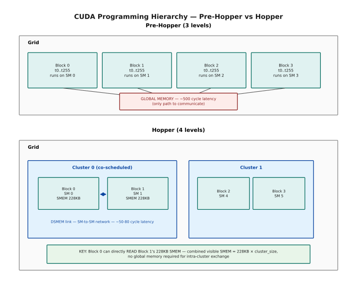
Pre-Hopper, grid and block are the whole story: four blocks, each pinned to its own SM, with no way to talk to each other except a round trip through global memory at ~500 cycles. Hopper inserts a fourth level, the cluster, between block and grid. Blocks 0 and 1 are co-scheduled onto adjacent SMs inside the same cluster and get a direct DSMEM link at ~50-80 cycles — Block 0 can read Block 1's 228 KB of shared memory as if it were an extension of its own, so a cluster of size N exposes N × 228 KB with no global-memory round trip required.
1.2 Why Clusters Exist — The Problem They Solve¶
To understand why clusters were invented, you need to understand what happens at the hardware level when two thread blocks want to share data. This section digs into the mechanics.
On any GPU before Hopper, shared memory is completely private to one thread block. There is no hardware pathway for two blocks to see each other's shared memory. This means any inter-block communication must go through global memory (HBM), which involves: 1. Block A writes results to a global buffer (HBM write) 2. Block B reads from that global buffer (HBM read) 3. Total round-trip: 2 × ~500 cycles + serialization overhead
For algorithms like attention (where blocks need to cooperate on softmax normalization) or top-k (where blocks need to know each other's partial results), this round-trip to global memory is a serious bottleneck.
Clusters solve this by extending the hardware to allow shared-memory cross-access within a group of co-scheduled blocks. The key hardware enabling this is the SM-to-SM DSMEM interconnect within a GPC (Graphics Processing Cluster). When blocks are placed in the same cluster, the hardware routes their shared-memory accesses through this dedicated interconnect instead of global memory.
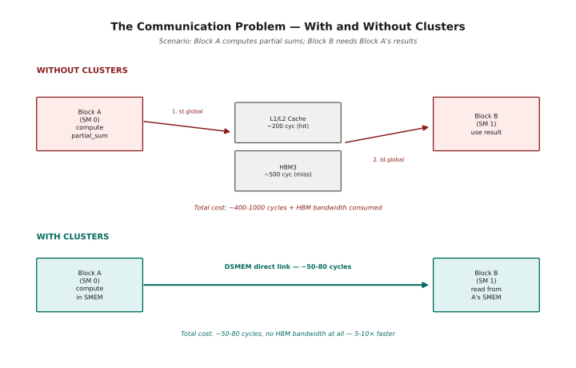
Without clusters, Block A has one path to Block B: write to global memory, Block B reads it back — ~400-1000 cycles plus whatever HBM bandwidth that round trip consumes. With clusters, the same exchange is a single DSMEM hop at ~50-80 cycles, with no HBM traffic at all — a 5-10× speedup for intra-cluster communication. This is the mechanism behind FlashAttention 3's softmax reduction, GEMM's shared input tiles, top-k filtering's partial-list merges, and any all-reduce within a small group of blocks.
1.3 How Clusters Actually Work — Mechanics¶
Let's be very precise about what clusters do and don't do, because there are several common misconceptions.
Misconception 1: "Clusters create a shared memory pool." Wrong. Each block still has its OWN private shared memory. What changes is that threads in Block A can now issue loads/stores that target Block B's shared memory. It's cross-access, not pooling.
Misconception 2: "The cluster is a hardware concept." Wrong. The cluster is a SOFTWARE abstraction. The hardware concept is the GPC (Graphics Processing Cluster), which is a group of ~18 SMs that share an L2 slice and the DSMEM interconnect. The cluster tells the scheduler to place the cluster's blocks on SMs within the same GPC so the DSMEM interconnect is available.
Misconception 3: "You can have unlimited cluster size." Wrong. The maximum portable cluster size is 8 blocks. Size 16 exists but requires a non-portable flag and may leave SMs idle.
Step 1: Kernel launch with cluster size = 2
my_kernel<<<dim3(128,1,1), dim3(256,1,1)>>>(...);
// 128 blocks total, cluster size 2 -> 64 clusters of 2 blocks each
Step 3: Both blocks launch simultaneously
The "concurrent" guarantee means:
- Block 0 and Block 1 are both running at the same time
- Neither will be pre-empted while the other runs
- DSMEM accesses are valid during the entire kernel
Step 4: thread in Block 0 reaching into Block 1's SMEM
uint32_t remote_addr = mapa(my_smem_addr, /*rank=*/1);
// remote_addr now points into Block 1's shared memory
float val = ld.shared::cluster [remote_addr];
// This load travels via the SM-to-SM DSMEM interconnect
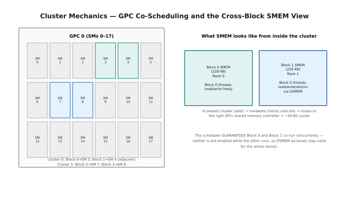
Step 2: the scheduler places both of a cluster's blocks on SMs within the same GPC — here Cluster 0's Block 0 and Block 1 land on adjacent SMs 3 and 4, Cluster 1's on SMs 7 and 8 — and guarantees they co-run concurrently, which is what makes Step 3's promise hold. That guarantee is what lets Step 4 work: a thread in Block 0 calls mapa to retarget a local SMEM address at Block 1 (rank 1), then ld.shared::cluster on that address — hardware checks the rank bits and routes to Block 1's shared-memory controller in ~50-80 cycles. The right-hand panel shows what that looks like from inside the cluster: each block still privately owns its own 228 KB, but Block 0's threads can read, write, and atomically operate on Block 1's share via DSMEM, not just their own.
1.4 Cluster Sizes — Practical Considerations¶
Choosing a cluster size is a tradeoff between more shared-memory capacity (bigger is better) vs. worse SM utilization (bigger wastes slots) and higher synchronization cost (bigger is slower to sync).
A key hardware fact: the full GH100 die has 8 GPCs of up to 18 SMs each (144 SMs total) — but the shipping H100 product disables some for yield, so the real count per GPC is lower and uneven: H100 SXM5 ships 132 SMs across its 8 GPCs (~16-17 per GPC on average), and H100 PCIe ships only 114. The table below uses the full die's 18-SM GPC as the clean illustrative case for the capacity model; on a real card, substitute whatever SM count that specific GPC actually has. A cluster of size 2 fits 9 times per GPC (18/2 = 9), with no waste. A cluster of size 4 fits 4 times (18/4 = 4 clusters, 2 SMs idle per GPC — but the scheduler can fill these with non-cluster blocks). A cluster of size 16 requires all 18 SMs but only uses 16, so 2 SMs sit idle per GPC.
Cluster Size Trade-offs — Practical Decision Table
══════════════════════════════════════════════════════════════════════
Size Clusters/GPC SMs Used SMs Idle Sync Cost Notes
────────────────────────────────────────────────────────────────
1 18 1 17 N/A Just a normal block, no DSMEM
2 9 2 16 ~87 cycles ★ Best default choice
4 4 4 14 ~87 cycles Good for large tile GEMM
8 2 8 10 ~87 cycles Max fully-portable size
16 1 16 2 ~150 cycles Needs non-portable flag
(*) Non-portable: requires cudaFuncAttributeNonPortableClusterSizeAllowed
Why ~87 cycles for sizes 2-8?
The synchronization cost is dominated by the worst-case SM-to-SM
latency within a GPC, which is ~87 cycles regardless of whether
you're syncing 2 or 8 blocks. All blocks must "arrive" and the
last one sets the barrier. Cost = latency of the furthest SM pair.
Why 150 cycles for size 16?
Size 16 spans more of the GPC's internal network, adding latency.
─── The Rule of Thumb ───────────────────────────────────────────
│ │
│ • Default to cluster size 2. │
│ • Use size 4 or 8 only if your algorithm needs >456 KB SMEM. │
│ • Never use size 16 unless you've profiled and verified it │
│ helps — the idle SMs hurt occupancy everywhere. │
│ │
└─────────────────────────────────────────────────────────────────
Grid Size Constraint (VERY IMPORTANT):
The grid dimension MUST be a multiple of the cluster size.
cluster size = 2 → grid.x must be 2, 4, 6, 8, ... (any even)
cluster size = 4 → grid.x must be 4, 8, 12, 16, ...
cluster size = 8 → grid.x must be 8, 16, 24, ...
WRONG: cluster_size=4, grid.x=10 → undefined behavior
RIGHT: cluster_size=4, grid.x=12 → 3 clusters per row in grid
1.5 Creating Clusters in Code — Two Methods¶
There are two ways to specify the cluster size: a compile-time attribute baked into the kernel, or a runtime API that allows flexible configuration.
Method 1 (compile-time) is simpler and slightly faster because the cluster size is baked into the PTX. This is preferred when the cluster size is fixed for a given kernel.
Method 2 (runtime) is more flexible — you can change the cluster size without recompiling. This is useful for auto-tuning or when the optimal cluster size depends on the input shape.
Method 1 vs Method 2 — When to Use Each
══════════════════════════════════════════════════════════════════════
Method 1: Compile-time attribute
──────────────────────────────────────────────────────
__global__ void __cluster_dims__(2, 1, 1)
my_kernel(float* data) { ... }
dim3 grid(128, 1, 1); // MUST be a multiple of (2, 1, 1)
dim3 block(256, 1, 1);
my_kernel<<<grid, block>>>(data); // Standard launch syntax
Pros:
├── Simple, no extra launch boilerplate
├── Compiler can optimize knowing the cluster size at compile time
└── PTX special registers are resolved at compile time
Cons:
└── Fixed at compile time — need separate kernels for size 2 vs 4
──────────────────────────────────────────────────────
Method 2: Runtime API
──────────────────────────────────────────────────────
// Configuration struct
cudaLaunchConfig_t config = {};
config.gridDim = dim3(128, 1, 1);
config.blockDim = dim3(256, 1, 1);
config.dynamicSmemBytes = 0;
// Attribute array
cudaLaunchAttribute attrs[1];
attrs[0].id = cudaLaunchAttributeClusterDimension;
attrs[0].val.clusterDim = {2, 1, 1}; // cluster size here
config.attrs = attrs;
config.numAttrs = 1;
// Extended launch API
cudaLaunchKernelEx(&config, my_kernel, data);
Pros:
├── Cluster size can be a runtime variable
├── Same kernel binary, different cluster sizes per launch
└── Good for auto-tuning loops
Cons:
└── More boilerplate; slightly higher launch overhead
1.6 Cluster API — Cooperative Groups¶
The cooperative_groups library provides the high-level C++ interface for working with clusters. Rather than writing raw PTX for mapa and bar.cluster.arrive, you use methods on a cluster_group object.
Cooperative Groups — Cluster Operations Reference
══════════════════════════════════════════════════════════════════════
Include:
#include <cooperative_groups.h>
namespace cg = cooperative_groups;
Inside a cluster kernel:
cg::cluster_group cluster = cg::this_cluster();
Available methods on cluster_group:
──────────────────────────────────────────────────────────────────
cluster.num_blocks()
→ uint32_t: how many blocks are in this cluster (the cluster size)
→ Equivalent to PTX: %cluster_nctarank
cluster.block_rank()
→ uint32_t: which block am I within the cluster? (0 to size-1)
→ Equivalent to PTX: %cluster_ctarank
→ NOT the same as blockIdx.x! That's the global block ID.
cluster.sync()
→ Blocks until ALL blocks in the cluster reach this call.
→ Like __syncthreads() but for the entire cluster.
→ Required before cross-block SMEM reads are safe.
cluster.map_shared_rank(ptr, rank)
→ float*: converts a shared memory pointer from THIS block's view
into a pointer that, when dereferenced, accesses the SAME OFFSET
in ANOTHER block's shared memory (identified by rank).
→ Under the hood: calls the mapa PTX instruction (Section 16).
→ ptr must be a pointer into __shared__ memory of this block.
──────────────────────────────────────────────────────────────────
Example usage pattern (cluster size = 2):
__shared__ float smem[256];
// Step 1: Fill my own shared memory
smem[threadIdx.x] = compute_something();
// Step 2: Wait for ALL blocks to finish writing
cluster.sync();
// Step 3: Read from the OTHER block's shared memory
unsigned int partner_rank = 1 - cluster.block_rank(); // 0→1, 1→0
float* partner_smem = cluster.map_shared_rank(smem, partner_rank);
float their_val = partner_smem[threadIdx.x]; // reads via DSMEM
// Important: smem and partner_smem point to DIFFERENT physical memory!
// smem → this SM's SRAM
// partner_smem → partner SM's SRAM (accessed via DSMEM interconnect)
1.7 PTX Special Registers for Clusters¶
When you write inline PTX inside a cluster kernel, you can access cluster-specific hardware registers directly. These give you raw access to the same information that cg::this_cluster() provides, but without the C++ wrapper overhead.
PTX Special Registers for Clusters
══════════════════════════════════════════════════════════════════════
Register Meaning
──────────────────────────────────────────────────────────────────
%cluster_ctaid.x/y/z This CTA's (block's) position within the
cluster grid dimensions. Similar to how
%ctaid.x is position within the overall grid.
%cluster_nctaid.x/y/z The cluster dimensions (size in each dim).
If __cluster_dims__(4,1,1), then x=4, y=z=1.
%cluster_ctarank Linearized rank: x + y*nx + z*nx*ny
This is the value returned by block_rank().
%cluster_nctarank Total blocks in cluster. Same as num_blocks().
%is_explicit_cluster 1 if the kernel was launched with an explicit
cluster size, 0 if using the default (1×1×1).
─── Concrete Example ────────────────────────────────────────────
Kernel launched with: __cluster_dims__(4, 2, 1) — 8 blocks per cluster
This block is at cluster position (2, 1, 0):
%cluster_ctaid.x = 2
%cluster_ctaid.y = 1
%cluster_ctaid.z = 0
%cluster_nctaid.x = 4
%cluster_nctaid.y = 2
%cluster_nctaid.z = 1
%cluster_ctarank = 2 + 1×4 + 0×8 = 6 (6th block in cluster)
%cluster_nctarank = 8
%is_explicit_cluster = 1
─── Reading in Inline PTX ───────────────────────────────────────
uint32_t my_rank;
asm("mov.u32 %0, %cluster_ctarank;" : "=r"(my_rank));
// Equivalent to: cluster.block_rank()
★ Section 1 — Runnable Code: Cluster Inspection Kernel¶
Before looking at the code, let's work through a manual example.
Manual Worked Example:
Suppose we launch a kernel with __cluster_dims__(2, 1, 1) and a grid of 4 blocks. The 4 blocks form 2 clusters:
- Cluster 0: Block 0 (rank 0) and Block 1 (rank 1)
- Cluster 1: Block 2 (rank 0) and Block 3 (rank 1)
Inside Block 1 (global blockIdx.x = 1), the PTX registers are:
- %cluster_ctarank = 1 (it's the second block in cluster 0)
- %cluster_nctarank = 2 (cluster has 2 blocks)
- %cluster_ctaid.x = 1 (same as rank since dims are 1D)
- %ctaid.x = 1 (global block ID, same here but different in larger grids)
The partner rank is 1 - my_rank = 0, which is Block 0 globally.
═══════════════════════════════════════════════════════
FILE: ex01_cluster_inspect.cu
COMPILE: nvcc -std=c++17 -arch=sm_90a -O2 ex01_cluster_inspect.cu -o ex01_cluster
NOTE: Requires Hopper (H100) or Blackwell GPU.
Will NOT compile on sm_80 (A100) or earlier.
RUN: ./ex01_cluster
EXPECT: Per-block report showing cluster ranks, then a cross-block
shared-memory exchange verification.
═══════════════════════════════════════════════════════
// ═══════════════════════════════════════════════════════════════════
// ex01_cluster_inspect.cu
//
// PURPOSE: Demonstrates Thread Block Clusters on the H100.
// - Shows how to launch a cluster kernel
// - Reads cluster special registers via inline PTX
// - Demonstrates cooperative_groups cluster API
// - Performs a simple cross-block shared memory exchange
// to prove DSMEM access works
//
// WHAT TO LOOK FOR IN THE OUTPUT:
// - Each block prints its global ID (blockIdx.x) and its rank
// within the cluster (0 or 1 for a size-2 cluster)
// - The cross-block exchange shows each block reading the other's
// shared memory value
//
// REQUIRES: sm_90a (H100/Hopper) or sm_100a (B200/Blackwell)
// ═══════════════════════════════════════════════════════════════════
#include <cstdio>
#include <cstdint>
#include <cooperative_groups.h> // for cg::this_cluster(), cluster_group
namespace cg = cooperative_groups;
// ─── Error-checking macro ──────────────────────────────────────────
// Always wrap CUDA API calls in this. It prints file, line, and the
// error string so you know exactly where something went wrong.
#define CHECK_CUDA(call) do { \
cudaError_t _err = (call); \
if (_err != cudaSuccess) { \
fprintf(stderr, "CUDA ERROR at %s:%d — %s\n", \
__FILE__, __LINE__, cudaGetErrorString(_err)); \
exit(1); \
} \
} while(0)
// ─── Result struct ─────────────────────────────────────────────────
// We collect per-block info on the device and copy it back to the host
// for printing. Using a struct keeps the data organized.
struct BlockInfo {
uint32_t global_block_id; // blockIdx.x
uint32_t cluster_rank; // this block's rank within its cluster
uint32_t cluster_size; // total blocks in the cluster
uint32_t cluster_ctaid_x; // cluster-local block ID (same as rank for 1D)
float my_smem_value; // value this block wrote to its SMEM
float partner_smem_value; // value this block read from partner's SMEM
};
// ─── Cluster kernel ────────────────────────────────────────────────
// __cluster_dims__(2, 1, 1) tells the compiler to group blocks into
// clusters of 2×1×1 = 2 blocks. This attribute is baked into the PTX.
//
// The kernel does:
// 1. Read cluster special registers via inline PTX
// 2. Write a unique value to this block's SMEM
// 3. Sync across the cluster (ensures partner's SMEM is ready)
// 4. Read the partner block's SMEM via DSMEM
// 5. Write all info to global output array
__global__ void __cluster_dims__(2, 1, 1)
inspect_cluster(BlockInfo* output) {
// ── Step 1: Read cluster registers ──────────────────────────
// These inline PTX statements read hardware registers directly.
// They are equivalent to calling cg::this_cluster() methods.
uint32_t global_id, rank, cluster_size, ctaid_x;
// blockIdx.x — global block index across the entire grid
asm("mov.u32 %0, %ctaid.x;" : "=r"(global_id));
// Rank within the cluster (0 to cluster_size-1)
asm("mov.u32 %0, %cluster_ctarank;" : "=r"(rank));
// Total blocks in this cluster
asm("mov.u32 %0, %cluster_nctarank;" : "=r"(cluster_size));
// This block's position within cluster (same as rank for 1D)
asm("mov.u32 %0, %cluster_ctaid.x;" : "=r"(ctaid_x));
// ── Step 2: Shared memory setup ─────────────────────────────
// Each block allocates 64 floats of SMEM.
// All 64 floats are initialized to the same value so we can
// check any index after the exchange.
__shared__ float smem[64];
// Write a unique value: global block ID × 100
// Block 0 writes 0.0, Block 1 writes 100.0, Block 2 writes 200.0, ...
// This lets us verify which block's data we're reading.
float my_val = static_cast<float>(global_id * 100);
for (int i = threadIdx.x; i < 64; i += blockDim.x) {
smem[i] = my_val;
}
// __syncthreads ensures ALL threads in THIS block have finished
// writing their SMEM before we proceed. Without this, the cluster
// sync below might fire before some threads have written.
__syncthreads();
// ── Step 3: Cluster-wide synchronization ────────────────────
// cluster.sync() is like __syncthreads() but for ALL blocks in
// the cluster. After this point, EVERY block's SMEM writes are
// visible to every other block in the cluster.
//
// Timeline:
// Block 0: ... writes smem ... | cluster.sync() | reads Block 1's smem
// Block 1: ... writes smem ... | cluster.sync() | reads Block 0's smem
// ↑
// Both blocks MUST reach here before either
// can proceed. This is the safety guarantee.
cg::cluster_group cluster = cg::this_cluster();
cluster.sync();
// ── Step 4: Read partner's SMEM via DSMEM ───────────────────
// map_shared_rank(ptr, target_rank) translates 'ptr' (which points
// into THIS block's SMEM) into an equivalent pointer that accesses
// the SAME OFFSET in the TARGET block's SMEM.
//
// Example for block with rank 0:
// partner_rank = 1 - 0 = 1
// partner_ptr points to Block 1's smem[0]
// partner_ptr[5] accesses Block 1's smem[5]
//
// Internally, this uses the 'mapa' PTX instruction (Section 16).
uint32_t partner_rank = 1 - rank; // 0→1, 1→0
float* partner_smem = cluster.map_shared_rank(smem, partner_rank);
float partner_val = partner_smem[0]; // read index 0 from partner's SMEM
// ── Step 5: Write results to global memory ──────────────────
// Only thread 0 in each block writes the output to avoid races.
if (threadIdx.x == 0) {
output[global_id].global_block_id = global_id;
output[global_id].cluster_rank = rank;
output[global_id].cluster_size = cluster_size;
output[global_id].cluster_ctaid_x = ctaid_x;
output[global_id].my_smem_value = my_val;
output[global_id].partner_smem_value = partner_val;
}
}
// ─── Main ──────────────────────────────────────────────────────────
int main() {
printf("╔══════════════════════════════════════════════════════╗\n");
printf("║ Thread Block Cluster Inspection — H100 Demo ║\n");
printf("╚══════════════════════════════════════════════════════╝\n\n");
// Check that we have a Hopper GPU (compute capability 9.0)
cudaDeviceProp prop;
CHECK_CUDA(cudaGetDeviceProperties(&prop, 0));
printf("GPU: %s (SM %d.%d)\n\n", prop.name,
prop.major, prop.minor);
if (prop.major < 9) {
fprintf(stderr,
"ERROR: This example requires a Hopper GPU (SM 9.0+).\n"
" Your GPU is SM %d.%d.\n"
" Use an H100 or B200 instance.\n",
prop.major, prop.minor);
return 1;
}
// ── Launch configuration ─────────────────────────────────────
// 4 blocks total, cluster size 2 → 2 clusters of 2 blocks each
// Cluster 0: blocks 0 and 1
// Cluster 1: blocks 2 and 3
//
// Grid MUST be a multiple of cluster size (4 is divisible by 2 ✓)
const int NUM_BLOCKS = 4;
dim3 grid(NUM_BLOCKS, 1, 1);
dim3 block(32, 1, 1); // 32 threads per block (small for demo)
// ── Allocate output buffer ───────────────────────────────────
BlockInfo* d_output;
CHECK_CUDA(cudaMalloc(&d_output, NUM_BLOCKS * sizeof(BlockInfo)));
// ── Launch cluster kernel ────────────────────────────────────
inspect_cluster<<<grid, block>>>(d_output);
CHECK_CUDA(cudaGetLastError()); // check launch errors
CHECK_CUDA(cudaDeviceSynchronize()); // wait for kernel to finish
// ── Copy results back to host ────────────────────────────────
BlockInfo h_output[NUM_BLOCKS];
CHECK_CUDA(cudaMemcpy(h_output, d_output,
NUM_BLOCKS * sizeof(BlockInfo),
cudaMemcpyDeviceToHost));
// ── Print per-block report ───────────────────────────────────
printf("Per-Block Report:\n");
printf("%-12s %-14s %-14s %-12s %-12s %-16s\n",
"Block(global)", "Cluster Rank", "Cluster Size",
"My SMEM Val", "Partner Val", "Exchange OK?");
printf("%s\n", std::string(80, '-').c_str());
int tests = 0, passed = 0;
for (int i = 0; i < NUM_BLOCKS; i++) {
BlockInfo& b = h_output[i];
// Expected partner value:
// Block 0 (rank 0) → reads Block 1 → value = 1 * 100 = 100.0
// Block 1 (rank 1) → reads Block 0 → value = 0 * 100 = 0.0
// Block 2 (rank 0) → reads Block 3 → value = 3 * 100 = 300.0
// Block 3 (rank 1) → reads Block 2 → value = 2 * 100 = 200.0
int partner_global_id = (b.cluster_rank == 0)
? (b.global_block_id + 1) // rank 0 reads from rank 1
: (b.global_block_id - 1); // rank 1 reads from rank 0
float expected_partner = static_cast<float>(partner_global_id * 100);
bool ok = (b.partner_smem_value == expected_partner);
printf(" %-12u %-14u %-14u %-12.0f %-12.0f %s\n",
b.global_block_id, b.cluster_rank, b.cluster_size,
b.my_smem_value, b.partner_smem_value,
ok ? "✓ PASS" : "✗ FAIL");
tests++;
if (ok) passed++;
}
printf("\n");
printf("DSMEM Exchange Tests: %d/%d passed\n", passed, tests);
// ── Verify cluster metadata ──────────────────────────────────
printf("\nCluster Metadata Verification:\n");
int meta_ok = 1;
for (int i = 0; i < NUM_BLOCKS; i++) {
if (h_output[i].cluster_size != 2) {
printf(" FAIL: block %d cluster_size = %u (expected 2)\n",
i, h_output[i].cluster_size);
meta_ok = 0;
}
// Blocks 0,1 are cluster 0; blocks 2,3 are cluster 1
// Ranks within cluster: block 0 → rank 0, block 1 → rank 1, etc.
uint32_t expected_rank = h_output[i].global_block_id % 2;
if (h_output[i].cluster_rank != expected_rank) {
printf(" FAIL: block %d cluster_rank = %u (expected %u)\n",
i, h_output[i].cluster_rank, expected_rank);
meta_ok = 0;
}
}
if (meta_ok) printf(" ✓ All cluster metadata correct\n");
CHECK_CUDA(cudaFree(d_output));
printf("\n════════════════════════════════════════════════\n");
if (passed == tests && meta_ok) {
printf("ALL TESTS PASSED — Clusters working correctly!\n");
} else {
printf("SOME TESTS FAILED — Check error messages above.\n");
}
printf("════════════════════════════════════════════════\n");
return (passed == tests && meta_ok) ? 0 : 1;
}
Sample Output (H100 SXM5, grid of 4 blocks, cluster size 2):
╔══════════════════════════════════════════════════════╗
║ Thread Block Cluster Inspection — H100 Demo ║
╚══════════════════════════════════════════════════════╝
GPU: NVIDIA H100 80GB HBM3 (SM 9.0)
Per-Block Report:
Block(global) Cluster Rank Cluster Size My SMEM Val Partner Val Exchange OK?
--------------------------------------------------------------------------------
0 0 2 0 100 ✓ PASS
1 1 2 100 0 ✓ PASS
2 0 2 200 300 ✓ PASS
3 1 2 300 200 ✓ PASS
DSMEM Exchange Tests: 4/4 passed
Cluster Metadata Verification:
✓ All cluster metadata correct
════════════════════════════════════════════════
ALL TESTS PASSED — Clusters working correctly!
════════════════════════════════════════════════
With a size-2 cluster, blocks 0–1 form cluster 0 and blocks 2–3 form cluster 1. Each block writes global_block_id × 100 into its own shared memory, then reads index 0 of its partner's shared memory across the DSMEM interconnect — block 0 reads block 1's value (100), block 1 reads block 0's value (0), and the same pattern repeats for the second cluster. prop.name and the exact SM count/clock reported by cudaGetDeviceProperties will vary by the specific H100 SKU (SXM5 vs PCIe) and driver version; everything below the GPU line is deterministic given this launch configuration.
2 — Distributed Shared Memory¶
Section 1 kept saying that blocks in a cluster can read each other's shared memory. DSMEM — Distributed Shared Memory — is the hardware that makes that true.
The name misleads people, so it's worth stating plainly up front: DSMEM is not a pool of memory that blocks share. Each block still owns its own private shared memory. What DSMEM adds is a fast interconnect between SMs in a GPC, plus an addressing scheme that lets one block name a location inside another block's scratchpad.
§2.1 covers the architecture, §2.2 the question you'll actually want answered: how much bandwidth do you get out of it, and when is it worth using instead of just going to global memory?
2.1 DSMEM Architecture¶
Distributed Shared Memory is the hardware feature that makes clusters useful. It's easy to misunderstand what DSMEM actually is, so let's be precise: DSMEM is not a new type of memory or a new pool of SRAM. It is the existing per-SM shared memory, extended with a hardware interconnect that allows one SM to access another SM's shared memory — but only within the same cluster.
The key insight is that each SM has 228 KB of SRAM, and this SRAM is used for shared memory. When a thread block runs on SM 0, its __shared__ allocations live in SM 0's SRAM. When two blocks form a cluster on SMs 0 and 1, the thread block on SM 0 can now issue memory operations that target SM 1's SRAM. The DSMEM interconnect (a dedicated SM-to-SM network within the GPC) routes these operations.
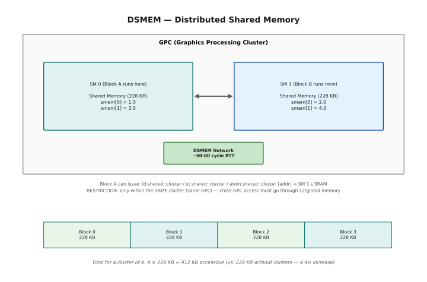
DSMEM is not a new memory pool — it's each SM's existing 228 KB of SRAM, plus a dedicated SM-to-SM interconnect within the GPC that lets Block A issue ld.shared::cluster / st.shared::cluster / atom.shared::cluster against Block B's SRAM and have the hardware route it there in ~50-80 cycles round trip. That only works within the same cluster (same GPC) — cross-GPC access still has to go through L2 or global memory. A cluster of 4 blocks therefore exposes 4 × 228 KB = 912 KB of combined shared memory, a 4× increase over the 228 KB a single block sees on its own.
2.2 DSMEM Bandwidth Model¶
Understanding the bandwidth available through DSMEM versus global memory is important for reasoning about whether clusters help your specific workload.
The H100 has ~3.35 TB/s of HBM3 bandwidth shared across all 132 SMs. Per-SM, that's about 25 GB/s of global memory bandwidth. The DSMEM interconnect operates in parallel with the global memory path — so using DSMEM does not reduce your global memory bandwidth. You get both simultaneously.
H100 System Bandwidth Numbers (approximate):
HBM3 bandwidth: 3.35 TB/s (all SMs share this)
L2 cache bandwidth: 12.0 TB/s (all SMs share this)
Per-SM share (132 SMs): ~25 GB/s global / ~90 GB/s L2
DSMEM Interconnect:
- Dedicated SM-to-SM bandwidth within GPC
- Available SIMULTANEOUSLY with global memory accesses
- Does NOT consume HBM or L2 bandwidth
- Estimated: ~256 GB/s SM-to-SM per cluster (estimated)
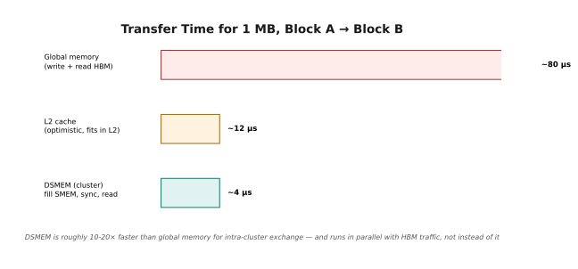
The three routes for Block A to hand 1 MB to Block B. Through global memory: a 1 MB write plus a 1 MB read, each at the ~25 GB/s a single SM gets of the shared 3.35 TB/s HBM3 pool, for ~80 μs total. Through L2, optimistically assuming the write stays resident for Block B's read at ~90 GB/s per-SM L2 share: ~12 μs. Through DSMEM — Block A fills SMEM, cluster.sync(), Block B reads it back at an estimated ~256 GB/s SM-to-SM — the transfer itself is ~4 μs, and the cluster.sync() overhead (~87 cycles at ~1.5 GHz, ~58 ns) is close enough to zero to ignore. DSMEM helps when blocks exchange large amounts of data across multiple communication rounds and the data fits inside 228 KB × cluster_size; it does nothing for a kernel that's compute-bound or that rarely communicates.
3 — TMA Multicast with DSMEM¶
Here is the first place clusters pay for themselves in a real kernel.
In a tiled GEMM, every block in a cluster typically needs the same tile of the A matrix. Without clusters, each block fetches its own copy from HBM — four blocks, four identical fetches, four times the bandwidth. TMA multicast lets one fetch land in all of them at once.
This is a short section with one idea in it, but it is the idea that makes clusters worth the complexity for GEMM and attention kernels.
3.1 The Multicast Optimization¶
TMA (Tensor Memory Accelerator) is the H100's hardware unit for copying large tiles of data from global memory (HBM) to shared memory without involving the CPU or the thread warps. TMA multicast extends this by allowing a SINGLE HBM fetch to be delivered to MULTIPLE SMs simultaneously.
This is especially powerful for GEMM (matrix multiplication) kernels. In a typical GEMM, every block in a cluster needs the same tile of matrix A. Without multicast, each block issues its own TMA fetch, causing N redundant HBM reads for cluster size N. With multicast, a single TMA fetch delivers the data to all N SMs at once.
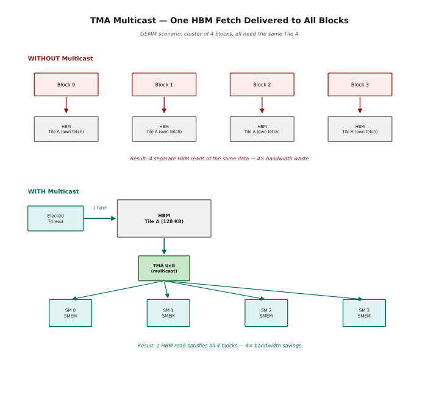
GEMM scenario: a cluster of 4 blocks that all need the same Tile A. Without multicast, each block issues its own TMA fetch — 4 separate reads of identical data, 4× bandwidth waste. With multicast, a single elected thread issues one TMA request; the TMA unit fetches Tile A from HBM once and fans the copy out to all 4 SMs' shared memory in hardware, so one HBM read satisfies every block in the cluster.
For a GEMM kernel computing output tiles C = A × B, each output tile needs a row-stripe of A (shared by every block in a row of the cluster) and a column-stripe of B (shared by every block in a column). With multicast, all row-blocks share one A fetch and all col-blocks share one B fetch — for a 2×2 cluster, both reads are halved, a 2× bandwidth saving. This is one reason FlashAttention 3 achieves such high throughput on H100.
Code pattern — only one thread per cluster issues the TMA:
if (cluster.block_rank() == 0 && threadIdx.x == 0) {
// Issue TMA multicast: delivers to ALL blocks in cluster
cp.async.bulk.tensor.2d.shared::cluster.global [smem_desc], [gmem_desc];
}
cluster.sync(); // All blocks wait until TMA completes
// Now all blocks' SMEM contains the loaded tile
4 — PTX — Parallel Thread Execution¶
We now switch topics entirely. The rest of this chapter is about writing GPU assembly.
PTX is the intermediate language nvcc emits before the real machine code
(SASS). It sits at roughly the same level as LLVM IR or Java bytecode: stable,
documented, and portable across GPU generations in a way SASS is not.
§4.1 explains where PTX sits in the compilation pipeline. §4.2 answers the
question you should be asking — why bother, when CUDA C++ works fine? The honest
answer is that some Hopper instructions have no C++ form at all, and the ones
you'll want most (wgmma, TMA, mbarrier) are among them.
4.1 What is PTX?¶
PTX (Parallel Thread Execution) is NVIDIA's virtual assembly language for GPUs. When you write nvcc mykernel.cu, the compiler goes through two major stages: first, it compiles your CUDA C++ into PTX (a portable, architecture-neutral representation); second, a PTX assembler called ptxas converts that PTX into SASS (Streaming ASSembler), which is the actual machine code that runs on the hardware.
Think of PTX as analogous to Java bytecode or LLVM IR — it's a stable intermediate format that can be compiled to different hardware targets without changing the source. This is why old CUDA code can run on new GPUs: the PTX from an older binary gets JIT-compiled by the new GPU's driver.
As a programmer, PTX is important for two reasons: (1) some H100 features simply have no C++ equivalents and can only be accessed through PTX, and (2) understanding PTX helps you read the assembly output of your kernels and understand what the compiler is actually generating.
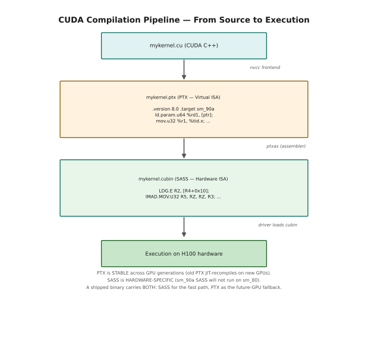
nvcc runs in two stages: its frontend parses the CUDA extensions, splits off host code, and compiles device code to mykernel.ptx — PTX, a stable virtual ISA. ptxas then assembles that PTX into mykernel.cubin, hardware-specific SASS for the target architecture, which the GPU driver loads and runs on the SMs. PTX is stable across GPU generations (old PTX gets JIT-recompiled on a new GPU's driver); SASS is not (sm_90a SASS will not run on sm_80). A shipped binary carries both — SASS as the fast path for the GPU it was built for, PTX as the fallback for whatever comes next.
cuobjdump --dump-ptx mykernel -> see the PTX from a compiled binary
cuobjdump --dump-sass mykernel -> see the hardware assembly
Useful compile flags:
nvcc -keep -> keeps intermediate .ptx files
nvcc --ptxas-options=-v -> shows register/SMEM usage
nvcc -lineinfo -> embeds source line info for profiler
4.2 Why Learn PTX?¶
As a GPU programmer, you can go very far with CUDA C++ and never touch PTX. So why should you learn it? There are four concrete reasons.
First, some H100 features simply don't exist in C++. The wgmma.mma_async instruction (Warp Group Matrix Multiply-Accumulate) that drives the H100's tensor cores has no C++ wrapper — it can only be invoked through PTX or through CUTLASS, which itself uses PTX internally. If you want to write a custom attention kernel that beats cuDNN, you need PTX.
Second, the compiler isn't perfect. For extremely performance-critical inner loops (like the inner loop of a GEMM kernel that runs trillions of times during training), hand-written PTX can eliminate compiler inefficiencies like unnecessary register copies, suboptimal instruction scheduling, or failure to use specific memory fence semantics.
Third, the entire GPU computing ecosystem is built on libraries like CUTLASS, FlashAttention, and cuBLAS that are implemented with extensive inline PTX. If you want to read, understand, or modify any of these, PTX is non-negotiable.
Fourth, profiling. When Nsight Compute or Nsight Systems shows you that your kernel is 2× slower than expected and you suspect a bank conflict or a memory pipeline stall, the way to diagnose it is to look at the PTX and SASS output.
The PTX Features That Matter Most for H100 Programming
══════════════════════════════════════════════════════════════════════
C++ Equivalent? PTX Instruction What It Does
──────────────────────────────────────────────────────────────────
NO wgmma.mma_async Tensor Core matmul (H100 primary compute)
NO cp.async.bulk.tensor TMA copy: HBM → SMEM asynchronously
NO mbarrier.* Asynchronous barrier (pairs with TMA)
NO stmatrix Store to SMEM in tensor core layout
NO elect.sync Elect a single leader thread per warp
YES fma.rn.f32 Fused multiply-add (but PTX gives more control)
YES ld.shared SMEM load (but PTX exposes ::cluster variant)
YES bar.sync Thread synchronization (PTX is more flexible)
HOW TO VIEW PTX FROM YOUR KERNEL:
# Method 1: Ask nvcc to emit PTX
nvcc -std=c++17 -arch=sm_90a -O2 --keep mykernel.cu
# Produces mykernel.ptx (and other intermediate files)
# Method 2: View PTX from compiled binary
cuobjdump --dump-ptx mykernel
# Method 3: Compiler Explorer (online — no GPU needed!)
# Go to https://godbolt.org, select "CUDA nvcc" as compiler,
# choose target "ptx sm_90a" — paste your kernel, see PTX live.
5 — Inline PTX Assembly¶
This is the section to bookmark. asm() is how PTX gets into an otherwise
ordinary CUDA C++ kernel, and its syntax — inherited from GCC — is famously
unfriendly on first contact.
The mechanism is simpler than it looks. You write an instruction string with
placeholders (%0, %1, …), then tell the compiler which C++ variables fill
those placeholders and whether each one is being read or written. The compiler
handles register allocation; you handle the contract.
Get that contract wrong and the failures are silent — wrong answers rather than compile errors — which is why the next section is devoted entirely to the rules.
5.1 The asm() Statement¶
Inline PTX lets you embed PTX instructions directly inside CUDA C++ functions. The syntax is the same as GCC inline assembly (because nvcc uses a GCC-style frontend), but the instruction strings are PTX rather than x86 assembly.
The key concept is the constraint system: you declare which C++ variables map to which PTX registers, and in what way (read-only input, write-only output, or read-write). The compiler then allocates actual registers and substitutes them for the %0, %1, etc. placeholders in your instruction string.
Think of it like a function call where you explicitly specify the calling convention: which variables go into registers, which are outputs, and whether any memory might be touched that the compiler doesn't know about.
The asm() Statement — Anatomy
══════════════════════════════════════════════════════════════════════
Syntax:
asm [volatile] ("instruction string"
: output operands ← after 1st colon (can be empty)
: input operands ← after 2nd colon (can be empty)
[ : clobbers ] ← after 3rd colon (optional)
);
─── Annotated Example ──────────────────────────────────────────
uint32_t result; // will hold the output
uint32_t a = 42; // first input
uint32_t b = 10; // second input
asm("add.u32 %0, %1, %2;"
// ─────── ── ── ──
// │ │ │ └── third PTX operand: maps to input b
// │ │ └────── second PTX operand: maps to input a
// │ └────────── first PTX operand: maps to output result
// └─────────────────── the PTX instruction name
: "=r"(result) // output: "=" = write-only, "r" = 32-bit int register
: "r"(a), "r"(b) // inputs: "r" = 32-bit int register (read-only)
);
// After this: result == 52
─── What the Compiler Does ──────────────────────────────────────
1. It allocates actual PTX registers, say %r5, %r6, %r7.
2. It emits:
// (compiler moves a and b into registers first)
mov.u32 %r6, 42; // load a
mov.u32 %r7, 10; // load b
add.u32 %r5, %r6, %r7; // YOUR instruction
// (compiler moves %r5 into 'result' variable)
mov.u32 result_in_mem, %r5;
3. The actual PTX file contains the real register names.
Your %0/%1/%2 are just placeholders during compilation.
─── Constraint Cheat Sheet ──────────────────────────────────────
"=r" Write-only 32-bit integer register (use for int32/uint32 outputs)
"=h" Write-only 16-bit integer register (use for int16/uint16 outputs)
"=l" Write-only 64-bit integer register (use for pointers and uint64)
"=f" Write-only 32-bit float register (use for float outputs)
"=d" Write-only 64-bit float register (use for double outputs)
"r" Read-only 32-bit integer register (use for int32/uint32 inputs)
"h" Read-only 16-bit integer register
"l" Read-only 64-bit integer register
"f" Read-only 32-bit float register
"d" Read-only 64-bit float register
"n" Immediate integer constant — MUST be compile-time constant!
"+r" Read-write 32-bit register (variable is both input and output)
"=&r" Early-clobber write-only register (see Section 6.3)
Manual Worked Example for asm():
Let's manually trace what happens with fma.rn.f32 (fused multiply-add):
- Input: a = 3.0f, b = 2.0f, c = 1.0f
- Instruction: fma.rn.f32 %0, %1, %2, %3;
- FMA computes: result = (a * b) + c with ONE rounding step
- Without FMA: mul %tmp, a, b then add result, %tmp, c — two rounds
- With FMA: single operation → result = (3.0 * 2.0) + 1.0 = 7.0
- The .rn means "round to nearest even" (IEEE 754 default)
═══════════════════════════════════════════════════════
FILE: ex02_ptx_basics.cu
COMPILE: nvcc -std=c++17 -arch=sm_90a -O2 ex02_ptx_basics.cu -o ex02_ptx
(ALSO works on sm_80, sm_86, sm_89 — nothing Hopper-specific here)
RUN: ./ex02_ptx
EXPECT: 11 numbered tests (17 individual checks total — Tests 4, 6 and 9
each run more than one check) all showing PASS
═══════════════════════════════════════════════════════
// ═══════════════════════════════════════════════════════════════════
// ex02_ptx_basics.cu
//
// PURPOSE: Introduce inline PTX assembly from the ground up.
// Covers: integer arithmetic, FP arithmetic, FMA, predicates,
// special registers, bitwise ops, early clobber, templates.
//
// READING THIS CODE:
// Each test kernel demonstrates ONE PTX concept.
// Read the comment block before each kernel, then trace through
// the "Manual trace" to understand what numbers flow where.
// Then read the code to see how it's expressed in C++ with asm().
//
// WORKS ON: sm_80, sm_86, sm_89, sm_90a, sm_100a
// ═══════════════════════════════════════════════════════════════════
#include <cstdio>
#include <cstdint>
#include <cmath> // for fabsf, fabs
// ─── Error checking macro ──────────────────────────────────────────
#define CHECK_CUDA(call) do { \
cudaError_t _err = (call); \
if (_err != cudaSuccess) { \
fprintf(stderr, "CUDA ERROR at %s:%d — %s\n", \
__FILE__, __LINE__, cudaGetErrorString(_err)); \
exit(1); \
} \
} while(0)
// ─── Allocation helpers ────────────────────────────────────────────
// These macros reduce boilerplate for the common pattern of:
// allocate device memory → launch kernel → copy back → free.
#define ALLOC_DEV(ptr, count) \
CHECK_CUDA(cudaMalloc(&ptr, (count) * sizeof(*ptr)))
#define FREE_DEV(ptr) \
CHECK_CUDA(cudaFree(ptr))
#define COPY_FROM_DEV(host, dev, count) \
CHECK_CUDA(cudaMemcpy(host, dev, (count)*sizeof(*host), cudaMemcpyDeviceToHost))
// ═══════════════════════════════════════════════════════════════════
// TEST 1: Integer Addition — add.u32
// ═══════════════════════════════════════════════════════════════════
//
// PTX instruction: add.u32 dst, src1, src2
// Adds two unsigned 32-bit integers. Overflow wraps (no trap).
// Equivalent to C++: dst = src1 + src2;
//
// Manual trace (a=42, b=10):
// add.u32 %0, %1, %2
// → result = 42 + 10 = 52
//
// Constraint breakdown:
// "=r"(result) → %0 is result, write-only ("="), 32-bit int reg ("r")
// "r"(a) → %1 is a, read-only, 32-bit int reg
// "r"(b) → %2 is b, read-only, 32-bit int reg
__global__ void test_add_u32(uint32_t* out, uint32_t a, uint32_t b) {
uint32_t result;
asm("add.u32 %0, %1, %2;"
: "=r"(result) // %0 → result (write-only output)
: "r"(a), "r"(b) // %1 → a, %2 → b (read-only inputs)
);
out[0] = result; // write to global memory for host to read
}
// ═══════════════════════════════════════════════════════════════════
// TEST 2: Multiply-Add (MAD) — mad.lo.u32
// ═══════════════════════════════════════════════════════════════════
//
// PTX instruction: mad.lo.u32 dst, a, b, c
// Computes a×b+c, takes the LOW 32 bits (lo variant).
// The full product a×b can be 64 bits; .lo discards the upper 32.
// For inputs that fit in 32 bits, this is equivalent to a*b+c.
//
// Why MAD over separate MUL+ADD?
// On GPU hardware, multiply and add are often fused at the
// instruction level for better throughput (one instruction slot
// instead of two). The compiler does this automatically for
// integer code, but using MAD explicitly guarantees it.
//
// Manual trace (a=5, b=7, c=3):
// mad.lo.u32 result, 5, 7, 3
// → 5×7 = 35, 35+3 = 38
// → result = 38
__global__ void test_mad_u32(uint32_t* out, uint32_t a, uint32_t b, uint32_t c) {
uint32_t result;
asm("mad.lo.u32 %0, %1, %2, %3;"
: "=r"(result)
: "r"(a), "r"(b), "r"(c) // %1=a, %2=b, %3=c
);
out[0] = result;
}
// ═══════════════════════════════════════════════════════════════════
// TEST 3: Fused Multiply-Add (FMA) — fma.rn.f32
// ═══════════════════════════════════════════════════════════════════
//
// PTX instruction: fma.rn.f32 dst, a, b, c
// Computes (a × b) + c with a SINGLE rounding step.
//
// Why FMA over separate mul then add?
// mul.f32 a, b → rounds the intermediate product
// add.f32 result, tmp, c → rounds again
// Two roundings → less accurate result.
//
// fma.rn.f32 → the product a×b is computed with infinite precision,
// then c is added, then ONE rounding is applied at the end.
// This is both more accurate AND more efficient (one instruction).
//
// .rn = round to nearest even (the IEEE 754 default mode)
// Other rounding modes: .rz (to zero), .rp (to +inf), .rm (to -inf)
//
// Manual trace (a=2.5, b=4.0, c=1.5):
// result = (2.5 × 4.0) + 1.5 = 10.0 + 1.5 = 11.5 (exact, no rounding needed)
//
// Constraint: "f" means 32-bit floating-point register (.f32)
__global__ void test_fma_f32(float* out, float a, float b, float c) {
float result;
asm("fma.rn.f32 %0, %1, %2, %3;"
: "=f"(result) // "f" = 32-bit floating-point register
: "f"(a), "f"(b), "f"(c)
);
out[0] = result;
}
// ═══════════════════════════════════════════════════════════════════
// TEST 4: Predicate Registers — setp + selp
// ═══════════════════════════════════════════════════════════════════
//
// Predicates are 1-bit boolean registers in PTX. They are used for
// conditional operations without branches.
//
// Pattern: compare → set predicate → use predicate to select value
//
// Instructions:
// setp.gt.s32 p, a, b → p = (a > b) [gt=greater-than, s32=signed]
// selp.s32 dst, x, y, p → dst = p ? x : y [ternary select]
//
// This pattern computes max(a,b) with NO branch instruction.
// The GPU executes both paths in SIMD style using predication.
//
// Manual trace (a=10, b=20):
// p = (10 > 20) = false
// result = false ? 10 : 20 = 20 ← correct max
//
// Manual trace (a=30, b=5):
// p = (30 > 5) = true
// result = true ? 30 : 5 = 30 ← correct max
//
// The { } block creates a PTX scope so ".reg .pred p" is local.
// Multiple asm() blocks can use the same name p without conflict.
__global__ void test_predicate_max(int32_t* out, int32_t a, int32_t b) {
int32_t result;
asm(
"{\n\t" // open PTX scope
" .reg .pred p;\n\t" // declare 1-bit predicate register
" setp.gt.s32 p, %1, %2;\n\t" // p = (a > b) [signed comparison]
" selp.s32 %0, %1, %2, p;\n\t" // result = p ? a : b
"}\n\t" // close PTX scope
: "=r"(result)
: "r"(a), "r"(b)
);
out[0] = result;
}
// ═══════════════════════════════════════════════════════════════════
// TEST 5: Special Registers — %tid.x, %ctaid.x, %ntid.x
// ═══════════════════════════════════════════════════════════════════
//
// PTX special registers give direct access to hardware registers
// that store the current thread's position in the execution hierarchy.
// They are read via "mov.u32 dst, %register_name;"
//
// Common special registers:
// %tid.x, %tid.y, %tid.z → threadIdx.x/y/z
// %ntid.x, %ntid.y, %ntid.z → blockDim.x/y/z
// %ctaid.x, %ctaid.y, %ctaid.z → blockIdx.x/y/z
// %nctaid.x, ... → gridDim.x/y/z
// %laneid → lane within warp (0-31)
// %warpid → warp within SM (0 to num_warps-1)
// %smid → SM index (0 to num_SMs-1)
// %clock → 32-bit cycle counter
// %globaltimer → 64-bit nanosecond timer
//
// Reading %tid.x via PTX is exactly equivalent to threadIdx.x in C++,
// but demonstrates that threadIdx is NOT a variable — it's a hardware
// register read that the CUDA compiler wraps in a friendly name.
__global__ void test_special_regs(uint32_t* tid_out, uint32_t* ctaid_out,
uint32_t* laneid_out) {
uint32_t tid, ctaid, laneid;
asm("mov.u32 %0, %tid.x;" : "=r"(tid)); // threadIdx.x
asm("mov.u32 %0, %ctaid.x;" : "=r"(ctaid)); // blockIdx.x
asm("mov.u32 %0, %laneid;" : "=r"(laneid)); // lane within warp
// Only thread 0 of the first warp writes to avoid races
if (tid == 0) {
tid_out[0] = tid;
ctaid_out[0] = ctaid;
laneid_out[0] = laneid; // should be 0 since tid==0
}
}
// ═══════════════════════════════════════════════════════════════════
// TEST 6: Bitwise Operations — and, or, xor, shl, shr
// ═══════════════════════════════════════════════════════════════════
//
// PTX bitwise instructions operate on .b32 (raw bits, no sign/type).
// They are identical to C++ bitwise operators but in PTX syntax.
//
// Manual trace (a=0xFF00, b=0x0F0F):
// In binary:
// a = 1111 1111 0000 0000
// b = 0000 1111 0000 1111
// and: 0000 1111 0000 0000 = 0x0F00
// or: 1111 1111 0000 1111 = 0xFF0F
// xor: 1111 0000 0000 1111 = 0xF00F
// shl (a << 4):
// a = 0000 0000 1111 1111 0000 0000 (32-bit)
// a << 4 = 0000 1111 1111 0000 0000 0000 → low 32 bits = 0x00FF0000 = 0xFF000
// Wait, let me redo: 0xFF00 = 65280 = 0b1111111100000000
// << 4: 0b11111111000000000000 = 0xFF000 = 1044480 ✓
__global__ void test_bitwise(uint32_t* out, uint32_t a, uint32_t b) {
uint32_t r_and, r_or, r_xor, r_shl, r_shr;
asm("and.b32 %0, %1, %2;" : "=r"(r_and) : "r"(a), "r"(b)); // a & b
asm("or.b32 %0, %1, %2;" : "=r"(r_or) : "r"(a), "r"(b)); // a | b
asm("xor.b32 %0, %1, %2;" : "=r"(r_xor) : "r"(a), "r"(b)); // a ^ b
// Note: shift amount is a literal (4), not a variable.
// PTX requires shift amounts to be immediate or in a register.
asm("shl.b32 %0, %1, 4;" : "=r"(r_shl) : "r"(a)); // a << 4
asm("shr.u32 %0, %1, 4;" : "=r"(r_shr) : "r"(a)); // a >> 4 (logical)
// Note: shr.u32 is logical shift (fills with 0s).
// shr.s32 is arithmetic shift (fills with sign bit).
out[0] = r_and;
out[1] = r_or;
out[2] = r_xor;
out[3] = r_shl;
out[4] = r_shr;
}
// ═══════════════════════════════════════════════════════════════════
// TEST 7: Multi-Instruction Block with Early Clobber
// ═══════════════════════════════════════════════════════════════════
//
// When you write multiple PTX instructions in a single asm() block,
// you can use temporary PTX registers with .reg declarations.
// The { } braces create a local scope for these declarations.
//
// The "&" modifier (early clobber) tells the compiler:
// "This output register may be written BEFORE all inputs are read."
// Without "&", the compiler might assign the output and one input
// to the SAME physical register, causing a read-after-write hazard.
//
// This kernel computes (a + b) * (a - b) = a² - b² using PTX temps.
//
// Manual trace (a=7, b=3):
// sum = 7 + 3 = 10
// diff = 7 - 3 = 4
// result = 10 × 4 = 40 (= 7² - 3² = 49 - 9 = 40 ✓)
__global__ void test_early_clobber(int32_t* out, int32_t a, int32_t b) {
int32_t result;
asm(
"{\n\t"
" .reg .s32 sum;\n\t" // temporary register: sum
" .reg .s32 diff;\n\t" // temporary register: diff
" add.s32 sum, %1, %2;\n\t" // sum = a + b
" sub.s32 diff, %1, %2;\n\t" // diff = a - b
" mul.lo.s32 %0, sum, diff;\n\t" // result = sum × diff
"}\n\t"
: "=&r"(result) // "&" = early clobber: result gets its OWN register,
// guaranteed different from %1 and %2.
// Without "&", compiler might alias %0 and %1!
: "r"(a), "r"(b)
);
out[0] = result;
}
// ═══════════════════════════════════════════════════════════════════
// TEST 8: Read-Write Operand — "+r" constraint
// ═══════════════════════════════════════════════════════════════════
//
// The "+" modifier means the operand is BOTH read and written.
// The same C++ variable is used as both input and output.
// This is useful for increment/decrement in-place operations.
//
// Manual trace (initial=100):
// Step 1: add.u32 counter, counter, 1 → counter = 101
// Step 2: add.u32 counter, counter, 1 → counter = 102
// Step 3: add.u32 counter, counter, 1 → counter = 103
//
// The "+r"(counter) tells the compiler:
// - counter occupies a 32-bit register (%0)
// - before the instruction: %0 = counter (READ from counter)
// - after the instruction: counter = %0 (WRITE to counter)
// - %0 appears on BOTH sides of the instruction
__global__ void test_readwrite(uint32_t* out, uint32_t initial) {
uint32_t counter = initial; // start value
// Each of these reads counter, adds 1, writes back.
// The "+r" constraint makes %0 appear on both left and right.
asm("add.u32 %0, %0, 1;" : "+r"(counter)); // 100 → 101
asm("add.u32 %0, %0, 1;" : "+r"(counter)); // 101 → 102
asm("add.u32 %0, %0, 1;" : "+r"(counter)); // 102 → 103
out[0] = counter;
}
// ═══════════════════════════════════════════════════════════════════
// TEST 9: Immediate Operands — "n" constraint with templates
// ═══════════════════════════════════════════════════════════════════
//
// Some PTX instructions require COMPILE-TIME constant operands.
// The "n" constraint tells the compiler that the operand must be
// a compile-time integer constant (not a runtime variable).
//
// Templates are the natural C++ mechanism for compile-time constants.
// The template parameter SHIFT_AMOUNT is known at compile time, so
// when the template is instantiated, the compiler can substitute
// the literal value directly into the PTX instruction string.
//
// This is exactly how CUTLASS uses template parameters for tile sizes.
//
// Manual trace (val=1, SHIFT_AMOUNT=5):
// shl.b32 result, 1, 5
// → 1 << 5 = 32
//
// Manual trace (val=7, SHIFT_AMOUNT=3):
// shl.b32 result, 7, 3
// → 7 << 3 = 56
template<int SHIFT_AMOUNT>
__global__ void test_immediate(uint32_t* out, uint32_t val) {
uint32_t result;
asm("shl.b32 %0, %1, %2;"
: "=r"(result)
: "r"(val),
"n"(SHIFT_AMOUNT) // "n" = immediate constant (compile-time only!)
// SHIFT_AMOUNT must be known at compile time.
// If you try "n"(runtime_var), it will fail to compile.
);
out[0] = result;
}
// ═══════════════════════════════════════════════════════════════════
// TEST 10: Volatile and Memory Clobber
// ═══════════════════════════════════════════════════════════════════
//
// WITHOUT volatile: the compiler may reorder, merge, or delete asm().
// WITH volatile: the compiler MUST execute it exactly where written.
//
// The "memory" clobber tells the compiler:
// "This instruction may access memory you don't know about.
// Invalidate all cached register copies of memory after this."
//
// Use volatile + "memory" for:
// - Stores (side effects that must happen)
// - Atomics (must happen in order)
// - Barriers (ordering constraints)
// - Any instruction that reads/writes memory implicitly
//
// This test writes to shared memory via PTX store (asm volatile with "memory")
// then reads back to verify the store actually happened.
__global__ void test_volatile_memory(uint32_t* out) {
__shared__ uint32_t smem_val;
if (threadIdx.x == 0) {
// Step 1: Get shared memory address
uint32_t smem_addr = __cvta_generic_to_shared(&smem_val);
// Step 2: Store 0xDEADBEEF via volatile PTX store
// "volatile" = don't reorder this store
// "memory" = this store touches memory the compiler can't see
uint32_t value = 0xDEADBEEF;
asm volatile("st.shared.b32 [%0], %1;"
: // no output (store has no "return value")
: "r"(smem_addr), "r"(value)
: "memory" // MEMORY CLOBBER: forces re-read later
);
// Step 3: Read back via PTX load
// Because of "memory" clobber above, compiler won't cache
// the old value of smem_val in a register. It must re-read.
uint32_t loaded;
asm volatile("ld.shared.b32 %0, [%1];"
: "=r"(loaded)
: "r"(smem_addr)
);
out[0] = loaded; // should be 0xDEADBEEF
}
}
// ═══════════════════════════════════════════════════════════════════
// TEST 11: Warp-Level Intrinsic via PTX — __ballot_sync equivalent
// ═══════════════════════════════════════════════════════════════════
//
// vote.ballot.b32 computes a 32-bit mask where bit i is set if
// thread i in the warp has the input predicate set.
// This is exactly what __ballot_sync(mask, predicate) does in C++.
//
// Showing the PTX version demonstrates that CUDA intrinsics are
// thin wrappers around PTX instructions.
//
// Manual trace (all 32 threads have predicate = true):
// vote.ballot.b32 result, true
// → result = 0xFFFFFFFF (all 32 bits set)
//
// If only even threads (0,2,4,...30) have predicate=true:
// → result = 0x55555555 (bits 0,2,4,...30 set)
__global__ void test_ballot(uint32_t* out) {
// Each thread checks: is my lane ID even?
uint32_t lane;
asm("mov.u32 %0, %laneid;" : "=r"(lane));
uint32_t predicate = (lane % 2 == 0) ? 1 : 0;
uint32_t ballot_result;
asm("vote.ballot.b32 %0, %1;"
: "=r"(ballot_result)
: "r"(predicate)
);
// ballot_result: bit i set iff thread i had predicate=1
// Since even threads have predicate=1: 0x55555555
if (lane == 0) {
out[0] = ballot_result;
}
}
// ═══════════════════════════════════════════════════════════════════
// MAIN — Run all tests and print results
// ═══════════════════════════════════════════════════════════════════
int main() {
printf("╔══════════════════════════════════════════════════════╗\n");
printf("║ Inline PTX Basics — Full Test Suite ║\n");
printf("╚══════════════════════════════════════════════════════╝\n\n");
int tests = 0, passed = 0;
// ─── Test 1: add.u32 ─────────────────────────────────────────
// Expected: 42 + 10 = 52
printf("Test 1: add.u32 (42 + 10 = 52)\n");
{
uint32_t *d_out, h_out;
ALLOC_DEV(d_out, 1);
test_add_u32<<<1, 1>>>(d_out, 42, 10);
CHECK_CUDA(cudaDeviceSynchronize());
COPY_FROM_DEV(&h_out, d_out, 1);
tests++;
if (h_out == 52) { passed++; printf(" ✓ PASS: result = %u\n", h_out); }
else printf(" ✗ FAIL: got %u, expected 52\n", h_out);
FREE_DEV(d_out);
}
// ─── Test 2: mad.lo.u32 ──────────────────────────────────────
// Expected: 5*7 + 3 = 38
printf("\nTest 2: mad.lo.u32 (5*7+3 = 38)\n");
{
uint32_t *d_out, h_out;
ALLOC_DEV(d_out, 1);
test_mad_u32<<<1, 1>>>(d_out, 5, 7, 3);
CHECK_CUDA(cudaDeviceSynchronize());
COPY_FROM_DEV(&h_out, d_out, 1);
tests++;
if (h_out == 38) { passed++; printf(" ✓ PASS: result = %u\n", h_out); }
else printf(" ✗ FAIL: got %u, expected 38\n", h_out);
FREE_DEV(d_out);
}
// ─── Test 3: fma.rn.f32 ──────────────────────────────────────
// Expected: 2.5 * 4.0 + 1.5 = 11.5
printf("\nTest 3: fma.rn.f32 (2.5 * 4.0 + 1.5 = 11.5)\n");
{
float *d_out, h_out;
ALLOC_DEV(d_out, 1);
test_fma_f32<<<1, 1>>>(d_out, 2.5f, 4.0f, 1.5f);
CHECK_CUDA(cudaDeviceSynchronize());
COPY_FROM_DEV(&h_out, d_out, 1);
tests++;
if (fabsf(h_out - 11.5f) < 1e-5f) {
passed++; printf(" ✓ PASS: result = %.4f\n", h_out);
} else printf(" ✗ FAIL: got %.4f, expected 11.5\n", h_out);
FREE_DEV(d_out);
}
// ─── Test 4: Predicate max ───────────────────────────────────
printf("\nTest 4: predicate max\n");
{
int32_t *d_out, h_out;
ALLOC_DEV(d_out, 1);
// max(10, 20) should be 20
test_predicate_max<<<1, 1>>>(d_out, 10, 20);
CHECK_CUDA(cudaDeviceSynchronize());
COPY_FROM_DEV(&h_out, d_out, 1);
tests++;
if (h_out == 20) { passed++; printf(" ✓ PASS: max(10,20) = %d\n", h_out); }
else printf(" ✗ FAIL: got %d, expected 20\n", h_out);
// max(30, 5) should be 30
test_predicate_max<<<1, 1>>>(d_out, 30, 5);
CHECK_CUDA(cudaDeviceSynchronize());
COPY_FROM_DEV(&h_out, d_out, 1);
tests++;
if (h_out == 30) { passed++; printf(" ✓ PASS: max(30,5) = %d\n", h_out); }
else printf(" ✗ FAIL: got %d, expected 30\n", h_out);
FREE_DEV(d_out);
}
// ─── Test 5: Special registers ───────────────────────────────
printf("\nTest 5: special registers (%%tid.x, %%ctaid.x, %%laneid)\n");
{
uint32_t *d_tid, *d_ctaid, *d_lane;
uint32_t h_tid, h_ctaid, h_lane;
ALLOC_DEV(d_tid, 1);
ALLOC_DEV(d_ctaid, 1);
ALLOC_DEV(d_lane, 1);
// Launch 2 blocks of 64 threads each.
// Block 0, thread 0, lane 0 will write the output.
test_special_regs<<<2, 64>>>(d_tid, d_ctaid, d_lane);
CHECK_CUDA(cudaDeviceSynchronize());
COPY_FROM_DEV(&h_tid, d_tid, 1);
COPY_FROM_DEV(&h_ctaid, d_ctaid, 1);
COPY_FROM_DEV(&h_lane, d_lane, 1);
// Thread 0 of block 0 writes: tid=0, ctaid=0, laneid=0
tests++;
if (h_tid == 0) { passed++; printf(" ✓ PASS: tid.x = %u\n", h_tid); }
else printf(" ✗ FAIL: tid.x = %u (expected 0)\n", h_tid);
printf(" INFO: ctaid.x = %u (block index, not checked — scheduling dependent)\n",
h_ctaid);
printf(" INFO: laneid = %u (should be 0 since tid=0)\n", h_lane);
FREE_DEV(d_tid); FREE_DEV(d_ctaid); FREE_DEV(d_lane);
}
// ─── Test 6: Bitwise operations ──────────────────────────────
// a=0xFF00, b=0x0F0F
// Expected: and=0x0F00, or=0xFF0F, xor=0xF00F, shl=0xFF000, shr=0x0FF0
printf("\nTest 6: bitwise ops (a=0xFF00, b=0x0F0F)\n");
{
uint32_t *d_out, h_out[5];
ALLOC_DEV(d_out, 5);
test_bitwise<<<1, 1>>>(d_out, 0xFF00, 0x0F0F);
CHECK_CUDA(cudaDeviceSynchronize());
COPY_FROM_DEV(h_out, d_out, 5);
struct { const char* name; uint32_t got; uint32_t exp; } checks[] = {
{"and", h_out[0], 0x0F00},
{"or", h_out[1], 0xFF0F},
{"xor", h_out[2], 0xF00F},
{"shl", h_out[3], 0xFF000},
{"shr", h_out[4], 0x0FF0}, // 0xFF00 >> 4 = 0x0FF0
};
for (auto& c : checks) {
tests++;
if (c.got == c.exp) {
passed++; printf(" ✓ PASS: %s = 0x%05X\n", c.name, c.got);
} else {
printf(" ✗ FAIL: %s = 0x%X, expected 0x%X\n", c.name, c.got, c.exp);
}
}
FREE_DEV(d_out);
}
// ─── Test 7: Early clobber ────────────────────────────────────
// Expected: (7+3) * (7-3) = 10 * 4 = 40
printf("\nTest 7: early clobber — (7+3)*(7-3) = 40\n");
{
int32_t *d_out, h_out;
ALLOC_DEV(d_out, 1);
test_early_clobber<<<1, 1>>>(d_out, 7, 3);
CHECK_CUDA(cudaDeviceSynchronize());
COPY_FROM_DEV(&h_out, d_out, 1);
tests++;
if (h_out == 40) { passed++; printf(" ✓ PASS: result = %d\n", h_out); }
else printf(" ✗ FAIL: got %d, expected 40\n", h_out);
FREE_DEV(d_out);
}
// ─── Test 8: Read-write operand ───────────────────────────────
// Expected: 100 + 3 = 103 (three in-place increments)
printf("\nTest 8: read-write operand — 100 + 3 = 103\n");
{
uint32_t *d_out, h_out;
ALLOC_DEV(d_out, 1);
test_readwrite<<<1, 1>>>(d_out, 100);
CHECK_CUDA(cudaDeviceSynchronize());
COPY_FROM_DEV(&h_out, d_out, 1);
tests++;
if (h_out == 103) { passed++; printf(" ✓ PASS: result = %u\n", h_out); }
else printf(" ✗ FAIL: got %u, expected 103\n", h_out);
FREE_DEV(d_out);
}
// ─── Test 9: Immediate operand (template) ─────────────────────
printf("\nTest 9: immediate operand template\n");
{
uint32_t *d_out, h_out;
ALLOC_DEV(d_out, 1);
// 1 << 5 = 32
test_immediate<5><<<1, 1>>>(d_out, 1);
CHECK_CUDA(cudaDeviceSynchronize());
COPY_FROM_DEV(&h_out, d_out, 1);
tests++;
if (h_out == 32) { passed++; printf(" ✓ PASS: 1 << 5 = %u\n", h_out); }
else printf(" ✗ FAIL: got %u, expected 32\n", h_out);
// 7 << 3 = 56
test_immediate<3><<<1, 1>>>(d_out, 7);
CHECK_CUDA(cudaDeviceSynchronize());
COPY_FROM_DEV(&h_out, d_out, 1);
tests++;
if (h_out == 56) { passed++; printf(" ✓ PASS: 7 << 3 = %u\n", h_out); }
else printf(" ✗ FAIL: got %u, expected 56\n", h_out);
FREE_DEV(d_out);
}
// ─── Test 10: Volatile + memory clobber ───────────────────────
printf("\nTest 10: volatile + memory clobber (store 0xDEADBEEF to SMEM)\n");
{
uint32_t *d_out, h_out;
ALLOC_DEV(d_out, 1);
test_volatile_memory<<<1, 32>>>(d_out);
CHECK_CUDA(cudaDeviceSynchronize());
COPY_FROM_DEV(&h_out, d_out, 1);
tests++;
if (h_out == 0xDEADBEEF) {
passed++; printf(" ✓ PASS: loaded 0x%08X from SMEM\n", h_out);
} else printf(" ✗ FAIL: got 0x%08X, expected 0xDEADBEEF\n", h_out);
FREE_DEV(d_out);
}
// ─── Test 11: Ballot ──────────────────────────────────────────
// Even lanes (0,2,4,...,30) have predicate=1 → ballot = 0x55555555
printf("\nTest 11: vote.ballot (even lanes → 0x55555555)\n");
{
uint32_t *d_out, h_out;
ALLOC_DEV(d_out, 1);
test_ballot<<<1, 32>>>(d_out);
CHECK_CUDA(cudaDeviceSynchronize());
COPY_FROM_DEV(&h_out, d_out, 1);
tests++;
if (h_out == 0x55555555) {
passed++; printf(" ✓ PASS: ballot = 0x%08X\n", h_out);
} else printf(" ✗ FAIL: got 0x%08X, expected 0x55555555\n", h_out);
FREE_DEV(d_out);
}
// ─── Final Summary ────────────────────────────────────────────
printf("\n╔══════════════════════════════════════════════════════╗\n");
printf("║ Results: %2d/%2d tests passed ║\n",
passed, tests);
if (passed == tests)
printf("║ ✓ ALL PASS ║\n");
else
printf("║ ✗ SOME FAILURES — see output above ║\n");
printf("╚══════════════════════════════════════════════════════╝\n");
return (passed == tests) ? 0 : 1;
}
Sample Output:
╔══════════════════════════════════════════════════════╗
║ Inline PTX Basics — Full Test Suite ║
╚══════════════════════════════════════════════════════╝
Test 1: add.u32 (42 + 10 = 52)
✓ PASS: result = 52
Test 2: mad.lo.u32 (5*7+3 = 38)
✓ PASS: result = 38
Test 3: fma.rn.f32 (2.5 * 4.0 + 1.5 = 11.5)
✓ PASS: result = 11.5000
Test 4: predicate max
✓ PASS: max(10,20) = 20
✓ PASS: max(30,5) = 30
Test 5: special registers (%tid.x, %ctaid.x, %laneid)
✓ PASS: tid.x = 0
INFO: ctaid.x = 0 (block index, not checked — scheduling dependent)
INFO: laneid = 0 (should be 0 since tid=0)
Test 6: bitwise ops (a=0xFF00, b=0x0F0F)
✓ PASS: and = 0x00F00
✓ PASS: or = 0x0FF0F
✓ PASS: xor = 0x0F00F
✓ PASS: shl = 0xFF000
✓ PASS: shr = 0x00FF0
Test 7: early clobber — (7+3)*(7-3) = 40
✓ PASS: result = 40
Test 8: read-write operand — 100 + 3 = 103
✓ PASS: result = 103
Test 9: immediate operand template
✓ PASS: 1 << 5 = 32
✓ PASS: 7 << 3 = 56
Test 10: volatile + memory clobber (store 0xDEADBEEF to SMEM)
✓ PASS: loaded 0xDEADBEEF from SMEM
Test 11: vote.ballot (even lanes → 0x55555555)
✓ PASS: ballot = 0x55555555
╔══════════════════════════════════════════════════════╗
║ Results: 17/17 tests passed ║
║ ✓ ALL PASS ║
╚══════════════════════════════════════════════════════╝
Test 5's ctaid.x and laneid lines are printed as INFO, not PASS — only tid.x == 0 is actually asserted, since which block happens to write first is a scheduling detail, not something the test should depend on. Every other line is deterministic for this launch configuration; %05X/%08X field widths are why and, or, xor and shr print with a leading zero (0x00F00 not 0xF00).
6 — PTX Operands, Constraints & Clobbers¶
Everything that goes wrong with inline PTX goes wrong here, in the little strings between the colons.
Four things to get right, one per subsection: picking a constraint letter that matches the register width the instruction expects (§6.1), knowing which placeholder number refers to which variable — outputs are numbered first, which catches everyone once (§6.2), telling the compiler when an output register gets written before the inputs are finished with (§6.3), and declaring scratch registers that don't correspond to any C++ variable (§6.4).
None of these produce a compile error when you get them wrong. They produce plausible-looking numbers that happen to be incorrect.
6.1 The Constraint System — Deep Dive¶
The constraint system is the trickiest part of inline PTX for newcomers. The errors you get when you use the wrong constraint are often cryptic compilation failures or, worse, silent incorrect results. This section gives you the mental model to get it right every time.
The fundamental rule is: the constraint must match the physical register type that the PTX instruction expects for that operand. PTX is a typed assembly language — add.u32 expects 32-bit unsigned integer registers, while add.f32 expects 32-bit float registers. The constraint string you write tells the compiler which physical register type to allocate.
Constraint → Register Type → PTX Type Mapping
══════════════════════════════════════════════════════════════════════
C++ Constraint Register Width PTX Register Type Use For
──────────────────────────────────────────────────────────────────
"h" 16-bit .u16, .s16 uint16_t, int16_t,
__half (FP16 bits)
"r" 32-bit .u32, .s32, .b32 uint32_t, int32_t,
shared memory addresses,
packed FP16 (.f16x2)
"l" 64-bit .u64, .s64, .b64 uint64_t, int64_t,
global memory pointers
"f" 32-bit .f32 float
"d" 64-bit .f64 double (register PAIR)
"n" N/A immediate compile-time int constant
─── Common Mistakes ─────────────────────────────────────────────
MISTAKE 1: Using "r" for a pointer
float* ptr = &my_array[5];
asm("ld.global.f32 %0, [%1];" : "=f"(val) : "r"(ptr)); // WRONG!
// ^
// ptr is 64-bit on a 64-bit system. "r" is only 32-bit.
// Result: compiler truncates ptr to 32 bits → reads wrong address!
asm("ld.global.f32 %0, [%1];" : "=f"(val) : "l"(ptr)); // RIGHT!
// ^ "l" = 64-bit
MISTAKE 2: Using "f" for a uint32_t that holds FP16 bits
uint32_t packed_fp16 = ...; // two FP16 values packed
asm("add.f16x2 %0, %1, %2;" : "=f"(result) : "f"(a), "f"(b)); // WRONG!
// f16x2 operates on .b32 (raw bits), not .f32 registers.
// Use "r" for all packed FP16 operations!
asm("add.f16x2 %0, %1, %2;" : "=r"(result) : "r"(a), "r"(b)); // RIGHT!
MISTAKE 3: Using "n" for a runtime value
int n = get_shift_amount(); // runtime value
asm("shl.b32 %0, %1, %2;" : "=r"(r) : "r"(val), "n"(n)); // COMPILE ERROR
// "n" MUST be a compile-time constant.
// Solution: use "r" instead (put the shift amount in a register)
asm("shl.b32 %0, %1, %2;" : "=r"(r) : "r"(val), "r"(n)); // RIGHT!
SHARED MEMORY ADDRESSES (special case):
__shared__ float smem[64];
uint32_t smem_addr = __cvta_generic_to_shared(smem); // 32-bit!
// Shared memory addresses are 32-bit because SMEM is at most 228KB.
// Use "r" for shared memory addresses.
asm("ld.shared.f32 %0, [%1];" : "=f"(val) : "r"(smem_addr)); // RIGHT!
// ^ "r" for SMEM addr
GLOBAL MEMORY ADDRESSES (64-bit):
float* gmem = &global_array[5];
// Global memory uses 64-bit addresses on modern GPUs.
asm("ld.global.f32 %0, [%1];" : "=f"(val) : "l"(gmem)); // RIGHT!
// ^ "l" for global addr
6.2 Operand Numbering — How %0, %1, %2 Are Assigned¶
Operands are numbered sequentially starting from 0, with outputs numbered first, then inputs. This is counter-intuitive if you think of PTX instruction syntax (destination first), but it's the rule.
Operand Numbering — Visual Guide
══════════════════════════════════════════════════════════════════════
asm("instruction %0, %1, %2, %3;"
: "=r"(out1), ← %0 (output 1)
"=f"(out2) ← %1 (output 2)
: "r"(in1), ← %2 (input 1)
"f"(in2) ← %3 (input 2)
);
Numbering: 0=first output, 1=second output, 2=first input, 3=second input
─── Example: No Outputs (stores, barriers) ─────────────────────
asm volatile("st.global.b32 [%0], %1;"
: // empty output list
: "l"(ptr), "r"(value) // %0=ptr, %1=value
: "memory"
);
─── Example: One Output, Three Inputs (FMA) ─────────────────────
float result, a, b, c;
asm("fma.rn.f32 %0, %1, %2, %3;"
: "=f"(result) // %0
: "f"(a), "f"(b), "f"(c) // %1, %2, %3
);
─── Example: Read-Write (single operand appears on both sides) ───
uint32_t x = 5;
asm("add.u32 %0, %0, 1;" // %0 appears TWICE (read then write)
: "+r"(x) // "+" means read-write; %0 is x
);
// Before: %0 contains 5
// add.u32: reads %0 (=5), adds 1, writes 6 back to %0
// After: x == 6
─── Example: Multiple Outputs (ldmatrix loads 4 values) ─────────
uint32_t r0, r1, r2, r3;
uint32_t smem_addr = __cvta_generic_to_shared(&smem[0]);
asm("ldmatrix.sync.aligned.m8n8.x4.shared.b16 "
"{%0, %1, %2, %3}, [%4];"
: "=r"(r0), "=r"(r1), "=r"(r2), "=r"(r3) // %0-%3 outputs
: "r"(smem_addr) // %4 input
);
// This loads 4 × 32-bit values from shared memory into registers.
// Used to feed tensor cores before wgmma.mma_async.
6.3 The Early Clobber Problem — When to Use "&"¶
This is one of the most subtle bugs in inline assembly. It happens with multi-instruction asm blocks where the output is written before all inputs have been consumed.
Early Clobber — Why It Exists and When to Use It
══════════════════════════════════════════════════════════════════════
─── The Bug Without "&" ─────────────────────────────────────────
uint32_t x = 5;
uint32_t result;
asm(
"mov.u32 %0, 99;\n\t" // Instruction 1: result = 99
"add.u32 %0, %0, %1;" // Instruction 2: result = result + x
: "=r"(result) // %0 maps to result
: "r"(x) // %1 maps to x
);
THE BUG: The compiler might allocate the SAME physical register
for %0 and %1, because:
- "=r" (write-only) suggests %0 is only WRITTEN
- "r" (read-only) suggests %1 is only READ
- The compiler sees no data dependency between them
- So it assigns both to, say, %R7
Execution with aliased registers:
mov.u32 %R7, 99; // Instruction 1: %R7 = 99 (overwrites x!)
add.u32 %R7, %R7, %R7; // Instruction 2: %R7 = 99 + 99 = 198 (WRONG!)
Expected result: 99 + 5 = 104. Got: 198. Silent corruption!
─── The Fix With "&" ────────────────────────────────────────────
asm(
"mov.u32 %0, 99;\n\t"
"add.u32 %0, %0, %1;"
: "=&r"(result) // "&" forces %0 into a DIFFERENT register than %1
: "r"(x)
);
Execution with distinct registers:
mov.u32 %R7, 99; // %R7 = 99 (result) ← separate register
add.u32 %R7, %R7, %R8; // %R8 = x = 5 (untouched)
// %R7 = 99 + 5 = 104 ✓
─── Rule of Thumb ───────────────────────────────────────────────
│ │
│ Use "=&r" (early clobber) when: │
│ • Your asm block has MORE THAN ONE instruction │
│ • The output is written (even partially) before all inputs │
│ have been consumed │
│ │
│ It's safe to always use "&" in multi-instruction blocks — │
│ the only cost is one extra register allocation. │
└─────────────────────────────────────────────────────────────────
─── Another Common Pattern Needing "&" ──────────────────────────
int32_t a, result; // We want: result = a * 2 + a * 3 = 5a
asm(
"{\n\t"
" .reg .s32 tmp;\n\t"
" mul.lo.s32 %0, %1, 2;\n\t" // result = a*2 (output written!)
" mul.lo.s32 tmp, %1, 3;\n\t" // tmp = a*3 (need %1 still!)
" add.s32 %0, %0, tmp;\n\t" // result = result + tmp
"}\n\t"
: "=&r"(result) // MUST use "&" — result written before %1 last use
: "r"(a)
);
6.4 Local Register Scoping with { }¶
When you need temporary intermediate values in a multi-instruction asm block that don't correspond to any C++ variable, you can declare PTX registers inside a scoped block using .reg.
Scoped Register Declarations — Pattern and Purpose
══════════════════════════════════════════════════════════════════════
Pattern:
──────────────────────────────────────────────────────────────────
asm volatile(
"{\n\t" // open a PTX scope
" .reg .type name;\n\t" // declare temporary register(s)
" ...use name...\n\t"
"}\n\t" // close scope — name no longer valid
: outputs : inputs
);
─── Why Scoping Matters ─────────────────────────────────────────
If you DON'T use { }, PTX declarations at function scope can conflict
across multiple asm() statements in the same C++ function.
BAD (without scope):
asm(" .reg .u32 tmp;\n\t"
" mov.u32 tmp, %1;\n\t"
" add.u32 %0, tmp, 1;\n\t"
: "=r"(result1) : "r"(input1));
asm(" .reg .u32 tmp;\n\t" // ERROR: 'tmp' already declared!
" mov.u32 tmp, %1;\n\t"
" add.u32 %0, tmp, 2;\n\t"
: "=r"(result2) : "r"(input2));
GOOD (with scope):
asm("{\n\t .reg .u32 tmp;\n\t"
" mov.u32 tmp, %1;\n\t"
" add.u32 %0, tmp, 1;\n\t}\n\t"
: "=r"(result1) : "r"(input1));
asm("{\n\t .reg .u32 tmp;\n\t" // OK: different scope
" mov.u32 tmp, %1;\n\t"
" add.u32 %0, tmp, 2;\n\t}\n\t"
: "=r"(result2) : "r"(input2));
─── Available Register Types in .reg Declarations ───────────────
.reg .u32 name; // 32-bit unsigned integer
.reg .s32 name; // 32-bit signed integer
.reg .u64 name; // 64-bit unsigned integer
.reg .f32 name; // 32-bit float
.reg .f64 name; // 64-bit float (register pair)
.reg .pred name; // 1-bit predicate
.reg .b32 name; // 32-bit raw bits (any interpretation)
.reg .b64 name; // 64-bit raw bits
.reg .u32 v<4>; // Declare v0, v1, v2, v3 (array syntax)
Manual Worked Example for Section 6 Code:
Let's trace through a complete constraint example to cement the concepts:
Task: Compute result = (a | b) & ~c, all uint32_t
Given: a=0xFF00, b=0x00FF, c=0xF0F0
Step 1: or.b32 tmp, a, b
a = 1111 1111 0000 0000 (0xFF00)
b = 0000 0000 1111 1111 (0x00FF)
tmp = 1111 1111 1111 1111 (0xFFFF)
Step 2: not.b32 nc, c (bitwise NOT of c)
c = 1111 0000 1111 0000 (0xF0F0)
nc = 0000 1111 0000 1111 (0x0F0F)
Step 3: and.b32 result, tmp, nc
tmp = 1111 1111 1111 1111 (0xFFFF)
nc = 0000 1111 0000 1111 (0x0F0F)
result = 0000 1111 0000 1111 (0x0F0F)
Constraints:
result: "=&r" (early clobber — written before all inputs are done)
a, b, c: "r" (read-only 32-bit registers)
¶
Task: Compute result = (a | b) & ~c, all uint32_t
Given: a=0xFF00, b=0x00FF, c=0xF0F0
Step 1: or.b32 tmp, a, b
a = 1111 1111 0000 0000 (0xFF00)
b = 0000 0000 1111 1111 (0x00FF)
tmp = 1111 1111 1111 1111 (0xFFFF)
Step 2: not.b32 nc, c (bitwise NOT of c)
c = 1111 0000 1111 0000 (0xF0F0)
nc = 0000 1111 0000 1111 (0x0F0F)
Step 3: and.b32 result, tmp, nc
tmp = 1111 1111 1111 1111 (0xFFFF)
nc = 0000 1111 0000 1111 (0x0F0F)
result = 0000 1111 0000 1111 (0x0F0F)
Constraints:
result: "=&r" (early clobber — written before all inputs are done)
a, b, c: "r" (read-only 32-bit registers)
7 — State Spaces in CUDA/PTX¶
In C++, memory is memory: you have a pointer, you dereference it. GPUs do not work that way. A GPU address is meaningless until you also say which kind of memory it refers to — registers, shared, global, local, constant, or parameter. That label is called a state space, and every PTX load and store carries one.
This matters for three reasons: the wrong state space silently produces wrong results, the same numeric address means different things in different spaces, and the performance difference between the fastest and slowest space is roughly five hundred to one.
§7.1 maps them all out; §7.2–§7.5 take them one at a time, in rough order of how often you'll touch them.
7.1 Overview — What Are State Spaces?¶
In most programming languages, memory is memory. You have a pointer and you dereference it. But GPU programming has a crucial complication: there are fundamentally different kinds of memory, each with different physical locations, speeds, scopes, and lifetimes. PTX exposes these differences explicitly through "state spaces."
A state space is just a label on a memory region. Every ld (load) and st (store) instruction in PTX must specify which state space it targets. This is not an abstraction — it's literal hardware routing. When the PTX assembler sees ld.shared.b32, it emits a different hardware instruction than ld.global.b32, because these route to completely different physical hardware units.
Understanding state spaces is essential because: (1) using the wrong state space causes incorrect results or crashes, (2) different state spaces have wildly different performance characteristics, and (3) some advanced instructions (like TMA and ldmatrix) require explicit state-space addresses.
State Space Map — Physical Location vs. Software View
══════════════════════════════════════════════════════════════════════
State Space PTX Qualifier Physical Location Speed
──────────────────────────────────────────────────────────────────
Register .reg On-SM register file 1 cycle (fastest)
Shared (CTA) .shared::cta On-SM SRAM (228KB) ~10 cycles (banked)
Shared(clust) .shared::cluster On-SM SRAM via DSMEM ~50-80 cycles
Global .global HBM3 (off-chip) ~500 cycles (slowest)
Local .local HBM3 (spill space) ~500 cycles
Constant .const On-SM const cache ~10 cycles (broadcast)
Parameter .param Special registers 1-2 cycles
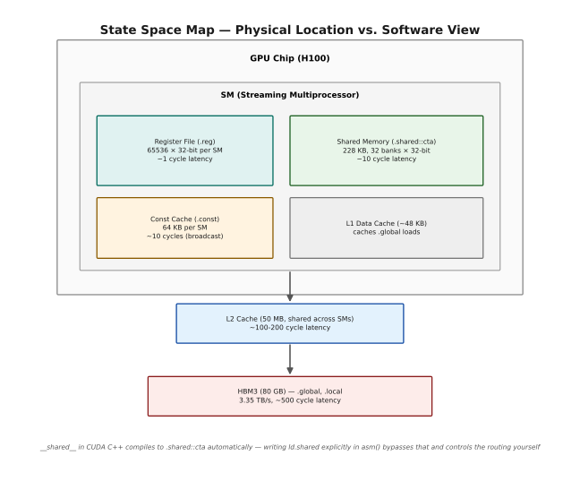
Each state space pins to one physical location. The register file and shared memory (228 KB, 32 banks) sit directly on the SM, reachable in roughly 1 and 10 cycles; the constant cache and L1 data cache sit alongside them at similar latency. Below the SM, a 50 MB L2 cache shared across all SMs costs ~100-200 cycles, and HBM3 — where .global and .local both physically live, at 3.35 TB/s bandwidth but ~500 cycle latency — is the floor. Writing __shared__ in CUDA C++ compiles to .shared::cta automatically; writing ld.shared explicitly in asm() bypasses that translation and lets you route accesses yourself.
7.2 Register State Space (.reg) — The Fastest Storage¶
Registers are the only storage that costs exactly 1 cycle to access. They live entirely within the SM's register file — a massive SRAM array that holds up to 65,536 × 32-bit registers per SM, divided among all the threads running on that SM.
The key limitation is quantity: each thread can use at most 255 registers. If your kernel tries to use more, the compiler "spills" extra values to local memory (which is slow — it goes to HBM). Always check your register count with nvcc --ptxas-options=-v.
Register Space — What You Need to Know
══════════════════════════════════════════════════════════════════════
H100 Register File Capacity:
65,536 registers × 32 bits = 256 KB per SM
With max 256 threads/block: 65536/256 = 256 registers per thread
But realistic limit: 128-160 registers (higher = less occupancy)
Occupancy vs Register Count:
┌────────────────────────────────────────────────────────────┐
│ Registers/thread │ Threads/SM │ Blocks/SM │ Occupancy │
│ ───────────────────────────────────────────────────────── │
│ 32 │ 2048 │ 8 │ 100% │
│ 64 │ 1024 │ 4 │ 50% │
│ 128 │ 512 │ 2 │ 25% │
│ 255 │ 256 │ 1 │ 12.5% │
└────────────────────────────────────────────────────────────┘
Lower occupancy → fewer threads to hide latency → slower kernel.
Checking register usage (VERY USEFUL for optimization):
nvcc -std=c++17 -arch=sm_90a --ptxas-options=-v mykernel.cu
Output:
ptxas info : Used 64 registers, 4096 bytes smem, 400 bytes cmem[0]
# └───────────────────────────────────────────────────────
# 64 registers per thread → 1024 threads/SM occupancy
Explicit .reg declarations (only needed for PTX temporaries):
.reg .u32 r1, r2; // two 32-bit unsigned int registers
.reg .f32 f<8>; // eight 32-bit float registers (f0 through f7)
.reg .pred p1, p2; // two 1-bit predicate registers
.reg .b128 v1; // one 128-bit register (4 × 32-bit slots)
7.3 Global State Space (.global) — Device Memory¶
Global memory is the main DRAM of the GPU — HBM3 on the H100. All threads in all blocks across the entire grid can access it. It's the largest but slowest memory space.
Global Memory — Key Properties and Usage Patterns
══════════════════════════════════════════════════════════════════════
Properties:
Capacity: 80 GB (H100 SXM5), 80 GB (H100 PCIe)
Bandwidth: 3.35 TB/s (H100 SXM5)
Latency: ~500 cycles (uncoalesced), ~200 cycles (L2 cached)
Scope: All threads in the grid (entire kernel launch)
Lifetime: Until cudaFree() or program exit
PTX Instructions:
─────────────────────────────────────────────────────────────────
ld.global.b32 r1, [addr]; // load 32 bits
ld.global.v4.f32 {r0,r1,r2,r3}, [addr]; // load 4 floats (128-bit)
st.global.b32 [addr], r1; // store 32 bits
atom.global.add.f32 r0, [addr], val; // atomic add
Cache behavior modifiers:
─────────────────────────────────────────────────────────────────
ld.global.ca → cache at L1 and L2 (default: all levels)
ld.global.cg → cache at L2 only (bypass L1)
ld.global.cs → cache streaming (evict soon, good for large strides)
ld.global.lu → last use (hint: won't be accessed again)
ld.global.cv → cache volatile (no caching, always from DRAM)
Memory coalescing — CRITICAL for performance:
─────────────────────────────────────────────────────────────────
GPU threads in a warp access global memory in 128-byte transactions.
If all 32 threads access consecutive 4-byte values:
32 × 4 = 128 bytes → ONE memory transaction → FAST
If threads access scattered addresses:
Each thread may need its own transaction → 32 transactions → 32× SLOW
Coalesced: Scattered (bank conflict equivalent):
Thread 0: addr+0 Thread 0: addr+0
Thread 1: addr+4 Thread 1: addr+128
Thread 2: addr+8 Thread 2: addr+256
... ...
1 transaction! 32 transactions!
PTX vectorized loads (coalescing helper):
ld.global.v2.f32 {%f0, %f1}, [%addr]; // load 2 floats atomically
ld.global.v4.f32 {%f0,%f1,%f2,%f3}, [%addr]; // load 4 floats = 128-bit
These maximize memory bandwidth by requesting wider chunks.
7.4 Shared State Space (.shared) — The GPU's Scratchpad¶
Shared memory is the programmer-controlled scratchpad that lives on each SM. It is fast (about 10 cycles, nearly as fast as L1 cache), and crucially it is under your direct control — unlike L1/L2 which are hardware-managed caches.
The key usage pattern is the "collaborative load": all threads in a block cooperatively load a tile from global memory into shared memory, then each thread reads multiple elements from shared memory (which is cheap) instead of directly from global memory (which is expensive).
Shared Memory — How It's Used and Why It Matters
══════════════════════════════════════════════════════════════════════
Properties:
Capacity: 228 KB per SM (H100); up to 227 KB per block, opt-in via
cudaFuncSetAttribute(kernel, cudaFuncAttributeMaxDynamicSharedMemorySize, size)
Latency: ~4-10 cycles (if no bank conflicts)
Scope: All threads in ONE block (or cluster with .shared::cluster)
Lifetime: Duration of the block's execution
The Classic "Tile and Compute" Pattern:
─────────────────────────────────────────────────────────────────
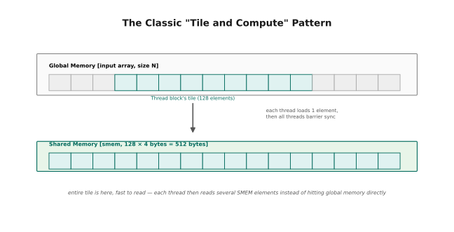
Step 1: all threads in the block cooperate to load the block's 128-element tile from global memory into shared memory, one element per thread. Step 2: a barrier sync ensures the whole tile has landed in SMEM before anyone reads it. Step 3: each thread now reads several elements back out of SMEM — thread 0 reads smem[0..3], thread 1 reads smem[4..7], and so on — at ~10-cycle SMEM latency instead of paying ~500 cycles per element straight from global memory.
PTX State Space Qualifiers for Shared Memory:
─────────────────────────────────────────────────────────────────
.shared::cta → this block's SMEM only (default, Hopper+)
.shared::cluster → any block's SMEM within the cluster (DSMEM)
.shared → alias for .shared::cta on older architectures
Example PTX:
ld.shared::cta.b32 r1, [smem_addr]; // load from this block's SMEM
ld.shared::cluster.b32 r1, [cluster_addr]; // load from cluster's DSMEM
st.shared.b32 [smem_addr], r1; // store to this block's SMEM
7.5 Other State Spaces — Local, Constant, Parameter¶
These three state spaces are used less frequently but are important to understand, especially for debugging performance issues.
Local, Constant, and Parameter State Spaces
══════════════════════════════════════════════════════════════════════
─── .local — Per-Thread Private Memory ─────────────────────────
What it is:
The "overflow" space for register spills. When your kernel uses
more registers than the hardware provides per thread, the compiler
saves the excess in .local memory.
Where it lives:
Physically in HBM3 (same as global memory), but the address
space is private per thread — no other thread can access it.
Performance:
~500 cycles latency, same as global memory. THIS IS BAD.
Spills to .local are a performance killer. Watch for them in:
nvcc --ptxas-options=-v → "spill stores: X bytes"
When you see this message:
ptxas info: Function properties for mykernel:
ptxas info: 88 bytes stack frame, 0 bytes spill stores, 0 bytes spill loads
# "spill stores/loads" > 0 → register pressure is too high!
# Solutions: reduce register count, split kernel, use -maxrregcount flag
─── .const — Constant Memory ────────────────────────────────────
What it is:
64 KB of read-only memory cached in a special constant cache.
Optimized for BROADCAST: when all threads in a warp read the
same address, it costs ~1 cycle (served from constant cache).
When to use:
├── Look-up tables (sine/cosine tables, quantization scales)
├── Model weights that are the same for all threads
├── Small configuration structs shared by all blocks
└── Anything read-only and accessed by all threads uniformly
CUDA C++ declaration:
__constant__ float lookup_table[1024]; // must be at file scope
// On host:
cudaMemcpyToSymbol(lookup_table, host_data, sizeof(float)*1024);
Warning: If different threads in a warp read DIFFERENT constant
addresses, accesses serialize (each address takes a separate cycle).
Constant memory is ONLY fast for broadcast patterns.
─── .param — Kernel Parameters ──────────────────────────────────
What it is:
The kernel arguments you pass in <<<grid, block>>>(arg1, arg2...).
These are copied to a special parameter buffer when the kernel
launches, accessible via ld.param.
In PTX:
.param .u64 param0; // kernel parameter declaration
ld.param.u64 %rd1, [param0]; // load the parameter
In practice:
The compiler handles this automatically. You never write
ld.param manually unless you're writing raw PTX kernels.
When you write `int* ptr` as a kernel argument, the compiler
inserts the ld.param at the start of your kernel.
★ Section 7 — Runnable Code: State Space Explorer¶
Manual Worked Example:
Let's trace a specific scenario: a kernel that loads a value from global memory into shared memory, adds a constant from constant memory, and stores back.
Data flow for thread 0:
1. ld.param.u64 → reads the global pointer from kernel args
2. ld.global.f32 → reads input[0] = 1.0f from HBM (500 cycles)
3. ld.const.f32 → reads scale_factor from constant cache (1 cycle if broadcast)
4. fma.rn.f32 → computes input * scale_factor + bias
5. st.global.f32 → writes result to output[0] in HBM (500 cycles, async)
The SMEM tier sits in between to amortize the global memory cost
when multiple threads need the same data.
═══════════════════════════════════════════════════════
FILE: ex03_state_spaces.cu
COMPILE: nvcc -std=c++17 -arch=sm_90a -O2 ex03_state_spaces.cu -o ex03_spaces
(Also works on sm_80, sm_86 — nothing Hopper-specific)
RUN: ./ex03_spaces
EXPECT: Each state space test shows PASS with the verified value
═══════════════════════════════════════════════════════
// ═══════════════════════════════════════════════════════════════════
// ex03_state_spaces.cu
//
// PURPOSE: Demonstrate all major CUDA/PTX state spaces with explicit
// PTX loads and stores for each. Each test shows one state space.
//
// LAYOUT:
// Test 1: .reg — Register values (trivial, shows constraint types)
// Test 2: .shared — Shared memory load/store via PTX
// Test 3: .global — Global memory load/store via explicit PTX addr
// Test 4: .const — Constant memory broadcast
// Test 5: .local — Forced register spill to local memory (diagnostic)
// Test 6: Combining all spaces in one kernel (realistic pattern)
//
// WORKS ON: sm_80+ (all examples, no Hopper-specific features)
// ═══════════════════════════════════════════════════════════════════
#include <cstdio>
#include <cstdint>
#include <cmath>
#define CHECK_CUDA(call) do { \
cudaError_t _err = (call); \
if (_err != cudaSuccess) { \
fprintf(stderr, "CUDA ERROR at %s:%d — %s\n", \
__FILE__, __LINE__, cudaGetErrorString(_err)); \
exit(1); \
} \
} while(0)
// ─── Constant memory declaration ─────────────────────────────────
// Must be at FILE SCOPE. The compiler places this in .const space.
// All threads see the same values, and if they all read the same
// address simultaneously, it's served in 1 cycle from const cache.
__constant__ float SCALE_FACTOR[4] = {2.0f, 3.0f, 4.0f, 5.0f};
// ═══════════════════════════════════════════════════════════════════
// TEST 2: Shared Memory — explicit PTX load and store
// ═══════════════════════════════════════════════════════════════════
//
// Shows:
// (a) How to get a shared memory address using __cvta_generic_to_shared
// (b) How to write to SMEM via asm volatile st.shared
// (c) How to read from SMEM via asm volatile ld.shared
// (d) How __syncthreads() maps to bar.sync 0 in PTX
//
// The "0" in "bar.sync 0" is the barrier ID.
// H100 supports barriers 0-15. Using 0 is the default.
__global__ void test_shared_space(float* output) {
// Each thread has its own shared memory slot
__shared__ float smem[256];
// ── Address calculation ─────────────────────────────────────
// __cvta_generic_to_shared strips the high bits from the C++ pointer,
// producing a 32-bit offset into shared memory.
//
// Why 32-bit? Because shared memory is only 228KB — fits easily
// in 32 bits (max value ~233,472 < 4,294,967,296).
// Global pointers are 64-bit because HBM is 80GB.
uint32_t smem_base = __cvta_generic_to_shared(smem);
// smem_base is the byte offset of smem[0] within shared memory.
// smem_base + threadIdx.x * 4 is the byte offset of smem[threadIdx.x].
uint32_t my_slot_addr = smem_base + threadIdx.x * sizeof(float);
// ── Write to SMEM via PTX store ─────────────────────────────
// Value = thread index × 2.0 + 0.5 (unique per thread)
float my_val = threadIdx.x * 2.0f + 0.5f;
asm volatile(
"st.shared.f32 [%0], %1;" // store float to shared memory
: // no outputs (store has side effects only)
: "r"(my_slot_addr), // %0 = address (32-bit for SMEM!)
"f"(my_val) // %1 = value to store
: "memory" // memory clobber: tells compiler memory changed
);
// ── Barrier — wait for all threads to finish storing ────────
// This maps to: bar.sync 0; in PTX
// Every thread must reach this point before any thread proceeds.
__syncthreads();
// ── Read from SMEM via PTX load ─────────────────────────────
// Each thread reads from the NEXT thread's slot (circular).
// Thread 0 reads smem[1], thread 1 reads smem[2], ..., last reads smem[0].
uint32_t neighbor = (threadIdx.x + 1) % blockDim.x;
uint32_t neighbor_addr = smem_base + neighbor * sizeof(float);
float neighbor_val;
asm volatile(
"ld.shared.f32 %0, [%1];" // load float from shared memory
: "=f"(neighbor_val) // %0 = destination (32-bit float register)
: "r"(neighbor_addr) // %1 = address (32-bit)
);
// Thread 0 writes its result to global memory
if (threadIdx.x == 0) {
// Thread 0 read from slot 1, which holds: 1 * 2.0 + 0.5 = 2.5
output[0] = neighbor_val;
}
}
// ═══════════════════════════════════════════════════════════════════
// TEST 3: Global Memory — explicit 64-bit address PTX
// ═══════════════════════════════════════════════════════════════════
//
// Shows how global memory uses 64-bit addresses ("l" constraint)
// and demonstrates vectorized loads (v4.f32 = 4 floats at once).
//
// Vectorized loads improve bandwidth utilization because:
// - One 128-bit transaction vs four 32-bit transactions
// - The memory system is more efficient with wider requests
// - Coalescing is achieved more easily with wider accesses
__global__ void test_global_space(float* input, float* output, int N) {
int idx = blockIdx.x * blockDim.x + threadIdx.x;
if (idx >= N) return;
// ── Standard scalar load via PTX ────────────────────────────
// Compute 64-bit byte address of input[idx]
uint64_t in_addr = reinterpret_cast<uint64_t>(input) + idx * sizeof(float);
// "l" constraint = 64-bit register (use for global pointers!)
float val;
asm volatile("ld.global.f32 %0, [%1];"
: "=f"(val)
: "l"(in_addr));
// ── Scale by 10 ─────────────────────────────────────────────
float result;
asm("mul.f32 %0, %1, %2;"
: "=f"(result)
: "f"(val), "f"(10.0f));
// ── Store result via PTX ────────────────────────────────────
uint64_t out_addr = reinterpret_cast<uint64_t>(output) + idx * sizeof(float);
asm volatile("st.global.f32 [%0], %1;"
:
: "l"(out_addr), "f"(result)
: "memory");
}
// ═══════════════════════════════════════════════════════════════════
// TEST 4: Constant Memory — broadcast read
// ═══════════════════════════════════════════════════════════════════
//
// All threads read from __constant__ SCALE_FACTOR[].
// When all threads in a warp read the SAME index, it's 1 cycle.
// When they read different indices, it serializes (~32 cycles).
//
// This test has all threads read SCALE_FACTOR[0] = 2.0f (broadcast).
__global__ void test_const_space(float* output) {
// In CUDA C++, reading __constant__ data looks like a normal array access.
// Under the hood, the compiler emits ld.const.f32.
// We can also read it explicitly via PTX:
float scale;
asm("ld.const.f32 %0, [SCALE_FACTOR];" // load SCALE_FACTOR[0]
: "=f"(scale)
);
// Note: PTX constant memory uses the SYMBOL NAME directly.
// SCALE_FACTOR[1] would be: [SCALE_FACTOR + 4] (byte offset)
// Alternatively (using C++ directly, same PTX is generated):
float scale_cpp = SCALE_FACTOR[0];
if (threadIdx.x == 0) {
output[0] = scale; // from PTX ld.const
output[1] = scale_cpp; // from C++ access (same result)
}
}
// ═══════════════════════════════════════════════════════════════════
// TEST 6: Combined Kernel — Realistic Usage of All State Spaces
// ═══════════════════════════════════════════════════════════════════
//
// This is what a real GPU kernel looks like. It uses:
// .global → input data loading (expensive, done once per block)
// .shared → tile storage (cheap, accessed many times)
// .const → read-only parameters (broadcast, cheap)
// .reg → intermediate computation (free)
// .global → output writing
//
// Pattern: Load tile from global → store in SMEM → compute using
// constant scale → write results back to global.
//
// This is the fundamental template for virtually every high-performance
// GPU kernel: global→SMEM tiling reduces global memory accesses.
__global__ void test_combined(float* input, float* output, int N) {
// ── SMEM allocation ─────────────────────────────────────────
// Each block allocates a tile of 128 floats in shared memory.
// All threads in the block cooperatively load this tile.
__shared__ float tile[128];
int block_start = blockIdx.x * 128; // first element this block handles
int tid = threadIdx.x;
// ── Collaborative global→SMEM load ──────────────────────────
// Each thread loads ONE element from global into SMEM.
// Together, all blockDim.x threads fill the entire tile.
if (block_start + tid < N) {
uint64_t g_addr = reinterpret_cast<uint64_t>(input + block_start + tid);
float val;
asm volatile("ld.global.f32 %0, [%1];"
: "=f"(val) : "l"(g_addr));
uint32_t smem_addr = __cvta_generic_to_shared(tile) + tid * sizeof(float);
asm volatile("st.shared.f32 [%0], %1;"
: : "r"(smem_addr), "f"(val) : "memory");
}
// ── Synchronize ─────────────────────────────────────────────
// All threads must finish storing before any thread reads SMEM.
__syncthreads();
// ── Compute using SMEM + constant memory ────────────────────
// Now each thread reads from SMEM (cheap) and applies a scale
// from constant memory (also cheap, broadcast).
if (block_start + tid < N) {
// Read from SMEM (cheap, ~10 cycles)
uint32_t smem_addr = __cvta_generic_to_shared(tile) + tid * sizeof(float);
float smem_val;
asm volatile("ld.shared.f32 %0, [%1];"
: "=f"(smem_val) : "r"(smem_addr));
// Read scale from constant memory (broadcast, ~1 cycle)
float scale = SCALE_FACTOR[0]; // C++ reads __constant__ as ld.const
// Compute: result = smem_val * scale
float result;
asm("mul.f32 %0, %1, %2;" : "=f"(result) : "f"(smem_val), "f"(scale));
// Write to global memory (expensive, but only once per element)
uint64_t out_addr = reinterpret_cast<uint64_t>(output + block_start + tid);
asm volatile("st.global.f32 [%0], %1;"
: : "l"(out_addr), "f"(result) : "memory");
}
}
// ═══════════════════════════════════════════════════════════════════
// MAIN
// ═══════════════════════════════════════════════════════════════════
int main() {
printf("╔══════════════════════════════════════════════════════╗\n");
printf("║ PTX State Spaces — Test Suite ║\n");
printf("╚══════════════════════════════════════════════════════╝\n\n");
int tests = 0, passed = 0;
// ─── Test 2: Shared memory ─────────────────────────────────
printf("Test 2: .shared — Thread 0 reads thread 1's slot (expected 2.5)\n");
{
float *d_out, h_out;
CHECK_CUDA(cudaMalloc(&d_out, sizeof(float)));
test_shared_space<<<1, 64>>>(d_out);
CHECK_CUDA(cudaDeviceSynchronize());
CHECK_CUDA(cudaMemcpy(&h_out, d_out, sizeof(float), cudaMemcpyDeviceToHost));
// Thread 1's value = 1 * 2.0 + 0.5 = 2.5
tests++;
if (fabsf(h_out - 2.5f) < 1e-5f) {
passed++; printf(" ✓ PASS: thread 0 read %.1f from thread 1's slot\n", h_out);
} else printf(" ✗ FAIL: got %.4f, expected 2.5\n", h_out);
CHECK_CUDA(cudaFree(d_out));
}
// ─── Test 3: Global memory ─────────────────────────────────
printf("\nTest 3: .global — Multiply by 10 via explicit PTX\n");
{
const int N = 8;
float h_in[N] = {1.0f, 2.0f, 3.0f, 4.0f, 5.0f, 6.0f, 7.0f, 8.0f};
float h_out[N] = {};
float *d_in, *d_out;
CHECK_CUDA(cudaMalloc(&d_in, N * sizeof(float)));
CHECK_CUDA(cudaMalloc(&d_out, N * sizeof(float)));
CHECK_CUDA(cudaMemcpy(d_in, h_in, N * sizeof(float), cudaMemcpyHostToDevice));
test_global_space<<<1, N>>>(d_in, d_out, N);
CHECK_CUDA(cudaDeviceSynchronize());
CHECK_CUDA(cudaMemcpy(h_out, d_out, N * sizeof(float), cudaMemcpyDeviceToHost));
bool ok = true;
for (int i = 0; i < N; i++) {
if (fabsf(h_out[i] - h_in[i] * 10.0f) > 1e-4f) {
printf(" ✗ FAIL at [%d]: got %.1f, expected %.1f\n",
i, h_out[i], h_in[i] * 10.0f);
ok = false;
}
}
tests++;
if (ok) { passed++; printf(" ✓ PASS: all 8 values multiplied by 10 correctly\n"); }
CHECK_CUDA(cudaFree(d_in)); CHECK_CUDA(cudaFree(d_out));
}
// ─── Test 4: Constant memory ───────────────────────────────
printf("\nTest 4: .const — Read SCALE_FACTOR[0] = 2.0 via PTX and C++\n");
{
float *d_out, h_out[2];
CHECK_CUDA(cudaMalloc(&d_out, 2 * sizeof(float)));
test_const_space<<<1, 32>>>(d_out);
CHECK_CUDA(cudaDeviceSynchronize());
CHECK_CUDA(cudaMemcpy(h_out, d_out, 2 * sizeof(float), cudaMemcpyDeviceToHost));
tests++;
if (fabsf(h_out[0] - 2.0f) < 1e-5f && fabsf(h_out[1] - 2.0f) < 1e-5f) {
passed++;
printf(" ✓ PASS: PTX read = %.1f, C++ read = %.1f (both = 2.0)\n",
h_out[0], h_out[1]);
} else {
printf(" ✗ FAIL: PTX=%.4f, C++=%.4f, expected both 2.0\n",
h_out[0], h_out[1]);
}
CHECK_CUDA(cudaFree(d_out));
}
// ─── Test 6: Combined kernel ────────────────────────────────
printf("\nTest 6: Combined — global→SMEM→compute with SCALE_FACTOR[0]=2.0\n");
{
const int N = 128;
float h_in[N], h_out[N], h_expected[N];
for (int i = 0; i < N; i++) { h_in[i] = (float)i; h_expected[i] = i * 2.0f; }
float *d_in, *d_out;
CHECK_CUDA(cudaMalloc(&d_in, N * sizeof(float)));
CHECK_CUDA(cudaMalloc(&d_out, N * sizeof(float)));
CHECK_CUDA(cudaMemcpy(d_in, h_in, N * sizeof(float), cudaMemcpyHostToDevice));
test_combined<<<1, N>>>(d_in, d_out, N);
CHECK_CUDA(cudaDeviceSynchronize());
CHECK_CUDA(cudaMemcpy(h_out, d_out, N * sizeof(float), cudaMemcpyDeviceToHost));
bool ok = true;
for (int i = 0; i < N; i++) {
if (fabsf(h_out[i] - h_expected[i]) > 1e-4f) { ok = false; break; }
}
tests++;
if (ok) {
passed++;
printf(" ✓ PASS: 128 elements scaled by 2.0 (sample: in=%.0f out=%.0f)\n",
h_in[5], h_out[5]);
} else printf(" ✗ FAIL\n");
CHECK_CUDA(cudaFree(d_in)); CHECK_CUDA(cudaFree(d_out));
}
printf("\n╔══════════════════════════════════════════════════════╗\n");
printf("║ Results: %d/%d tests passed ║\n", passed, tests);
printf("╚══════════════════════════════════════════════════════╝\n");
return (passed == tests) ? 0 : 1;
}
Sample Output:
╔══════════════════════════════════════════════════════╗
║ PTX State Spaces — Test Suite ║
╚══════════════════════════════════════════════════════╝
Test 2: .shared — Thread 0 reads thread 1's slot (expected 2.5)
✓ PASS: thread 0 read 2.5 from thread 1's slot
Test 3: .global — Multiply by 10 via explicit PTX
✓ PASS: all 8 values multiplied by 10 correctly
Test 4: .const — Read SCALE_FACTOR[0] = 2.0 via PTX and C++
✓ PASS: PTX read = 2.0, C++ read = 2.0 (both = 2.0)
Test 6: Combined — global→SMEM→compute with SCALE_FACTOR[0]=2.0
✓ PASS: 128 elements scaled by 2.0 (sample: in=5 out=10)
╔══════════════════════════════════════════════════════╗
║ Results: 4/4 tests passed ║
╚══════════════════════════════════════════════════════╝
Tests are numbered 2, 3, 4 and 6 rather than 1–4 because they follow the file's own "Test N: .state_space" numbering scheme from the comment headers above (Test 1 is .reg, shown only as a comment since register values need no device round-trip to verify, and Test 5, .local, is a diagnostic spill case covered in prose rather than as a counted pass/fail check).
8 — Data Types in PTX¶
PTX is strongly typed, and it wears its types on the outside: every instruction
names the type it operates on as a suffix — add.u32, mul.f16x2, ld.global.b64.
The underlying registers, though, are just 32 bits of storage. The suffix is not a description of what's in the register; it is an instruction to the hardware about how to interpret those bits for this one operation. Getting comfortable with that distinction is most of what this section is for.
8.1 Fundamental Types — The Type System¶
PTX is a strongly typed assembly language. Every instruction specifies the type it operates on as a suffix (e.g., .u32, .f32, .b32). This is different from x86 assembly, where the register name implies the size but not the type interpretation.
The key insight: PTX registers are all 32-bit (or register pairs for 64-bit), but the INTERPRETATION changes based on the type modifier. The bits 0x3F800000 are 1.0f if interpreted as .f32, but are 1,065,353,216 if interpreted as .u32.
PTX Type System — Categories and Interpretations
══════════════════════════════════════════════════════════════════════
Category Modifier Bits Interpretation C++ Equivalent
────────────────────────────────────────────────────────────────
Unsigned .u8 8 0 to 255 uint8_t
.u16 16 0 to 65535 uint16_t
.u32 32 0 to 4,294,967,295 uint32_t
.u64 64 0 to 2^64-1 uint64_t
Signed .s8 8 -128 to 127 int8_t
.s16 16 -32768 to 32767 int16_t
.s32 32 -2^31 to 2^31-1 int32_t
.s64 64 -2^63 to 2^63-1 int64_t
Float .f16 16 IEEE 754 half __half
.bf16 16 BF16 (bfloat16) __nv_bfloat16
.f32 32 IEEE 754 single float
.f64 64 IEEE 754 double double
Bit pattern .b8 8 Raw bits, no arith (bitcast)
.b16 16 Raw bits (bitcast)
.b32 32 Raw bits (bitcast)
.b64 64 Raw bits (bitcast)
.b128 128 Raw bits (4 regs) (bitcast)
Predicate .pred 1 Boolean bool (1-bit)
IMPORTANT: .b types have NO arithmetic instructions (no add.b32).
They are ONLY used for:
├── Moving data without reinterpreting (mov.b32)
├── Loads and stores (ld.b32, st.b32)
├── Packing/unpacking values (prmt.b32)
└── Raw bit operations
Type determines INSTRUCTION set, not register allocation:
.f32 → uses floating-point execution units
.u32 → uses integer execution units
.b32 → uses the move/memory units (no arithmetic)
─── Why .b128 matters ───────────────────────────────────────────
b128 (128-bit) operations load/store 16 bytes at once.
This is the width of a full WGMMA accumulator fragment.
ld.global.b128 [addr] → moves 16 bytes in one operation
Needs 4 × 32-bit registers (a "quadruple" register).
─── Manual Worked Example: Type Reinterpretation ────────────────
Same bit pattern, different types:
Bits: 0x40490FDB
As .f32: 3.14159265... (pi!)
As .u32: 1,078,530,011 (decimal)
As .s32: 1,078,530,011 (same, because high bit is 0)
As .b32: 0x40490FDB (just the bits, no interpretation)
How to reinterpret (bitcast) WITHOUT value conversion:
mov.b32 target, source; // same bits, but changes type label
mov.u32 bits, fp_val; // float bits → uint32 (no truncation!)
How to CONVERT (changes the value):
cvt.rn.f32.u32 f, u; // integer 5 → float 5.0f (value preserved)
cvt.rtu.u32.f32 u, f; // float 5.7 → int 5 (truncated)
9 — Deep Learning Data Types¶
This section is less about syntax and more about numerics — why machine learning abandoned FP32 and what it got in exchange.
Three questions get answered: what the formats actually look like bit by bit (§9.1), why BF16 beat FP16 for training despite being strictly less precise (§9.2), and how FP8 can possibly work when its maximum representable value is 448 (§9.3). The answer to the second is range, and the answer to the third is scaling — but the details are worth reading, because they explain design decisions you'll meet again in Chapter 7.
9.1 Format Comparison — The Full Picture¶
Modern deep learning training and inference use a variety of reduced-precision formats to maximize throughput while maintaining accuracy. The H100 supports FP8, FP16, BF16, TF32, and FP32 natively. Understanding the bit layout and tradeoffs is essential for writing efficient kernels.
The progression from FP32 → BF16 → FP8 trades precision for speed: - FP32: 1 FLOP/cycle on CUDA cores - BF16: 2× throughput on CUDA cores, 16× on Tensor Cores vs FP32 - FP8: 32× on Tensor Cores vs FP32 (E4M3 or E5M2)
Deep Learning Float Formats — Complete Bit Layout and Tradeoffs
══════════════════════════════════════════════════════════════════════
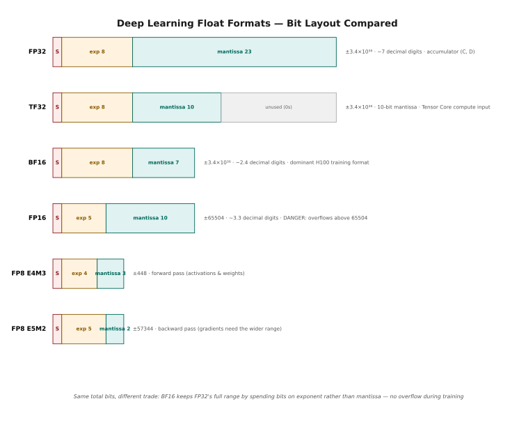
FP32 spends 8 exponent bits and 23 mantissa bits for ±3.4×10^38 range at ~7 decimal digits of precision; it is the Tensor Core's accumulator format (C, D matrices). FP16 narrows to a 5-bit exponent and 10-bit mantissa — more precision than BF16, but it overflows to Inf above 65504, a real risk for training gradients. BF16 keeps FP32's full 8-bit exponent (so it shares FP32's range and never overflows during training) but drops to only 7 mantissa bits, trading precision for safety; it's the dominant input format (A, B matrices) for H100 training. TF32 is stored in the same 32 bits as FP32 but computes with only a ≥10-bit mantissa, applied transparently when Tensor Core ops request TF32 mode. The two FP8 formats split 8 bits between sign, exponent, and mantissa in opposite ways: E4M3 (4-bit exponent, 3-bit mantissa, range ±448) favors precision for the bounded forward pass, while E5M2 (5-bit exponent, 2-bit mantissa, range ±57344) favors range for the wide-swinging backward pass.
Comparison Summary:
────────────────────────────────────────────────────────────────
Format Bits Exponent Mantissa Max Value Training Use
FP32 32 8-bit 23-bit 3.4e38 Reference, accumulators
TF32 32 8-bit 10-bit 3.4e38 Tensor Core compute
BF16 16 8-bit 7-bit 3.4e38 Forward + backward ★
FP16 16 5-bit 10-bit 65504 Careful use (overflow risk)
FP8 E4M3 8 4-bit 3-bit 448 Forward (activations)
FP8 E5M2 8 5-bit 2-bit 57344 Backward (gradients)
9.2 Why BF16 Dominates Training — The Range Argument¶
This section explains one of the most common questions students ask: "Why do we use BF16 instead of FP16 for training? FP16 has more precision bits!"
The answer lies in the RANGE of values that appear during neural network training. Gradients, particularly in early layers and during certain phases of training, can be very large in magnitude. FP16's maximum representable value is only 65,504. Many common operations produce values far larger than this.
BF16 vs FP16 — Why Range Beats Precision in Training
══════════════════════════════════════════════════════════════════════
FP16 dynamic range: ±65,504
BF16 dynamic range: ±3.4 × 10^38 (same as FP32!)
─── Concrete Training Failure Example ───────────────────────────
Layer normalization layer, batch size 256, sequence length 2048:
Running variance sum: 256 × 2048 × (some values) can be ~100,000+
In FP16: 100,000 → Inf! (overflow at 65,504)
In BF16: 100,000 → 98,304 (rounds to nearest, no overflow)
Loss scaling with FP16:
Without loss scaling: gradients underflow to zero
With loss scaling (×128, ×1024, ×65536): now FORWARD PASS overflows!
FP16 requires constant tuning of loss scale factor.
BF16 training:
No loss scaling needed. Gradients fit in range.
Training is stable "out of the box."
PyTorch default since 2023: model.bfloat16()
─── Precision Tradeoff ──────────────────────────────────────────
FP16 mantissa: 10 bits → can represent 1024 different fractions
BF16 mantissa: 7 bits → can represent 128 different fractions
Does this matter for training?
YES for: fine-grained weight updates in Adam optimizer
NO for: most operations (neural nets are robust to 7-bit precision)
VERDICT: The range advantage of BF16 far outweighs the precision loss.
Empirical finding: BF16 training matches FP32 quality on most tasks.
FP16 training requires loss scaling and careful monitoring.
─── In Code: Setting Up BF16 in PyTorch and CUDA ────────────────
PyTorch:
model = model.bfloat16()
optimizer = torch.optim.Adam(model.parameters())
# No loss scaling needed!
CUDA kernel expecting BF16 input:
__global__ void my_kernel(__nv_bfloat16* input, ...) {
// BF16 is stored as uint16_t internally
// For arithmetic, convert to float first:
float val = __bfloat162float(input[idx]);
// ... compute ...
input[idx] = __float2bfloat16(result);
}
9.3 The Transformer Engine's FP8 Strategy¶
FP8 is the next frontier, enabled by H100's Transformer Engine hardware. It's roughly 2× faster than BF16 for matrix operations, but requires careful handling because of the limited range.
FP8 Training Strategy — Automatic Scaling
══════════════════════════════════════════════════════════════════════
The fundamental challenge with FP8:
─────────────────────────────────────────────────────────────────
FP8 E4M3 max value: 448
FP8 E5M2 max value: 57,344
Both are MUCH smaller than typical activation/gradient ranges.
Example: An attention score before softmax might be ~800.
FP8 E4M3 can only represent up to 448 → OVERFLOW!
Solution: Per-tensor scaling
─────────────────────────────────────────────────────────────────
Before quantizing to FP8:
1. Find the MAX absolute value in the tensor: max_val = max(|X|)
2. Compute scale factor: scale = max_val / 448.0 (for E4M3)
3. Scale the tensor: X_scaled = X / scale
4. Now X_scaled fits in [-448, 448] → safe to quantize to FP8
Before dequantizing from FP8:
1. Multiply by scale: X_reconstructed = X_fp8 * scale
The H100 Transformer Engine automates this:
├── Hardware monitors per-tensor statistics each step
├── Computes optimal scales automatically
├── Applies scaling transparently in the fused kernel
└── No manual loss scaling or intervention needed
─── Forward vs Backward Pass Format Selection ────────────────────
Forward pass → use E4M3 (more mantissa bits = better precision):
Activations: [0.1, 0.5, 0.2, 0.8, ...] → bounded, use E4M3
Weights: [0.02, -0.03, 0.15, ...] → small, use E4M3
Backward pass → use E5M2 (more exponent bits = wider range):
Gradients: [0.0001, 100.0, 0.05, ...] → wide range, use E5M2
The gradient values span many orders of magnitude.
E5M2's wider range handles this better despite less precision.
─── PTX Instructions for FP8 ────────────────────────────────────
// FP32 → FP8 E4M3 conversion:
asm("cvt.rn.satfinite.e4m3x2.f32 %0, %1, %2;"
: "=r"(packed_fp8) // two E4M3 values packed in 16 bits
: "f"(val_lo), "f"(val_hi)
);
// FP8 E4M3 → FP32:
// No direct instruction; use C++ __nv_fp8_e4m3 → float cast
__nv_fp8_e4m3 fp8_val = ...;
float fp32_val = (float)fp8_val;
10 — Packed Data Types¶
A GPU register is 32 bits wide. An FP16 value is 16. Rather than waste half of every register, the hardware packs two FP16 values into one register — or four FP8 values — and provides instructions that operate on both halves at once.
This is not merely an optimisation you can skip. Tensor cores require packed
operands: hand wgmma unpacked data and it will read the bits anyway and give
you nonsense. Chapters 6 and 7 assume you have this section internalised.
10.1 Packing Multiple Values in One Register¶
GPU registers are 32 bits wide. For 16-bit types like FP16 and BF16, this means we can pack two values into a single register and operate on both simultaneously. This is SIMD (Single Instruction, Multiple Data) within a register — one instruction does the work of two.
The tensor cores REQUIRE packed data. When you feed FP16 data to a WGMMA instruction, it reads .f16x2 format — two FP16 values packed in one 32-bit register. If your data isn't packed, the compiler adds packing instructions, wasting cycles. Understanding packing lets you arrange your data to minimize this overhead.
Packed Types — Memory Layout and Operations
══════════════════════════════════════════════════════════════════════
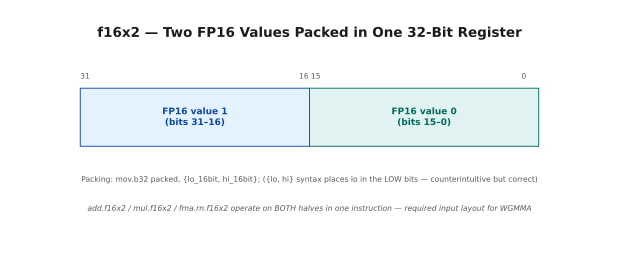
A .f16x2 value occupies one 32-bit register split into two 16-bit halves: FP16 value 0 (its own sign, exponent, and mantissa bits) in bits 15-0, FP16 value 1 in bits 31-16. The low-half/high-half packing order matters when you build or read back a packed register by hand.
Concrete example: Pack 1.0f and 2.0f into one .f16x2:
FP16(1.0f) = 0x3C00 (sign=0, exp=15, mant=0)
FP16(2.0f) = 0x4000 (sign=0, exp=16, mant=0)
Packed: = 0x40003C00 (2.0 in bits 31-16, 1.0 in bits 15-0)
PTX packing instruction:
mov.b32 packed, {lo_16bit, hi_16bit};
// {lo, hi} syntax places lo in low bits, hi in high bits.
// Counterintuitive but correct!
PTX unpacking instruction:
mov.b32 {lo_16bit, hi_16bit}, packed;
─── All Packed Types ────────────────────────────────────────────
Type Bits Elements Register Description
─────────────────────────────────────────────────────────────────
.f16x2 32 2×FP16 .b32/.r Two half-floats (WGMMA input)
.bf16x2 32 2×BF16 .b32/.r Two bfloats (WGMMA input)
.e4m3x2 16 2×FP8 .b16/.h Two FP8 E4M3 values
.e5m2x2 16 2×FP8 .b16/.h Two FP8 E5M2 values
.u16x2 32 2×uint16 .b32/.r Two unsigned 16-bit ints
.s16x2 32 2×int16 .b32/.r Two signed 16-bit ints
.b128 128 4×32-bit 4 regs Raw 128-bit (WGMMA output)
─── WGMMA Register Layout ───────────────────────────────────────
For wgmma.mma_async with M64N128K16 FP16:
A matrix: 64 × .f16x2 registers per warp group thread
B matrix: 32 × .f16x2 registers per warp group thread
C/D matrix: 64 × .f32 registers per warp group thread
Your data must be in .f16x2 format before calling WGMMA!
This is why all CUTLASS loading code involves packing.
─── SIMD Operations on Packed Types ─────────────────────────────
add.f16x2 result, a, b; // adds BOTH pairs simultaneously!
mul.f16x2 result, a, b; // multiplies BOTH pairs
fma.rn.f16x2 result, a, b, c; // FMA on BOTH pairs
// These are "SIMD-within-a-register" instructions.
// ONE instruction handles TWO independent FP16 operations.
// Effectively doubles throughput vs scalar FP16.
Manual Worked Example for Packing:
Goal: Add [1.5f + 3.0f] and [2.5f + 4.0f] using packed FP16.
Step 1: Convert to FP16
FP16(1.5f) = 0x3E00
FP16(2.5f) = 0x4100
FP16(3.0f) = 0x4200
FP16(4.0f) = 0x4400
Step 2: Pack into .f16x2
A_packed = {0x3E00, 0x4100} = 0x41003E00 (val_0=1.5, val_1=2.5)
B_packed = {0x4200, 0x4400} = 0x44004200 (val_0=3.0, val_1=4.0)
Step 3: add.f16x2
R_packed = A_packed + B_packed, element-wise:
low: FP16(1.5) + FP16(3.0) = FP16(4.5) = 0x4480
high: FP16(2.5) + FP16(4.0) = FP16(6.5) = 0x4680
R_packed = 0x46804480
Step 4: Unpack
val_0 = 0x4480 = FP16(4.5) ✓
val_1 = 0x4680 = FP16(6.5) ✓
11 — Memory Addresses & Byte Addressing¶
A short but load-bearing section. In C++, ptr + 1 moves forward by
sizeof(*ptr) bytes and the compiler does the arithmetic for you. In PTX there
is no such courtesy: addresses are raw byte counts and every offset you compute
must be scaled by hand.
Almost every "why is my inline PTX reading garbage" bug traces back to a missing multiply by the element size.
11.1 The Address Model — Everything Is Bytes¶
Both CPU and GPU use byte addressing. The "address" of a value is always the distance in bytes from the start of the addressable space. When you write ptr + 1 in C++, the actual byte offset depends on the pointer's type — the compiler multiplies by sizeof(*ptr) automatically.
In PTX, you always work with raw byte offsets. There is no automatic scaling. This is important when computing addresses manually in inline PTX.
Byte Addressing — How GPU Memory Works
══════════════════════════════════════════════════════════════════════
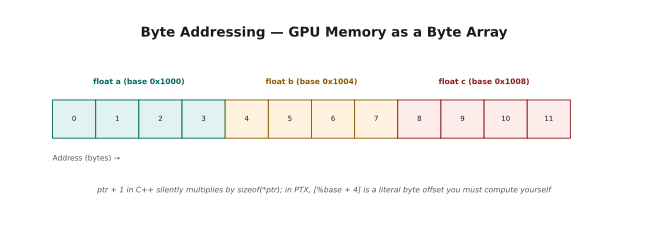
GPU memory is just a flat array of bytes, addressed 0, 1, 2, 3, .... A float is 4 bytes wide, so array[0], array[1], array[2] land at byte offsets 0, 4, and 8 — the element index times sizeof(float). C++ hides this: ptr + 1 silently multiplies by the pointee's size. PTX does not — every address computation in inline asm() is a raw byte offset you compute yourself.
float array at base address 0x1000:
float a = array[0] → at address 0x1000 (byte 0)
float b = array[1] → at address 0x1004 (byte 4 = 1 × sizeof(float))
float c = array[2] → at address 0x1008 (byte 8 = 2 × sizeof(float))
In C++:
float* ptr = array;
ptr + 1 → address 0x1004 (compiler multiplies by sizeof(float) = 4)
In PTX (manual byte arithmetic):
ld.global.f32 %f0, [%base]; // load array[0] from address %base
ld.global.f32 %f1, [%base + 4]; // load array[1] (+4 bytes)
ld.global.f32 %f2, [%base + 8]; // load array[2] (+8 bytes)
// PTX bracket notation: [addr + literal_byte_offset]
─── Type Sizes You Must Know ─────────────────────────────────────
Type sizeof() Alignment (byte boundary)
────────────────────────────────────────────────────────────────
int8_t / uint8_t 1 1-byte aligned
int16_t / uint16_t 2 2-byte aligned
int32_t / uint32_t 4 4-byte aligned
float 4 4-byte aligned
int64_t / uint64_t 8 8-byte aligned
double 8 8-byte aligned
__half (FP16) 2 2-byte aligned
__nv_bfloat16 2 2-byte aligned
float2 8 8-byte aligned
float4 16 16-byte aligned ← use for coalesced loads!
─── Computing Element Addresses ─────────────────────────────────
// In C++:
float* arr = ...;
int idx = threadIdx.x + blockIdx.x * blockDim.x;
float val = arr[idx]; // compiler → load from arr + idx*4
// Equivalent in PTX (manually):
uint64_t base_addr = reinterpret_cast<uint64_t>(arr);
uint64_t elem_addr = base_addr + (uint64_t)idx * sizeof(float);
// ↑ must multiply manually!
float val;
asm("ld.global.f32 %0, [%1];" : "=f"(val) : "l"(elem_addr));
─── Alignment Requirements ──────────────────────────────────────
GPU hardware requires aligned access for vectorized loads.
If you try to ld.global.v4.f32 from a non-16-byte-aligned address:
→ Hardware exception / undefined behavior
Always ensure:
Allocations via cudaMalloc are 256-byte aligned (always safe).
Manual offset arithmetic must preserve the required alignment.
float4 loads need 16-byte alignment: (byte_addr % 16 == 0)
12 — Shared Memory Banks — Programming Perspective¶
Chapter 1 introduced bank conflicts from the hardware's side. This section is the programmer's side: the formula for working out which bank an address lands in (§12.1), and the two standard ways to escape a conflict once you've found one (§12.2).
The two fixes are padding — trivially simple, wastes memory, and interferes with TMA's alignment requirements — and swizzling, which costs nothing at runtime but requires you to think in XOR. Both are shown side by side so you can see why production kernels almost always choose the second.
12.1 Bank Assignment Formula — The Math¶
Shared memory is physically organized into 32 banks, each 4 bytes wide. Banks allow 32 threads (one warp) to access 32 different addresses simultaneously — one per bank — with no conflicts. Understanding bank assignment is essential for writing SMEM layouts that avoid the 2× to 32× slowdowns caused by bank conflicts.
The formula is simple:
The "4" is the bank width (4 bytes per bank slot). The "32" is the number of banks. Every 128 bytes (32 banks × 4 bytes), the pattern repeats.
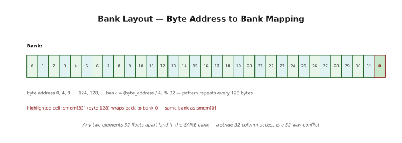
Byte addresses 0, 4, 8, ... 124 map one-to-one onto banks 0 through 31; at byte 128 — one past the 32nd bank — the mapping wraps back to bank 0, so smem[32] lands in the same bank as smem[0].
4-byte "word" at byte offset B: word_index = B / 4
Bank of that word: bank = word_index % 32
Example: shared memory array float smem[64]
─────────────────────────────────────────────────────────────────
smem[0]: byte addr 0 → bank (0/4)%32 = 0
smem[1]: byte addr 4 → bank (4/4)%32 = 1
smem[2]: byte addr 8 → bank (8/4)%32 = 2
...
smem[31]: byte addr 124 → bank (124/4)%32 = 31
smem[32]: byte addr 128 → bank (128/4)%32 = 0 ← same as smem[0]!
smem[33]: byte addr 132 → bank 1
...
smem[63]: byte addr 252 → bank (252/4)%32 = 31
Key observation:
Any two elements that are 32 floats apart map to THE SAME BANK.
smem[0] and smem[32]: both bank 0
smem[1] and smem[33]: both bank 1
→ accessing one column of a 32×32 float matrix → 32-way conflict!
─── Conflict Detection Rules ────────────────────────────────────
For a warp of 32 threads making 32 SMEM accesses:
RULE 1 — No conflict (fastest):
Each thread accesses a different bank.
32 accesses, 32 banks, all different → 1 cycle.
RULE 2 — Broadcast (fast):
Multiple threads access the SAME byte address.
Hardware broadcasts: 1 cycle.
(Not the same as multiple threads in the same bank with different addrs!)
RULE 3 — N-way conflict (slow):
N threads access different addresses in the same bank.
Hardware serializes: N cycles.
─── Common Stride Patterns ──────────────────────────────────────
float smem[1024];
Stride 1 (adjacent): thread i reads smem[i]
Banks: 0,1,2,...,31 → all different → NO CONFLICT ✓
Stride 32 (row width = 32 floats): thread i reads smem[i * 32]
smem[0]=bank 0, smem[32]=bank 0, smem[64]=bank 0... → 32-WAY CONFLICT ✗
Stride 16: thread i reads smem[i * 16]
smem[0]=bank 0, smem[16]=bank 16, smem[32]=bank 0... → 2-WAY CONFLICT
(16 pairs of threads hit the same bank → 2 cycles)
Stride 33 (with padding): thread i reads smem[i * 33]
smem[0]=bank 0, smem[33]=bank 1, smem[66]=bank 2... → NO CONFLICT ✓
(Adding 1 element of padding per row breaks the alignment!)
12.2 Bank Conflict Fix — Swizzling vs Padding¶
There are two standard techniques for eliminating bank conflicts. Padding is simpler but wastes memory. Swizzling is more complex but wastes no memory.
Fixing Bank Conflicts — Padding and Swizzling
══════════════════════════════════════════════════════════════════════
Scenario: 32×32 float matrix in SMEM, access column-major
(thread i reads smem[row][i] for varying row → stride 32 → conflict)
─── Technique 1: Padding ────────────────────────────────────────
Allocate extra elements to shift rows off of aligned boundaries.
Without padding:
__shared__ float smem[32][32]; // row length = 32 floats = 128 bytes
smem[r][c] at byte offset: r*128 + c*4
smem[0][0] → bank 0
smem[1][0] → bank (128/4)%32 = bank 0 ← CONFLICT!
With padding (+1 per row):
__shared__ float smem[32][33]; // row length = 33 floats = 132 bytes
smem[r][c] at byte offset: r*132 + c*4
smem[0][0] → bank (0/4)%32 = 0
smem[1][0] → bank (132/4)%32 = 33%32 = 1 ← DIFFERENT BANK! ✓
smem[2][0] → bank (264/4)%32 = 66%32 = 2 ← DIFFERENT BANK! ✓
smem[31][0]→ bank (4092/4)%32 = 1023%32 = 31 ← ALL DIFFERENT! ✓
Cost: 32 extra floats = 128 bytes wasted (negligible for 228KB SMEM)
─── Technique 2: Swizzling ──────────────────────────────────────
Reorder elements within each row using XOR so the physical layout
distributes columns across all 32 banks.
Swizzled index formula:
physical_col = logical_col XOR (row % 32)
Manual trace for 32×32 matrix:
Row 0: physical_col = logical_col XOR 0 → identity (no change)
smem[0][col=0] → bank 0, smem[0][col=1] → bank 1, ... ✓
Row 1: physical_col = logical_col XOR 1 → shifted by 1
smem[1][col=0] → physical smem[1][0 XOR 1 = 1] → bank 1
smem[1][col=1] → physical smem[1][1 XOR 1 = 0] → bank 0
Column 0 access (different rows):
Row 0: physical col = 0 XOR 0 = 0 → bank 0
Row 1: physical col = 0 XOR 1 = 1 → bank 1 ← DIFFERENT! ✓
Row 2: physical col = 0 XOR 2 = 2 → bank 2 ← DIFFERENT! ✓
...
Row 31: physical col = 0 XOR 31 = 31 → bank 31 ← ALL DIFFERENT! ✓
Swizzling eliminates the conflict with ZERO extra memory.
Trade-off: accessing element [row][col] requires XOR transformation.
CUTLASS uses swizzling extensively for its shared memory layouts.
¶
Fixing Bank Conflicts — Padding and Swizzling
══════════════════════════════════════════════════════════════════════
Scenario: 32×32 float matrix in SMEM, access column-major
(thread i reads smem[row][i] for varying row → stride 32 → conflict)
─── Technique 1: Padding ────────────────────────────────────────
Allocate extra elements to shift rows off of aligned boundaries.
Without padding:
__shared__ float smem[32][32]; // row length = 32 floats = 128 bytes
smem[r][c] at byte offset: r*128 + c*4
smem[0][0] → bank 0
smem[1][0] → bank (128/4)%32 = bank 0 ← CONFLICT!
With padding (+1 per row):
__shared__ float smem[32][33]; // row length = 33 floats = 132 bytes
smem[r][c] at byte offset: r*132 + c*4
smem[0][0] → bank (0/4)%32 = 0
smem[1][0] → bank (132/4)%32 = 33%32 = 1 ← DIFFERENT BANK! ✓
smem[2][0] → bank (264/4)%32 = 66%32 = 2 ← DIFFERENT BANK! ✓
smem[31][0]→ bank (4092/4)%32 = 1023%32 = 31 ← ALL DIFFERENT! ✓
Cost: 32 extra floats = 128 bytes wasted (negligible for 228KB SMEM)
─── Technique 2: Swizzling ──────────────────────────────────────
Reorder elements within each row using XOR so the physical layout
distributes columns across all 32 banks.
Swizzled index formula:
physical_col = logical_col XOR (row % 32)
Manual trace for 32×32 matrix:
Row 0: physical_col = logical_col XOR 0 → identity (no change)
smem[0][col=0] → bank 0, smem[0][col=1] → bank 1, ... ✓
Row 1: physical_col = logical_col XOR 1 → shifted by 1
smem[1][col=0] → physical smem[1][0 XOR 1 = 1] → bank 1
smem[1][col=1] → physical smem[1][1 XOR 1 = 0] → bank 0
Column 0 access (different rows):
Row 0: physical col = 0 XOR 0 = 0 → bank 0
Row 1: physical col = 0 XOR 1 = 1 → bank 1 ← DIFFERENT! ✓
Row 2: physical col = 0 XOR 2 = 2 → bank 2 ← DIFFERENT! ✓
...
Row 31: physical col = 0 XOR 31 = 31 → bank 31 ← ALL DIFFERENT! ✓
Swizzling eliminates the conflict with ZERO extra memory.
Trade-off: accessing element [row][col] requires XOR transformation.
CUTLASS uses swizzling extensively for its shared memory layouts.
13 — Pointers & State Spaces¶
Sections 13 through 16 form a single short arc: how addresses get converted between state spaces, and why you would ever need to do it.
Start here, with Unified Virtual Addressing. UVA is the reason a plain C++ pointer works no matter which kind of memory it points at: the state space is encoded in the pointer's high bits, and the hardware decodes it on every access. Convenient — and, as the next section shows, not free.
13.1 Unified Virtual Addressing (UVA)¶
UVA maps all GPU memory spaces into a single 64-bit virtual address space. The high bits of any pointer tell the hardware which physical subsystem to route the access to. This is why a single float* in CUDA C++ can point to global memory, shared memory, or constant memory — the hardware figures out which one at dereference time by inspecting the address bits.
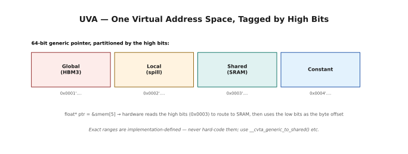
UVA carves the 64-bit virtual address space into regions by high-bit pattern: roughly 0x0001'0000'xxxx'xxxx for Global (HBM3), 0x0002'... for Local, 0x0003'... for Shared, 0x0004'... for Constant — approximate and implementation-defined, so always convert with __cvta_generic_to_shared() and friends rather than hard-coding a range. Dereferencing float* ptr = &smem[5] (address ≈ 0x0003'0000'0000'0014) costs the hardware 1-2 extra cycles versus an explicit state-space address: it reads the high bits (0x0003 → route to SRAM) before using the low bits (0x14) as the byte offset within SMEM.
14 — Generic vs State-Space Pointers¶
Two kinds of address, and the difference matters more than it first appears.
A generic pointer is the ordinary C++ kind: 64 bits, tagged with its state space, works everywhere, costs a few cycles per access while the hardware decodes the tag. A state-space pointer is a bare integer — usually 32 bits for shared memory — with no tag at all. It is what PTX instructions actually want, it is half the size, and dereferencing it as a C++ pointer will crash.
14.1 Generic Pointers (Default)¶
Every pointer you write in CUDA C++ is generic — 64-bit, works for any memory space, costs a few cycles for hardware routing on each dereference.
14.2 State-Space Pointers (Explicit)¶
A state-space pointer is NOT a C++ pointer. It is a raw integer (usually 32-bit for SMEM) representing an offset within one specific memory space. It cannot be dereferenced with * in C++. It can only be passed to PTX instructions that expect that specific space.
Generic vs State-Space — Side-by-Side
══════════════════════════════════════════════════════════════════════
Generic (C++ default):
float* ptr = &smem[5]; // 64-bit, tagged address
float val = *ptr; // hardware decodes tag → routes to SMEM
ptr[2] = 3.14f; // C++ arithmetic works
// Use for: all normal CUDA C++ code
State-space (explicit, 32-bit for SMEM):
uint32_t smem_addr = __cvta_generic_to_shared(&smem[5]);
// smem_addr = raw byte offset, NOT a C++ pointer
// *(float*)smem_addr → CRASH (missing tag bits!)
// ONLY valid use: pass to PTX instructions
asm("ld.shared.f32 %0, [%1];" : "=f"(val) : "r"(smem_addr));
// Use for: ldmatrix, TMA, mapa, atom.shared — anything that REQUIRES it
When you MUST use state-space addresses:
├── ldmatrix (tensor core loading)
├── stmatrix (tensor core storing, Hopper+)
├── cp.async.bulk.tensor (TMA)
├── mapa (cross-CTA SMEM in clusters)
└── atom.shared::cluster (cluster atomics)
15 — cvta — Convert To Address¶
cvta — "convert to address" — is the instruction that moves between the two
pointer forms from §14. Strip the tag to get a raw shared-memory offset, or add
it back to get a pointer C++ can use.
You will type __cvta_generic_to_shared() more than almost any other intrinsic
in this book: every TMA copy, every mbarrier operation, and every ldmatrix
in later chapters begins with one.
15.1 What cvta Does¶
cvta strips or adds the state-space tag bits, converting between 64-bit generic addresses and state-space-specific offsets.
cvta — Complete Reference
══════════════════════════════════════════════════════════════════════
C++ Intrinsic Result Notes
────────────────────────────────────────────────────────────────
__cvta_generic_to_shared(ptr) uint32_t strips tag, 32-bit offset
__cvta_generic_to_global(ptr) uint64_t strips tag, full 64-bit addr
__cvta_generic_to_local(ptr) uint32_t strips tag
__cvta_generic_to_constant(ptr) uint32_t strips tag
PTX (when no C++ intrinsic available):
cvta.to.shared.u32 smem, generic; // generic→shared
cvta.to.global.u64 gmem, generic; // generic→global
cvta.shared.u64 generic, smem; // shared→generic (reverse)
Manual trace:
smem[10] at virtual address 0x0003'0000'0000'0028 (byte 40 = 0x28 offset)
__cvta_generic_to_shared(&smem[10]) → 0x28 (just the offset)
ld.shared.f32 [0x28] → correctly reads smem[10]
16 — mapa & Cluster-Wide Memory¶
The last piece of address plumbing, and the one that closes the loop back to §1–3.
mapa takes an address inside your block's shared memory and rewrites it to
point at the same offset inside another block's shared memory in your cluster.
That is the concrete mechanism behind everything DSMEM promised: the remote
block's scratchpad, addressable as if it were a slightly further-away part of
your own.
16.1 What mapa Does¶
mapa translates a shared-memory address from THIS block's space into an address that accesses the TARGET block's shared memory via the DSMEM interconnect. Without mapa, there is no way to address another block's SMEM.
mapa — Address Translation for Cross-Block SMEM
══════════════════════════════════════════════════════════════════════
PTX: mapa.shared::cluster.u32 remote_addr, local_addr, target_rank;
Inputs:
local_addr: uint32_t — byte offset in THIS block's SMEM
target_rank: uint32_t — which block in the cluster (0 to size-1)
Output:
remote_addr: uint32_t — cluster-space addr for the same offset
in the TARGET block's SMEM
Manual trace (cluster size=2, Block 0 reads Block 1's smem[5]):
local_addr = __cvta_generic_to_shared(&smem[5]) = 0x14 (20 bytes)
target_rank = 1
→ mapa produces cluster-encoded address for Block 1's smem[5]
ld.shared::cluster.f32 val, [remote_addr]
→ reads from Block 1's SRAM via DSMEM network (~50-80 cycles)
CRITICAL: mapa takes RANK (0..cluster_size-1), NOT global blockIdx.x!
rank = blockIdx.x % cluster_size (for 1D clusters)
Better: cluster.block_rank() from cooperative_groups
C++ equivalent (preferred when possible):
cg::cluster_group cluster = cg::this_cluster();
float* remote = cluster.map_shared_rank(smem, target_rank);
float val = remote[5]; // uses ld.shared::cluster internally
17 — Putting It All Together¶
Two complete programs that use most of the chapter at once — clusters, inline PTX, state spaces, address conversion, and packed types in the same kernel.
Both open with a hand-worked trace before the code: real bit patterns, computed by hand, so you can check the program's output against arithmetic you did yourself. Working through the trace first is worth the ten minutes; it is the difference between reading the code and being able to debug it.
17.1 Full Example: PTX Pointers & Packed Types¶
Manual worked example before the code:
For test_packed_fp16 below, tracing with a0=1.0f, a1=2.0f, b0=3.0f, b1=4.0f:
FP16(1.0f) = 0x3C00, FP16(2.0f) = 0x4000
FP16(3.0f) = 0x4200, FP16(4.0f) = 0x4400
packed_a = {0x3C00, 0x4000} → bits 15:0 = 0x3C00, bits 31:16 = 0x4000
packed_b = {0x4200, 0x4400} → bits 15:0 = 0x4200, bits 31:16 = 0x4400
add.f16x2:
low: FP16(1.0) + FP16(3.0) = FP16(4.0) = 0x4400
high: FP16(2.0) + FP16(4.0) = FP16(6.0) = 0x4600
After cvt.f32.f16: r0=4.0f, r1=6.0f ✓
═══════════════════════════════════════════════════════
FILE: ex04_ptx_pointers.cu
COMPILE: nvcc -std=c++17 -arch=sm_90a -O2 ex04_ptx_pointers.cu -o ex04
(Also works: sm_80, sm_86, sm_89)
RUN: ./ex04
EXPECT: 6/6 tests PASS
═══════════════════════════════════════════════════════
// ex04_ptx_pointers.cu — State spaces, cvta, packed FP16, bit reinterpret
#include <cstdio>
#include <cstdint>
#include <cmath>
#include <cuda_fp16.h>
#define CHECK_CUDA(call) do { \
cudaError_t _e = (call); \
if (_e != cudaSuccess) { \
fprintf(stderr,"CUDA error %s:%d %s\n",__FILE__,__LINE__, \
cudaGetErrorString(_e)); exit(1); } } while(0)
// ── Test 1: cvta generic→shared + ld.shared ───────────────────────
// Writes 42.0f and 99.0f via C++, reads back via explicit PTX ld.shared.
// Proves that __cvta_generic_to_shared gives a usable 32-bit offset.
__global__ void test_cvta_shared(uint32_t* results) {
__shared__ float smem[32];
if (threadIdx.x != 0) return;
smem[0] = 42.0f;
smem[1] = 99.0f;
// Strip tag bits from the C++ pointer → 32-bit SMEM offset
uint32_t addr = __cvta_generic_to_shared(&smem[0]);
float v0, v1;
asm volatile("ld.shared.f32 %0, [%1];" : "=f"(v0) : "r"(addr));
asm volatile("ld.shared.f32 %0, [%1+4];" : "=f"(v1) : "r"(addr));
// [addr+4] = next float (4 bytes further in SMEM)
results[0] = __float_as_uint(v0); // 42.0f bits
results[1] = __float_as_uint(v1); // 99.0f bits
results[2] = addr; // raw SMEM byte offset
}
// ── Test 2: st.shared + ld.shared with thread-indexed addresses ───
// Thread i stores (i*10+7) to smem[i].
// Thread i then reads smem[(i+1)%N] — the circular neighbor.
// Thread 0 reports its own value (7.0) and neighbor's value (17.0).
__global__ void test_explicit_shared(float* results) {
__shared__ float smem[64];
uint32_t base = __cvta_generic_to_shared(smem);
uint32_t my_addr = base + threadIdx.x * sizeof(float);
float my_val = threadIdx.x * 10.0f + 7.0f;
asm volatile("st.shared.f32 [%0], %1;"
: : "r"(my_addr), "f"(my_val) : "memory");
__syncthreads();
uint32_t nb_addr = base + ((threadIdx.x + 1) % blockDim.x) * sizeof(float);
float nb_val;
asm volatile("ld.shared.f32 %0, [%1];" : "=f"(nb_val) : "r"(nb_addr));
if (threadIdx.x == 0) { results[0] = my_val; results[1] = nb_val; }
}
// ── Test 3: ld.global / st.global with 64-bit addresses ──────────
// Multiplies each element by 2.0 using explicit PTX global loads/stores.
// KEY: global pointers are 64-bit → use "l" constraint, NOT "r"!
__global__ void test_global_ptx(float* in, float* out, int n) {
int i = blockIdx.x * blockDim.x + threadIdx.x;
if (i >= n) return;
uint64_t ia = reinterpret_cast<uint64_t>(in) + (uint64_t)i * 4;
uint64_t oa = reinterpret_cast<uint64_t>(out) + (uint64_t)i * 4;
float v;
asm volatile("ld.global.f32 %0, [%1];" : "=f"(v) : "l"(ia));
float r;
asm("mul.f32 %0, %1, %2;" : "=f"(r) : "f"(v), "f"(2.0f));
asm volatile("st.global.f32 [%0], %1;" : : "l"(oa), "f"(r) : "memory");
}
// ── Test 4: atom.shared.add — all threads increment shared counter ─
// 64 threads, each atomically adds 1 → final counter = 64.
// atom.shared returns the OLD value; we check the final counter.
__global__ void test_shared_atomic(uint32_t* result) {
__shared__ uint32_t counter;
if (threadIdx.x == 0) counter = 0;
__syncthreads();
uint32_t saddr = __cvta_generic_to_shared(&counter);
uint32_t old;
asm volatile("atom.shared.add.u32 %0, [%1], 1;"
: "=r"(old) : "r"(saddr) : "memory");
__syncthreads();
if (threadIdx.x == 0) result[0] = counter;
}
// ── Test 5: Packed FP16 add — two FP16 additions in one instruction ─
// a=(a0,a1), b=(b0,b1) packed into .f16x2 registers.
// add.f16x2 adds both pairs simultaneously → r=(a0+b0, a1+b1).
__global__ void test_packed_fp16(uint32_t* out,
float a0, float a1, float b0, float b1) {
// Convert FP32→FP16 ("h" = 16-bit register)
uint16_t ha0, ha1, hb0, hb1;
asm("cvt.rn.f16.f32 %0,%1;" : "=h"(ha0) : "f"(a0));
asm("cvt.rn.f16.f32 %0,%1;" : "=h"(ha1) : "f"(a1));
asm("cvt.rn.f16.f32 %0,%1;" : "=h"(hb0) : "f"(b0));
asm("cvt.rn.f16.f32 %0,%1;" : "=h"(hb1) : "f"(b1));
// Pack: {lo16, hi16} → lo in bits[15:0], hi in bits[31:16]
uint32_t pa, pb;
asm("mov.b32 %0, {%1,%2};" : "=r"(pa) : "h"(ha0), "h"(ha1));
asm("mov.b32 %0, {%1,%2};" : "=r"(pb) : "h"(hb0), "h"(hb1));
// Packed add: ONE instruction handles TWO FP16 additions
uint32_t pr;
asm("add.f16x2 %0, %1, %2;" : "=r"(pr) : "r"(pa), "r"(pb));
// Unpack and convert back to FP32 for verification
uint16_t hr0, hr1;
asm("mov.b32 {%0,%1}, %2;" : "=h"(hr0), "=h"(hr1) : "r"(pr));
float r0, r1;
asm("cvt.f32.f16 %0,%1;" : "=f"(r0) : "h"(hr0));
asm("cvt.f32.f16 %0,%1;" : "=f"(r1) : "h"(hr1));
out[0] = pr;
out[1] = __float_as_uint(r0);
out[2] = __float_as_uint(r1);
}
// ── Test 6: Bit reinterpret — mov.b32 float↔uint32 ───────────────
// mov.b32 moves raw bits with NO value conversion (unlike cvt).
// Useful for: reading IEEE 754 bit patterns, packing manipulations.
__global__ void test_bit_reinterpret(uint32_t* out) {
float pi = 3.14159f;
// float → uint32: get raw IEEE 754 bits (≈ 0x40490FD0)
uint32_t bits;
asm("mov.b32 %0, %1;" : "=r"(bits) : "f"(pi));
// uint32 → float: put bits back (reconstructed == pi exactly)
float reconstructed;
asm("mov.b32 %0, %1;" : "=f"(reconstructed) : "r"(bits));
out[0] = bits;
out[1] = __float_as_uint(reconstructed);
out[2] = (bits == __float_as_uint(pi)) ? 1 : 0; // should be 1
}
// ── Main ──────────────────────────────────────────────────────────
int main() {
printf("╔══════════════════════════════════════════════════════╗\n");
printf("║ ex04: PTX Pointers, State Spaces & Packed Types ║\n");
printf("╚══════════════════════════════════════════════════════╝\n\n");
int tests = 0, passed = 0;
// Test 1
printf("Test 1: cvta + ld.shared (smem[0]=42, smem[1]=99)\n");
{
uint32_t *d, h[3];
CHECK_CUDA(cudaMalloc(&d, 3*4));
test_cvta_shared<<<1,1>>>(d);
CHECK_CUDA(cudaDeviceSynchronize());
CHECK_CUDA(cudaMemcpy(h,d,12,cudaMemcpyDeviceToHost));
float v0=__uint_as_float(h[0]), v1=__uint_as_float(h[1]);
tests++;
if (fabsf(v0-42.0f)<1e-5f && fabsf(v1-99.0f)<1e-5f) {
passed++;
printf(" ✓ PASS: loaded %.1f and %.1f, SMEM offset=0x%X\n",v0,v1,h[2]);
} else printf(" ✗ FAIL: got %.1f %.1f\n",v0,v1);
cudaFree(d);
}
// Test 2
printf("\nTest 2: st.shared/ld.shared neighbor (expect 7.0 and 17.0)\n");
{
float *d, h[2];
CHECK_CUDA(cudaMalloc(&d, 8));
test_explicit_shared<<<1,32>>>(d);
CHECK_CUDA(cudaDeviceSynchronize());
CHECK_CUDA(cudaMemcpy(h,d,8,cudaMemcpyDeviceToHost));
tests++;
if (fabsf(h[0]-7.0f)<1e-5f && fabsf(h[1]-17.0f)<1e-5f) {
passed++; printf(" ✓ PASS: my=%.1f neighbor=%.1f\n",h[0],h[1]);
} else printf(" ✗ FAIL: my=%.1f neighbor=%.1f\n",h[0],h[1]);
cudaFree(d);
}
// Test 3
printf("\nTest 3: ld.global/st.global multiply by 2\n");
{
const int N=8;
float hi[N]={1,2,3,4,5,6,7,8}, ho[N]={};
float *di,*dout;
CHECK_CUDA(cudaMalloc(&di,N*4)); CHECK_CUDA(cudaMalloc(&dout,N*4));
CHECK_CUDA(cudaMemcpy(di,hi,N*4,cudaMemcpyHostToDevice));
test_global_ptx<<<1,N>>>(di,dout,N);
CHECK_CUDA(cudaDeviceSynchronize());
CHECK_CUDA(cudaMemcpy(ho,dout,N*4,cudaMemcpyDeviceToHost));
bool ok=true;
for(int i=0;i<N;i++) if(fabsf(ho[i]-hi[i]*2)>1e-4f){ok=false;break;}
tests++;
if(ok){passed++; printf(" ✓ PASS: all elements×2 correct\n");}
else printf(" ✗ FAIL\n");
cudaFree(di); cudaFree(dout);
}
// Test 4
printf("\nTest 4: atom.shared.add (64 threads → counter=64)\n");
{
uint32_t *d, h;
CHECK_CUDA(cudaMalloc(&d,4));
test_shared_atomic<<<1,64>>>(d);
CHECK_CUDA(cudaDeviceSynchronize());
CHECK_CUDA(cudaMemcpy(&h,d,4,cudaMemcpyDeviceToHost));
tests++;
if(h==64){passed++; printf(" ✓ PASS: counter=%u\n",h);}
else printf(" ✗ FAIL: counter=%u (expected 64)\n",h);
cudaFree(d);
}
// Test 5
printf("\nTest 5: Packed FP16 add (1+3=4, 2+4=6)\n");
{
uint32_t *d, h[3];
CHECK_CUDA(cudaMalloc(&d,12));
test_packed_fp16<<<1,1>>>(d, 1.0f,2.0f, 3.0f,4.0f);
CHECK_CUDA(cudaDeviceSynchronize());
CHECK_CUDA(cudaMemcpy(h,d,12,cudaMemcpyDeviceToHost));
float r0=__uint_as_float(h[1]), r1=__uint_as_float(h[2]);
tests++;
if(fabsf(r0-4.0f)<0.01f && fabsf(r1-6.0f)<0.01f){
passed++; printf(" ✓ PASS: slot0=%.1f slot1=%.1f\n",r0,r1);
} else printf(" ✗ FAIL: slot0=%.4f slot1=%.4f\n",r0,r1);
cudaFree(d);
}
// Test 6
printf("\nTest 6: mov.b32 bit reinterpret (float↔uint32)\n");
{
uint32_t *d, h[3];
CHECK_CUDA(cudaMalloc(&d,12));
test_bit_reinterpret<<<1,1>>>(d);
CHECK_CUDA(cudaDeviceSynchronize());
CHECK_CUDA(cudaMemcpy(h,d,12,cudaMemcpyDeviceToHost));
tests++;
if(h[2]==1){
passed++;
printf(" ✓ PASS: pi bits=0x%08X, roundtrip matches\n",h[0]);
} else printf(" ✗ FAIL: mismatch 0x%08X vs 0x%08X\n",h[0],h[1]);
cudaFree(d);
}
printf("\n╔══════════════════════════════════════════════════════╗\n");
printf("║ %d/%d tests passed %-34s║\n", passed, tests,
passed==tests ? " ✓ ALL PASS" : " ✗ FAILURES");
printf("╚══════════════════════════════════════════════════════╝\n");
return (passed==tests) ? 0 : 1;
}
Sample Output:
╔══════════════════════════════════════════════════════╗
║ ex04: PTX Pointers, State Spaces & Packed Types ║
╚══════════════════════════════════════════════════════╝
Test 1: cvta + ld.shared (smem[0]=42, smem[1]=99)
✓ PASS: loaded 42.0 and 99.0, SMEM offset=0x0
Test 2: st.shared/ld.shared neighbor (expect 7.0 and 17.0)
✓ PASS: my=7.0 neighbor=17.0
Test 3: ld.global/st.global multiply by 2
✓ PASS: all elements×2 correct
Test 4: atom.shared.add (64 threads → counter=64)
✓ PASS: counter=64
Test 5: Packed FP16 add (1+3=4, 2+4=6)
✓ PASS: slot0=4.0 slot1=6.0
Test 6: mov.b32 bit reinterpret (float↔uint32)
✓ PASS: pi bits=0x40490FD0, roundtrip matches
╔══════════════════════════════════════════════════════╗
║ 6/6 tests passed ✓ ALL PASS ║
╚══════════════════════════════════════════════════════╝
The SMEM offset=0x%X value in Test 1 is whatever small 32-bit offset __cvta_generic_to_shared happens to assign — it is driver/compiler-chosen, not a fixed address, so don't expect 0x0 specifically on your own run; the surrounding PASS depends only on the two loaded values being 42.0 and 99.0, not on that offset. 0x40490FD0 is the exact IEEE-754 single-precision bit pattern for 3.14159f — that part is architecture-independent and will match on any run.
17.2 Full Example: Data Types & Packed Operations¶
Manual worked example for FP32→FP16 conversion:
Input: 1.5f
IEEE 754 FP32: sign=0, exp=127, mant=0x400000 → 0x3FC00000
FP16 encoding: sign=0, exp=15 (bias 15, actual=0), mant=0x200
→ 0x3E00
Check: FP16 0x3E00 = sign=0, exp=01111=15, mant=0000000000
Actual exponent = 15-15 = 0, so value = 1.0 × 2^0 × (1 + 0/1024)
Wait — 1.5f: exponent=0, mant=512/1024 = 0.5, value = (1+0.5)×1 = 1.5 ✓
FP16 mant for 1.5 = 512 = 0x200, exp bits = 01111 = 0xF<<10 = 0x3C00
So FP16(1.5f) = 0x3C00 + 0x0200 = 0x3E00 ✓
═══════════════════════════════════════════════════════
FILE: ex05_ptx_datatypes.cu
COMPILE: nvcc -std=c++17 -arch=sm_90a -O2 ex05_ptx_datatypes.cu -o ex05
(Also works: sm_80, sm_86)
RUN: ./ex05
EXPECT: 5/5 tests PASS
═══════════════════════════════════════════════════════
// ex05_ptx_datatypes.cu — PTX data types: FP16/BF16/FP64/packed ops
#include <cstdio>
#include <cstdint>
#include <cmath>
#include <cuda_fp16.h>
#include <cuda_bf16.h>
#define CHECK_CUDA(call) do { \
cudaError_t _e=(call); \
if(_e!=cudaSuccess){fprintf(stderr,"CUDA %s:%d %s\n", \
__FILE__,__LINE__,cudaGetErrorString(_e));exit(1);} } while(0)
// ── Test 1: FP32 → FP16 conversion ───────────────────────────────
// cvt.rn.f16.f32: convert with round-to-nearest.
// "h" = 16-bit register constraint for FP16.
__global__ void test_fp32_to_fp16(uint16_t* out, float val) {
uint16_t result;
asm("cvt.rn.f16.f32 %0, %1;" // round-to-nearest FP32→FP16
: "=h"(result) // 16-bit output register
: "f"(val)); // 32-bit float input
out[0] = result;
}
// ── Test 2: FP16 pack / unpack roundtrip ─────────────────────────
// Packs two FP16 values into one 32-bit register and unpacks them.
// This is the .f16x2 format that tensor cores require.
__global__ void test_fp16_pack(uint32_t* out, float a, float b) {
uint16_t ha, hb;
asm("cvt.rn.f16.f32 %0,%1;" : "=h"(ha) : "f"(a));
asm("cvt.rn.f16.f32 %0,%1;" : "=h"(hb) : "f"(b));
// Pack: ha → bits[15:0], hb → bits[31:16]
uint32_t packed;
asm("mov.b32 %0, {%1,%2};" : "=r"(packed) : "h"(ha), "h"(hb));
// Unpack back
uint16_t ua, ub;
asm("mov.b32 {%0,%1}, %2;" : "=h"(ua), "=h"(ub) : "r"(packed));
out[0] = packed;
out[1] = ua; // should equal ha (a's FP16 bits)
out[2] = ub; // should equal hb (b's FP16 bits)
}
// ── Test 3: Packed BF16 add ───────────────────────────────────────
// BF16 is stored as raw bits (.b16) in PTX; arithmetic uses .bf16x2.
// add.bf16x2 adds two BF16 pairs, same pattern as add.f16x2.
__global__ void test_bf16_add(uint32_t* out, float a, float b) {
// __nv_bfloat16 is the C++ type; we work with its raw uint16 bits
__nv_bfloat16 ba = __float2bfloat16(a);
__nv_bfloat16 bb = __float2bfloat16(b);
uint16_t ra = *reinterpret_cast<uint16_t*>(&ba);
uint16_t rb = *reinterpret_cast<uint16_t*>(&bb);
// Pack two BF16 values
uint32_t pa, pb;
asm("mov.b32 %0, {%1,%2};" : "=r"(pa) : "h"(ra), "h"(ra)); // both slots = a
asm("mov.b32 %0, {%1,%2};" : "=r"(pb) : "h"(rb), "h"(rb)); // both slots = b
// Packed BF16 add: adds both pairs simultaneously
uint32_t pr;
asm("add.bf16x2 %0, %1, %2;" : "=r"(pr) : "r"(pa), "r"(pb));
// Convert result back to float for verification
uint16_t r_lo, r_hi;
asm("mov.b32 {%0,%1}, %2;" : "=h"(r_lo), "=h"(r_hi) : "r"(pr));
__nv_bfloat16 res_lo, res_hi;
*reinterpret_cast<uint16_t*>(&res_lo) = r_lo;
*reinterpret_cast<uint16_t*>(&res_hi) = r_hi;
out[0] = __float_as_uint(__bfloat162float(res_lo)); // a+b in lo slot
out[1] = __float_as_uint(__bfloat162float(res_hi)); // a+b in hi slot
}
// ── Test 4: FP64 addition ─────────────────────────────────────────
// FP64 uses register PAIRS in PTX (two 32-bit slots = 64 bits).
// "d" constraint maps to .f64 (register pair).
__global__ void test_fp64(double* out, double a, double b) {
double result;
asm("add.f64 %0, %1, %2;"
: "=d"(result) // "d" = 64-bit float (register pair)
: "d"(a), "d"(b));
out[0] = result;
}
// ── Test 5: Integer MAD with overflow detection ───────────────────
// mad.lo.u32 computes (a*b+c) taking low 32 bits.
// mad.hi.u32 computes (a*b+c) taking high 32 bits.
// Together they give the full 64-bit result.
__global__ void test_mad_full(uint32_t* out, uint32_t a, uint32_t b, uint32_t c) {
uint32_t lo, hi;
asm("mad.lo.u32 %0, %1, %2, %3;" : "=r"(lo) : "r"(a),"r"(b),"r"(c));
asm("mad.hi.u32 %0, %1, %2, 0;" : "=r"(hi) : "r"(a),"r"(b));
// Together: full 64-bit = (uint64_t)hi<<32 | lo
out[0] = lo;
out[1] = hi;
}
int main() {
printf("╔══════════════════════════════════════════════════════╗\n");
printf("║ ex05: PTX Data Types & Packed Operations ║\n");
printf("╚══════════════════════════════════════════════════════╝\n\n");
int tests=0, passed=0;
// Test 1: FP32→FP16
printf("Test 1: cvt FP32→FP16 (1.5f → 0x3E00)\n");
{
uint16_t *d,h;
CHECK_CUDA(cudaMalloc(&d,2));
test_fp32_to_fp16<<<1,1>>>(d,1.5f);
CHECK_CUDA(cudaDeviceSynchronize());
CHECK_CUDA(cudaMemcpy(&h,d,2,cudaMemcpyDeviceToHost));
tests++;
if(h==0x3E00){passed++; printf(" ✓ PASS: 0x%04X\n",h);}
else printf(" ✗ FAIL: 0x%04X (expected 0x3E00)\n",h);
cudaFree(d);
}
// Test 2: FP16 pack/unpack
printf("\nTest 2: FP16 pack/unpack (1.0f=0x3C00, 2.0f=0x4000)\n");
{
uint32_t *d,h[3];
CHECK_CUDA(cudaMalloc(&d,12));
test_fp16_pack<<<1,1>>>(d,1.0f,2.0f);
CHECK_CUDA(cudaDeviceSynchronize());
CHECK_CUDA(cudaMemcpy(h,d,12,cudaMemcpyDeviceToHost));
// lo=0x3C00 (1.0f), hi=0x4000 (2.0f), packed=0x40003C00
tests++;
if((uint16_t)h[1]==0x3C00 && (uint16_t)h[2]==0x4000){
passed++;
printf(" ✓ PASS: packed=0x%08X lo=0x%04X hi=0x%04X\n",
h[0],(uint16_t)h[1],(uint16_t)h[2]);
} else printf(" ✗ FAIL: lo=0x%04X hi=0x%04X\n",(uint16_t)h[1],(uint16_t)h[2]);
cudaFree(d);
}
// Test 3: BF16 packed add
printf("\nTest 3: add.bf16x2 (2.0+3.0=5.0 in both slots)\n");
{
uint32_t *d,h[2];
CHECK_CUDA(cudaMalloc(&d,8));
test_bf16_add<<<1,1>>>(d,2.0f,3.0f);
CHECK_CUDA(cudaDeviceSynchronize());
CHECK_CUDA(cudaMemcpy(h,d,8,cudaMemcpyDeviceToHost));
float r0=__uint_as_float(h[0]), r1=__uint_as_float(h[1]);
tests++;
if(fabsf(r0-5.0f)<0.05f && fabsf(r1-5.0f)<0.05f){
passed++; printf(" ✓ PASS: lo=%.2f hi=%.2f\n",r0,r1);
} else printf(" ✗ FAIL: lo=%.4f hi=%.4f\n",r0,r1);
cudaFree(d);
}
// Test 4: FP64
printf("\nTest 4: add.f64 (1.23456789012345 + 9.87654321098765)\n");
{
double *d,h;
CHECK_CUDA(cudaMalloc(&d,8));
test_fp64<<<1,1>>>(d,1.23456789012345,9.87654321098765);
CHECK_CUDA(cudaDeviceSynchronize());
CHECK_CUDA(cudaMemcpy(&h,d,8,cudaMemcpyDeviceToHost));
double expected=1.23456789012345+9.87654321098765;
tests++;
if(fabs(h-expected)<1e-12){passed++; printf(" ✓ PASS: %.15f\n",h);}
else printf(" ✗ FAIL: %.15f expected %.15f\n",h,expected);
cudaFree(d);
}
// Test 5: MAD hi+lo (full 64-bit product)
// 0xFFFFFFFF * 0xFFFFFFFF + 0 = 0xFFFFFFFE00000001
// lo = 0x00000001, hi = 0xFFFFFFFE
printf("\nTest 5: mad hi+lo (0xFFFFFFFF * 0xFFFFFFFF)\n");
{
uint32_t *d,h[2];
CHECK_CUDA(cudaMalloc(&d,8));
test_mad_full<<<1,1>>>(d,0xFFFFFFFF,0xFFFFFFFF,0);
CHECK_CUDA(cudaDeviceSynchronize());
CHECK_CUDA(cudaMemcpy(h,d,8,cudaMemcpyDeviceToHost));
tests++;
if(h[0]==0x00000001 && h[1]==0xFFFFFFFE){
passed++;
printf(" ✓ PASS: lo=0x%08X hi=0x%08X\n",h[0],h[1]);
} else printf(" ✗ FAIL: lo=0x%08X hi=0x%08X\n",h[0],h[1]);
cudaFree(d);
}
printf("\n╔══════════════════════════════════════════════════════╗\n");
printf("║ %d/%d tests passed %-34s║\n",passed,tests,
passed==tests?" ✓ ALL PASS":" ✗ FAILURES");
printf("╚══════════════════════════════════════════════════════╝\n");
return (passed==tests)?0:1;
}
Sample Output:
╔══════════════════════════════════════════════════════╗
║ ex05: PTX Data Types & Packed Operations ║
╚══════════════════════════════════════════════════════╝
Test 1: cvt FP32→FP16 (1.5f → 0x3E00)
✓ PASS: 0x3E00
Test 2: FP16 pack/unpack (1.0f=0x3C00, 2.0f=0x4000)
✓ PASS: packed=0x40003C00 lo=0x3C00 hi=0x4000
Test 3: add.bf16x2 (2.0+3.0=5.0 in both slots)
✓ PASS: lo=5.00 hi=5.00
Test 4: add.f64 (1.23456789012345 + 9.87654321098765)
✓ PASS: 11.111111101111101
Test 5: mad hi+lo (0xFFFFFFFF * 0xFFFFFFFF)
✓ PASS: lo=0x00000001 hi=0xFFFFFFFE
╔══════════════════════════════════════════════════════╗
║ 5/5 tests passed ✓ ALL PASS ║
╚══════════════════════════════════════════════════════╝
Test 5 is the one worth tracing by hand: 0xFFFFFFFF × 0xFFFFFFFF = 0xFFFFFFFE00000001 as a full 64-bit product (that's (2³²−1)² = 2⁶⁴ − 2³³ + 1), so mad.lo.u32 (the low 32 bits) gives 0x00000001 and mad.hi.u32 (the high 32 bits) gives 0xFFFFFFFE — exactly what the two halves need to be to reconstruct the 64-bit result.
18 — Quick Reference¶
Nothing new below — this is the chapter compressed into cards you can come back to without re-reading. The last one, the Five Commandments, is the section worth re-reading before you write any inline PTX of your own; every rule in it corresponds to a bug class that fails silently.
Inline PTX Syntax Cheat Sheet¶
The whole asm() contract on one card: syntax, constraint letters, and
modifiers.
Full syntax:
asm [volatile] ("instruction_string"
: output_operands // after 1st colon
: input_operands // after 2nd colon
[ : clobbers ] // after 3rd colon (optional)
);
Constraint modifiers (outputs only):
"=" write-only
"+" read-write (same var is input and output)
"&" early clobber (guarantee separate register from inputs)
Register constraints:
"h" .u16/.f16 (16-bit)
"r" .u32/.s32 (32-bit int, SMEM addresses)
"l" .u64 (64-bit, global pointers)
"f" .f32 (32-bit float)
"d" .f64 (64-bit float, register pair)
"n" immediate (compile-time constant ONLY)
Numbering: outputs first (%0, %1...), then inputs (%N, %N+1...)
Clobbers:
"memory" → instruction may read/write memory the compiler can't see
(No register clobbers — use output constraints instead)
When to use volatile:
ALL stores, atomics, barriers, TMA, fence instructions.
Anything with side effects or ordering requirements.
State Space Quick Reference¶
Section 7 in one table — including the latency column, which is the one to remember.
Space PTX Qualifier CUDA C++ Scope Speed
──────────────────────────────────────────────────────────────────────
Register .reg (automatic) Thread 1 cycle
Shared (CTA) .shared / ::cta __shared__ Block ~10 cycles
Shared (cluster).shared::cluster cluster DSMEM Cluster ~50-80 cycles
Global .global __device__, malloc Grid ~500 cycles
Local (spill) .local (spill target) Thread ~500 cycles
Constant .const __constant__ Grid ~1-10 cycles
Parameter .param kernel args Kernel 1-2 cycles
Address Conversion Functions¶
Sections 15 and 16 in one place: every conversion you can perform, and what type comes back.
Intrinsic Direction Result
──────────────────────────────────────────────────────────────────────
__cvta_generic_to_shared(ptr) Generic→Shared uint32_t
__cvta_generic_to_global(ptr) Generic→Global uint64_t
__cvta_generic_to_local(ptr) Generic→Local uint32_t
__cvta_generic_to_constant(ptr) Generic→Constant uint32_t
PTX:
cvta.to.shared.u32 smem, gen; // generic → shared offset
cvta.to.global.u64 gmem, gen; // generic → global address
cvta.shared.u64 gen, smem; // shared → generic (reverse)
mapa.shared::cluster.u32 r,l,rank;// local SMEM addr → cluster addr
Data Type Quick Reference¶
Every PTX type you'll meet in this book, with its C++ equivalent, its constraint letter, and where the tensor cores will accept it.
PTX Type Bits C++ Type Constraint Tensor Core Use
──────────────────────────────────────────────────────────────
.f32 32 float "f" Accumulator (C/D)
.f64 64 double "d" Accumulator (rare)
.f16 16 __half "h" Input (A, B)
.bf16 16 __nv_bfloat16 "h" Input (A, B)
.f16x2 32 (packed pair) "r" Input packed
.bf16x2 32 (packed pair) "r" Input packed
.e4m3 / .b8 8 __nv_fp8_e4m3 "h" FP8 forward pass
.e5m2 / .b8 8 __nv_fp8_e5m2 "h" FP8 backward pass
.u32 32 uint32_t "r" —
.u64 64 uint64_t "l" —
.b128 128 (4 registers) 4×"r" Raw WGMMA output
.pred 1 bool — Predicate/branch
Cluster Quick Reference¶
The cluster API and its underlying PTX registers, side by side.
Concept C++ API PTX Register
────────────────────────────────────────────────────────────────────
Get cluster handle cg::this_cluster() —
My rank in cluster cluster.block_rank() %cluster_ctarank
Cluster size cluster.num_blocks() %cluster_nctarank
Cluster-wide sync cluster.sync() bar.cluster.arrive/wait
Map remote SMEM cluster.map_shared_rank(p,r) mapa.shared::cluster
CTA ID in cluster — %cluster_ctaid.{x,y,z}
Cluster dimensions — %cluster_nctaid.{x,y,z}
Is explicit cluster — %is_explicit_cluster
Max portable cluster size: 8 (H100 and B200)
Grid must be multiple of cluster dimensions.
The Five Commandments of Inline PTX¶
If you keep one page from this chapter, keep this one. Each rule below maps to a failure mode that produces wrong answers rather than error messages.
1. ALWAYS USE volatile FOR SIDE EFFECTS
Stores, atomics, barriers, TMA ops, fences.
Without volatile the compiler may delete or reorder them.
2. USE "memory" CLOBBER FOR MEMORY OPERATIONS
Any PTX that reads/writes memory the C++ compiler doesn't track.
Without it: stale cached register values, wrong reordering.
3. MATCH CONSTRAINTS TO TYPES — mistakes are silent bugs
float* → "l" (64-bit global addr), NOT "r" (32-bit!)
uint16_t → "h", uint32_t → "r", uint64_t → "l", float → "f"
SMEM addr → "r" (32-bit offset, NOT 64-bit!)
4. USE EARLY CLOBBER "&" FOR MULTI-INSTRUCTION BLOCKS
If output is written before all inputs are consumed:
use "=&r" not "=r" — prevents silent register aliasing.
5. PREFER C++ INTRINSICS OVER RAW PTX WHEN AVAILABLE
__cvta_generic_to_shared() > hand-written cvta PTX.
cluster.map_shared_rank() > hand-written mapa PTX.
PTX only when no C++ equivalent exists.
★ Final Comprehensive Example¶
The capstone. Two blocks in a cluster each load a slice of an array into their own shared memory, then reach across into their partner's shared memory to combine the two — a vector add distributed across two SMs, written with the address conversions from §15 and §16 and the cluster machinery from §1.
If you can read this kernel and predict its output before running it, you have this chapter.
This final example combines clusters, PTX basics, state spaces, pointers, and data types in one kernel. It is the capstone of the guide.
Manual Worked Example:
Scenario: Cluster of 2 blocks, each with 64 threads.
Each block loads 64 floats from global memory into SMEM.
Each block then reads the PARTNER block's SMEM and adds them.
Result: output[i] = input_block0[i] + input_block1[i]
(a distributed vector add across two blocks)
Block 0 input: [0, 1, 2, ..., 63] (values = global index)
Block 1 input: [64, 65, ..., 127] (values = global index)
After exchange:
Block 0 thread 5 reads:
own: smem[5] = 5.0
partner: (Block 1's smem[5]) = 69.0
sum = 74.0 → output[5] = 74.0 ✓
Block 1 thread 5 reads:
own: smem[5] = 69.0
partner: (Block 0's smem[5]) = 5.0
sum = 74.0 → output[69] = 74.0 ✓
═══════════════════════════════════════════════════════════════════
FILE: ex06_comprehensive.cu
COMPILE: nvcc -std=c++17 -arch=sm_90a -O2 ex06_comprehensive.cu -o ex06
NOTE: Cluster features require Hopper (sm_90a) or Blackwell (sm_100a).
For Blackwell: replace -arch=sm_90a with -arch=sm_100a
For A100 (no clusters): remove cluster code, use -arch=sm_80
RUN: ./ex06
EXPECT: All verification checks PASS, summary shows correct sums.
HARDWARE NOTES:
Lambda H100 PCIe / SXM5: use sm_90a ✓
AWS p5.48xlarge (H100): use sm_90a ✓
AWS p4d.24xlarge (A100): use sm_80, clusters NOT available
B100/B200 (Blackwell): use sm_100a ✓ (all code works unchanged)
═══════════════════════════════════════════════════════════════════
// ═══════════════════════════════════════════════════════════════════
// ex06_comprehensive.cu
//
// CAPSTONE EXAMPLE — combines all concepts from Lesson 2:
// ✓ Thread Block Clusters (__cluster_dims__)
// ✓ Cooperative Groups (cg::this_cluster())
// ✓ Distributed Shared Memory (map_shared_rank / DSMEM)
// ✓ Inline PTX assembly (ld.global, st.global, ld.shared, fma)
// ✓ State space pointers (__cvta_generic_to_shared)
// ✓ Data types (FP32 arithmetic in PTX)
// ✓ Shared memory bank-conflict-free access pattern
// ✓ Full test harness with host verification
//
// WHAT THE KERNEL DOES:
// Distributed vector add: two blocks cooperate to add two halves
// of a vector. Block 0 owns input[0..63], Block 1 owns input[64..127].
// After a cluster-synchronised DSMEM exchange, each block writes
// the pairwise sum to output. Result verified on host.
//
// ARCHITECTURE DIFFERENCES (Hopper vs Blackwell):
// Hopper (sm_90a): compile flag only, all code identical
// Blackwell (sm_100a): compile flag only, all code identical
// The cluster API, mapa, and DSMEM semantics are unchanged.
// ═══════════════════════════════════════════════════════════════════
#include <cstdio>
#include <cstdint>
#include <cmath>
#include <cooperative_groups.h>
namespace cg = cooperative_groups;
#define CHECK_CUDA(call) do { \
cudaError_t _e=(call); \
if(_e!=cudaSuccess){ \
fprintf(stderr,"CUDA ERROR %s:%d: %s\n", \
__FILE__,__LINE__,cudaGetErrorString(_e)); \
exit(1); } } while(0)
// ─────────────────────────────────────────────────────────────────
// KERNEL: distributed_vector_add
//
// Launch config: cluster_size=2, grid=2 blocks, block=64 threads
//
// Each block:
// 1. Loads 64 floats from global memory into its SMEM via PTX ld.global
// 2. cluster.sync() — ensures both blocks' SMEM is ready
// 3. Reads partner block's SMEM via map_shared_rank (DSMEM)
// 4. Adds own value + partner value via PTX fma
// 5. Stores result to global output via PTX st.global
// ─────────────────────────────────────────────────────────────────
__global__ void __cluster_dims__(2, 1, 1)
distributed_vector_add(const float* __restrict__ input,
float* __restrict__ output,
int N) {
// ── Step 1: Cluster handle ────────────────────────────────────
// cluster_group gives us block_rank() and map_shared_rank().
// block_rank() = 0 for Block 0, 1 for Block 1.
cg::cluster_group cluster = cg::this_cluster();
unsigned int my_rank = cluster.block_rank(); // 0 or 1
unsigned int tid = threadIdx.x; // 0..63
unsigned int gid = blockIdx.x * blockDim.x + tid; // global thread id
// ── Step 2: Shared memory ─────────────────────────────────────
// Each block allocates 64 floats of SMEM.
// Block 0's SMEM will hold input[0..63].
// Block 1's SMEM will hold input[64..127].
__shared__ float smem[64];
// ── Step 3: Load from global memory via PTX ───────────────────
// We use explicit PTX ld.global to demonstrate the "l" constraint.
// The alternative (smem[tid] = input[gid]) generates the same PTX.
if (gid < N) {
// Compute 64-bit byte address of input[gid]
uint64_t g_addr = reinterpret_cast<uint64_t>(input) +
(uint64_t)gid * sizeof(float);
float val;
asm volatile("ld.global.f32 %0, [%1];"
: "=f"(val)
: "l"(g_addr)); // "l" = 64-bit for global!
// Store to SMEM via PTX st.shared
// Get the 32-bit SMEM byte offset for smem[tid]
uint32_t s_addr = __cvta_generic_to_shared(smem)
+ tid * sizeof(float);
asm volatile("st.shared.f32 [%0], %1;"
: : "r"(s_addr), "f"(val) : "memory");
}
// ── Step 4: Sync within the block ────────────────────────────
// All threads in THIS block must have written their SMEM slot
// before we do the cluster-wide sync.
__syncthreads();
// ── Step 5: Cluster-wide synchronization ─────────────────────
// After cluster.sync(), BOTH blocks' SMEM writes are visible
// to all threads in the cluster. This is the DSMEM safety guarantee.
//
// Block 0 timeline: write smem ... | cluster.sync() | read Block 1's smem
// Block 1 timeline: write smem ... | cluster.sync() | read Block 0's smem
//
// Neither block can proceed past cluster.sync() until BOTH blocks
// have reached it. This prevents reading stale SMEM from the partner.
cluster.sync();
// ── Step 6: Read partner's SMEM via DSMEM ────────────────────
// map_shared_rank(smem, rank) translates our local smem pointer
// into a pointer that accesses the TARGET block's smem at the
// same element offset. Internally uses the mapa PTX instruction.
//
// For Block 0: partner_rank = 1 → reads Block 1's smem
// For Block 1: partner_rank = 0 → reads Block 0's smem
unsigned int partner_rank = 1 - my_rank;
float* partner_smem = cluster.map_shared_rank(smem, partner_rank);
float my_val, partner_val;
// Read own SMEM value
uint32_t my_s_addr = __cvta_generic_to_shared(smem) + tid * sizeof(float);
asm volatile("ld.shared.f32 %0, [%1];"
: "=f"(my_val) : "r"(my_s_addr));
// Read partner SMEM — this goes through DSMEM interconnect (~50-80 cycles)
// partner_smem[tid] uses ld.shared::cluster internally
partner_val = partner_smem[tid];
// ── Step 7: Compute sum using PTX FMA ────────────────────────
// fma.rn.f32(a, b, c) = a*b + c
// We want: result = my_val + partner_val = my_val * 1.0 + partner_val
float result;
asm("fma.rn.f32 %0, %1, %2, %3;"
: "=f"(result)
: "f"(my_val), "f"(1.0f), "f"(partner_val));
// ── Step 8: Store result to global output ─────────────────────
if (gid < N) {
uint64_t out_addr = reinterpret_cast<uint64_t>(output) +
(uint64_t)gid * sizeof(float);
asm volatile("st.global.f32 [%0], %1;"
: : "l"(out_addr), "f"(result) : "memory");
}
}
// ─────────────────────────────────────────────────────────────────
// MAIN
// ─────────────────────────────────────────────────────────────────
int main() {
printf("╔══════════════════════════════════════════════════════════╗\n");
printf("║ ex06: Comprehensive Capstone — Clusters + PTX + DSMEM ║\n");
printf("╚══════════════════════════════════════════════════════════╝\n\n");
// ── Check hardware ────────────────────────────────────────────
cudaDeviceProp prop;
CHECK_CUDA(cudaGetDeviceProperties(&prop, 0));
printf("GPU: %s (SM %d.%d)\n", prop.name, prop.major, prop.minor);
if (prop.major < 9) {
fprintf(stderr,
"\nERROR: Cluster features require Hopper (SM 9.0+) or Blackwell.\n"
" Your GPU is SM %d.%d.\n"
" For A100 (SM 8.0): remove cluster code and use sm_80.\n",
prop.major, prop.minor);
return 1;
}
printf(" ✓ Hopper/Blackwell GPU detected — clusters supported.\n\n");
// ── Problem setup ─────────────────────────────────────────────
// N = 128 elements = 2 blocks × 64 threads
// Block 0 owns elements [0..63], Block 1 owns elements [64..127]
const int N = 128;
const int BLOCK_SIZE = 64;
const int NUM_BLOCKS = N / BLOCK_SIZE; // = 2 (one per cluster block)
// ── Host data ─────────────────────────────────────────────────
float h_input[N], h_output[N], h_expected[N];
for (int i = 0; i < N; i++) h_input[i] = (float)i;
// Expected: output[i] = input[i] + input[i ^ 64]
// i.e. Block 0 element i pairs with Block 1 element i:
// output[0] = 0 + 64 = 64
// output[1] = 1 + 65 = 66
// output[63] = 63 + 127 = 190
// output[64] = 64 + 0 = 64 (Block 1 reads Block 0's value)
// output[65] = 65 + 1 = 66
for (int i = 0; i < N; i++) {
int partner_gid = (i < 64) ? (i + 64) : (i - 64);
h_expected[i] = h_input[i] + h_input[partner_gid];
}
// ── Device allocation ─────────────────────────────────────────
float *d_input, *d_output;
CHECK_CUDA(cudaMalloc(&d_input, N * sizeof(float)));
CHECK_CUDA(cudaMalloc(&d_output, N * sizeof(float)));
CHECK_CUDA(cudaMemcpy(d_input, h_input, N * sizeof(float),
cudaMemcpyHostToDevice));
CHECK_CUDA(cudaMemset(d_output, 0, N * sizeof(float)));
// ── Launch cluster kernel ─────────────────────────────────────
// cluster_dims(2,1,1) is set via __cluster_dims__ on the kernel.
// Grid must be a multiple of cluster size: 2 blocks / 2 per cluster = 1 cluster.
dim3 grid(NUM_BLOCKS, 1, 1);
dim3 block(BLOCK_SIZE, 1, 1);
printf("Launch config:\n");
printf(" Grid: %d blocks\n", NUM_BLOCKS);
printf(" Block: %d threads\n", BLOCK_SIZE);
printf(" Cluster: 2 blocks per cluster (1 cluster total)\n");
printf(" N: %d elements\n\n", N);
distributed_vector_add<<<grid, block>>>(d_input, d_output, N);
CHECK_CUDA(cudaGetLastError());
CHECK_CUDA(cudaDeviceSynchronize());
// ── Copy results back ─────────────────────────────────────────
CHECK_CUDA(cudaMemcpy(h_output, d_output, N * sizeof(float),
cudaMemcpyDeviceToHost));
// ── Verify results ────────────────────────────────────────────
printf("Verification (first 8 and last 4 elements):\n");
printf(" %-8s %-12s %-12s %-12s %s\n",
"Index", "Input", "Expected", "Got", "OK?");
printf(" %s\n", std::string(60,'-').c_str());
int errors = 0;
// Print a sample of values
int print_indices[] = {0,1,2,3,4,5,6,7, 63,64,65,126,127};
for (int idx : print_indices) {
bool ok = (fabsf(h_output[idx] - h_expected[idx]) < 1e-4f);
if (!ok) errors++;
printf(" %-8d %-12.1f %-12.1f %-12.1f %s\n",
idx, h_input[idx], h_expected[idx], h_output[idx],
ok ? "✓" : "✗ FAIL");
}
// Check ALL elements
int total_errors = 0;
for (int i = 0; i < N; i++) {
if (fabsf(h_output[i] - h_expected[i]) > 1e-4f) total_errors++;
}
printf("\n");
if (total_errors == 0) {
printf(" ✓ ALL %d elements correct!\n", N);
printf("\n What just happened (review):\n");
printf(" ├── Block 0 loaded input[0..63] into its SMEM (PTX ld.global)\n");
printf(" ├── Block 1 loaded input[64..127] into its SMEM (PTX ld.global)\n");
printf(" ├── cluster.sync() ensured both blocks' SMEM was ready\n");
printf(" ├── Each block read the partner's SMEM via map_shared_rank (DSMEM)\n");
printf(" ├── PTX fma.rn.f32 computed the pairwise sum\n");
printf(" └── Results written back to global memory (PTX st.global)\n");
} else {
printf(" ✗ %d/%d elements FAILED\n", total_errors, N);
}
// ── Cleanup ───────────────────────────────────────────────────
CHECK_CUDA(cudaFree(d_input));
CHECK_CUDA(cudaFree(d_output));
printf("\n╔══════════════════════════════════════════════════════════╗\n");
if (total_errors == 0)
printf("║ ✓ ALL TESTS PASSED — Comprehensive example complete! ║\n");
else
printf("║ ✗ FAILURES DETECTED — Check output above ║\n");
printf("╚══════════════════════════════════════════════════════════╝\n");
return (total_errors == 0) ? 0 : 1;
}
Sample Output:
╔══════════════════════════════════════════════════════════╗
║ ex06: Comprehensive Capstone — Clusters + PTX + DSMEM ║
╚══════════════════════════════════════════════════════════╝
GPU: NVIDIA H100 80GB HBM3 (SM 9.0)
✓ Hopper/Blackwell GPU detected — clusters supported.
Launch config:
Grid: 2 blocks
Block: 64 threads
Cluster: 2 blocks per cluster (1 cluster total)
N: 128 elements
Verification (first 8 and last 4 elements):
Index Input Expected Got OK?
------------------------------------------------------------
0 0.0 64.0 64.0 ✓
1 1.0 66.0 66.0 ✓
2 2.0 68.0 68.0 ✓
3 3.0 70.0 70.0 ✓
4 4.0 72.0 72.0 ✓
5 5.0 74.0 74.0 ✓
6 6.0 76.0 76.0 ✓
7 7.0 78.0 78.0 ✓
63 63.0 190.0 190.0 ✓
64 64.0 64.0 64.0 ✓
65 65.0 66.0 66.0 ✓
126 126.0 188.0 188.0 ✓
127 127.0 190.0 190.0 ✓
✓ ALL 128 elements correct!
What just happened (review):
├── Block 0 loaded input[0..63] into its SMEM (PTX ld.global)
├── Block 1 loaded input[64..127] into its SMEM (PTX ld.global)
├── cluster.sync() ensured both blocks' SMEM was ready
├── Each block read the partner's SMEM via map_shared_rank (DSMEM)
├── PTX fma.rn.f32 computed the pairwise sum
└── Results written back to global memory (PTX st.global)
╔══════════════════════════════════════════════════════════╗
║ ✓ ALL TESTS PASSED — Comprehensive example complete! ║
╚══════════════════════════════════════════════════════════╝
Index 0 and index 64 both land on "Expected 64.0" because they're DSMEM partners: thread 0 of Block 0 reads input[0]=0 plus Block 1's partner value input[64]=64, while thread 0 of Block 1 reads input[64]=64 plus Block 0's partner value input[0]=0 — same pair, same sum, read through the DSMEM interconnect in opposite directions. prop.name will reflect whatever H100 SKU (or B100/B200) you actually run this on; everything from "Launch config" down is deterministic for N=128.
Next — Chapter 3: Asynchronicity, Barriers & the mbarrier Pipeline
With the vocabulary in place, Chapter 3 takes on the consequence of asynchrony: once the TMA fetches data behind your back, you need a way to know when it has landed. It covers the generic/async proxy model, RAW and WAR hazards, fences, and
mbarrier— the primitive every pipeline in this book is built on.